Welcome to Project Seven#
Welcome paragraph…
P7 Chapter 1 - The Human Data digital Toolkit (HDDT)#
Thesis Chapter 6 Sections 6.16 and 6.17#
File name: jnb_hddt_intro
1.1 Links to chapter sections#
1.2 The data and model objectives#
The data:#
My own research, in collaboration with others, has revealed the extensive social connectivity between the roughly 3000 members of a ‘Quaker Led Group (QLG). The QLG’s activities are spread across five organisations in Britain active between 1830 and 1870, which the Quaker members helped to set up and staff. I call these five organisations, the ‘Centres for the Emergence of Discipline of Anthropology in Britain’ (CEDA).Amongst the 3000 members of the CEDA are approximatley 600 Quakers, approximately 20% of the membership.
The CEDA comprises:
The Quaker Committee on the Aborigines, QCA - (1831 – 1846)
The Aborigines Protection Society, APS - (1837 – 1848)
The Ethnological Society of London, ESL - (1843 – 1848)
The Anthropological Society of London, ASL - (1861 – 1869)
The Anthropological Institute, AI – (1871). A merger of the ESL and ASL.
The HDDT requirements#
Able to handle the data (quantity and quality)
User interventions
Open source
In common use
Ease of Interoperability
Free online learning aids
Supported by University of Birmingham
Independent Research Group friendly
The model:#
I have designed, built a suite of open-source relational database technologies and digital analytic tools to visualise and scrutinise the entire CEDA community over the 40 years of their collective action from their beginnings up to the formation of the Royal Anthropological Institute (1830-1870). I have identified the Quakers amongst them so that the community can be explored at both whole group and Quaker members levels. I am able to model the prosopographical relationships between the individual members of the CEDA both statically and dynamically (through time). I can analyse bipartite relationships for common attributes: kinship (Quakers only), education, occupations, locations and organisations.I have buit a Human Data Digital Toolkit (HDDT)to collect, clean, manage and present the data. The model and data have been designed to answer three questions:
Question 1:#
Can the model reveal the connectivity between the CEDA memberships and the four organisations that began with a concern for the plight of aborigines and led to the establishment of the discipline of anthropology in Britain 1830 - 1870? This question is important because it resolves current uncertainty over the origins of the discipline of anthropology in Britain and the extent of Quaker involvement.
Question 2#
Can the model seamlesssly facilitate an examination of Quaker to Quaker relationships, Quaker roles in the CEDA at the individual and at the individual society and whole group levels?
Question 3#
Can the model reveal the key networking role played by the Quaker Thomas Hodgkin MD (1798 – 1866) from the beginnings of the CEDA in 1830 and up to his death in 1866?
To create containers for the data collected in csv sheets from several sources and in different arrangements. To facilitate data combining and cleaning. To establish an auditable data pipeline. To hold the data in an sql database. The model data can then be analysed and visualised by using Gephi which is a compatible open source software package. The HDDT is designed to enable human prosopographical ordered data to be surveyed, much as an archaeologist might use a variety of technologies to survey a territorial site of historical interest.
The HDDT is a new approach to the Digital Humanities. (1) in is exclusive concentrtion on Evidence Basded Prosopographical data using open source data science techniques readily available to the lone researcher and capable of execution on an average desktop computer. The objective is to facilitate the study large sets of prosopographical data (of variable quality and quantity) either as individuals or groups of persons and embedded sub-groups of persons.
Exponential population growth in the nineteenth century combined with a cultural, disciplined and extensive interest in collecting, cataloguing and preserving historial artefacts and manuscripts, offers to the researcher an opportunity to study individuals, communities and whole sections of societies en masse.
The archives of the nineteenth century are often very large, too big to be surveyed only by the naked eye. (and are immense when viewed collectively). From a prosopographical point of view they offer a rich source of prosopographical data, often organised as metadata (catalogued and frequently cross-referenced, if poorly referenced to primary sources).
The HDDT facilitates the study of prosopographical data in itself, it is purposely free of narratology and interpretation. It, and other tools like it are essentil to all researchers wishing to underdand the peoples of the past and their relationships.
1.3 HTTD technical Objective#
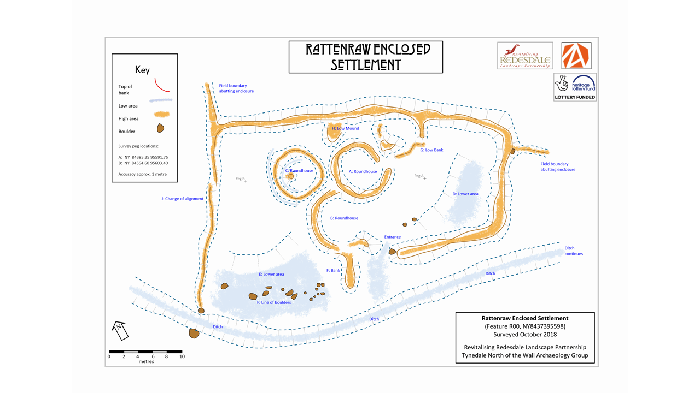Archival data can now be surveyed much as an archaeological site can - by using technology#
1.4 Contributing datasets#
The HDDT integrates ordered datasets from a variety of sources to create one SQLite HTTD database#
Historians can create a bespoke database taking data from multiple sources using the HDDT. This project takes data from:
Source |
Records |
|---|---|
Royal Anthropological Insitiute (RAI) |
2260 |
Quaker Family History Society (QFHS) |
593 |
Independent research at RAI |
1171 |
Independent research at Friends House Quaker Archive, London |
30 |
total records |
3095 |
1.5 Dataset variability#
Component datasets can be ‘Complete’, ‘Incomplete’ or ‘Irregular’ as long as the contributing datasets consist of records where at least one column is shared. In this Project person_name was common to all datasets.
A ‘complete’ dataset#
Would be one like this, where all of the data is contained witin a perfect rectangular block of cells (‘containers’) and every container contains only one data item and every data item can be located by the coordinates ‘Row n, Column n’
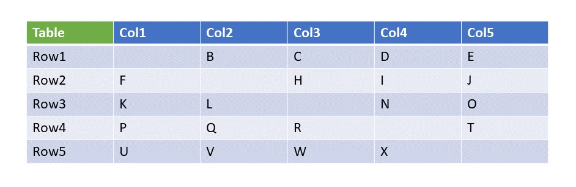An ‘incomplete’ dataset#
When historical data is used often some data is missing (it can be permanently lost). The HDDT is able to accept ‘Incomplete’ datasets. The HDDT does not lose functionality because of the incomplete nature of much historical data.
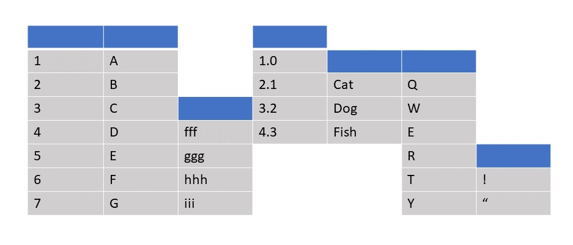An ‘irregular’ dataset#
The HDDT has been designed to accept Irregular datasets. The surviving evidence of past lives is not only often Incomplete, it is frequently Irregular. An additional complication arsises when data from multiple sourcesmust be combined into a single dataset. Here it is likely that multiple donor datasets will have have different dimensions. This arises because either the data in itself is intrinsically different or because different data collectors have compiled data at different times and to different standards or simply prefer different collecting methods.
For the HDDT a qualifying contributing dataset is a data set of any dimensions, complete, incomplete or irregular. The only requirement is that all contributing datasets must consist of prosopographical data and with the key field as PERSON-NAME.
1.6 Data pipeline#
In the HDDT data transits through a data pipeline with each component of the pipeline managed by a different technology. Great care was taken to ensure the the technological array comprised of open source technologies, fully integratable (losslessly) and widely supported and in wide use in the academic community.
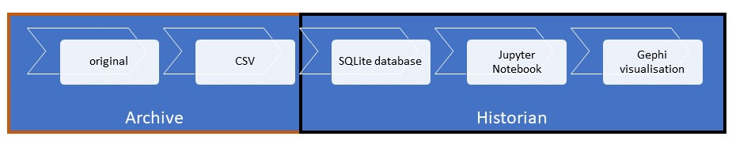1.7 Model output - Data visualisation criteria#
In order to answer the three questions set the selected visualisation technology needed to be able to produce an affiliation network for social network analysis (a bipartite graph). Additionally it needed to be able to present data statically, where all 40 years data are compressed into one visualisation. This would enable the full extent of the network examined to be seen as a single image. Additionally, because the network evolves and changes over time, it was desirable that the technology handle dynamic data, where the network can be visualised progressively one year at a time from 1830 to 1870. Gephi met the project criteria.
1.8 Integrated HTTD SQLite database - 3095 persons#
Entity Relationship Diagram (ERD)#
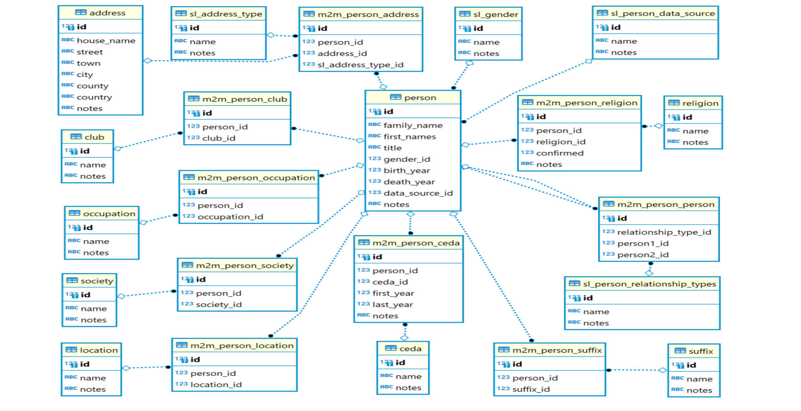At the heart of the HDDT (and the SQLite database) is the ‘person table’, this holds the data (attributes) unique to each person. All contributing datasets have one or more columns containing person names. Further columns often contain attribut data. Some attribute data may be recorded in sevearl donor datasets. Conflicts between dataset Person Name’s are resolved by first choosing to accept the ‘RAI dataset’ as the ‘Authority Index’. Matching names across donor datasets was done by hand in the CSV sheets. This is because (1) person name records from datasets other then the deemed (RAI) dataset were small in number, (2) because name matching requires judgement (names ofthen repeat in familiies and their might be little attributive data in common between the other donor data set and the RAI dataset and (3) because human matching is common practise in genealogy systems, even if algorithms are used to find possible matches. The finding of possible matches in this project was performed most efficiently by the human eye. (A move to the digital should not needlessly repalce the human).
Tables of data items shared amongst persons (such as ‘occupation’, ‘location’, ‘societies’, ‘clubs’) are linked to the person table by m2m tables.
There are also person_person tables to capture family relationships
1.9 HDDT Design Architecture#
The following packages are required to make the HDDT:
package |
Use |
|---|---|
GitHub |
for version control and sharing |
SQL |
the database |
VSC |
building the database |
VSC |
version control interface to Git |
DBeaver |
data cleaning, data management and ananysis |
Jupyter Notebook |
data analysis |
Gephi |
data visualisation |
They were chosen because they are universal, popular, open-source and suitable for handling historical ordered data.
1.10 Project containers contain all required resources#
Data management needs caeful consideration and design. The HDDT uses the cocept of project containers where every container is set up and initialised as a GitHub repo. Then a Jupyter Notebook is created in the same container. All resources needed for a project are then copied from master containers (such as the template CSV files and dataframes in the ceda/database/views container.
Gexf graph files and gexf project files also are set up and saved in each container.
Relative links can then be used and their integrity preserved.
GitGub can also be used for version control providing an audit trail of changes, additions and deletions to the HDDT container system.
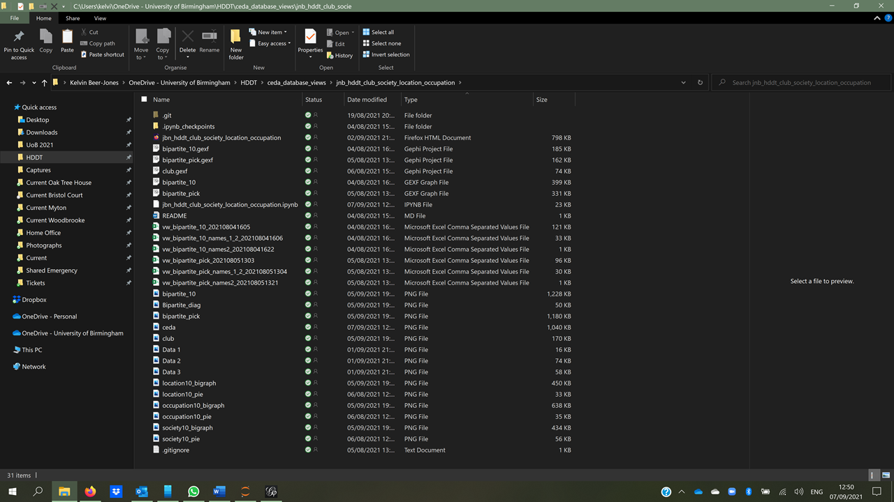1.11 Github#
The entire HDDT project, its description, structure, organisation and resources are contained in one GitHub account:
1.12 SQLite recommendations#
SQLite is a C-language library that implements a small, fast, self-contained, high-reliability, full-featured, SQL database engine. SQLite is the most used database engine in the world. SQLite is built into all mobile phones and most computers and comes bundled inside countless other applications that people use every day (https://www.sqlite.org/index.html).
SQLite is a C-language library that implements a small, fast, self-contained, high-reliability, full-featured, SQL database engine. SQLite is the most used database engine in the world. SQLite is built into all mobile phones and most computers and comes bundled inside countless other applications that people use every day. The SQLite file format is stable, cross-platform, and backwards compatible and the developers pledge to keep it that way through the year 2050. SQLite database files are commonly used as containers to transfer rich content between systems and as a long-term archival format for data. There are over 1 trillion SQLite databases in active use. SQLite source code is in the public-domain and is free to everyone to use for any purpose. https://www.sqlite.org/about.html
In the two decades following its initial release, SQLite has become the most widely deployed database engine in existence. Today, SQLite is found in nearly every smartphone, computer, web browser, television, and automobile. Several factors are likely responsible for its ubiquity, including its in-process design, standalone codebase, extensive test suite, and cross-platform file format. While it supports complex analytical queries, SQLite is primarily designed for fast online transaction processing (OLTP), employing row-oriented execution and a B-tree storage format. However, fueled by the rise of edge computing and data science, there is a growing need for efficient in-process online analytical processing (OLAP). DuckDB, a database engine nicknamed “the SQLite for analytics”, has recently emerged to meet this demand. While DuckDB has shown strong performance on OLAP benchmarks, it is unclear how SQLite compares. Furthermore, we are aware of no work that attempts to identify root causes for SQLite’s performance behavior on OLAP workloads. In this paper, we discuss SQLite in the context of this changing workload landscape. We describe how SQLite evolved from its humble beginnings to the full-featured database engine it is today. We evaluate the performance of modern SQLite on three benchmarks, each representing a different flavor of in-process data management, including transactional, analytical, and blob processing. We delve into analytical data processing on SQLite, identifying key bottlenecks and weighing potential solutions. As a result of our optimizations, SQLite is now up to 4.2X faster on SSB. Finally, we discuss the future of SQLite, envisioning how it will evolve to meet new demands and challenges. ‘Sqlite: past, present, and future’ Gaffney, Kevin P, Prammer, Martin Brasfield, Larry Hipp, D Richard Kennedy, Dan Patel, Jignesh M (Gaffney et al. 2022, 3535)
1.13 VSC recommendations#
Visual Studio Code is a lightweight but powerful source code editor which runs on your desktop and is available for Windows, macOS and Linux. It comes with built-in support for JavaScript, TypeScript and Node.js and has a rich ecosystem of extensions for other languages (such as C++, C#, Java, Python, PHP, Go) and runtimes (such as .NET and Unity)(https://code.visualstudio.com/).
‘Visual Studio Code, commonly referred to as VS Code,is an integrated development environment developed by Microsoft for Windows, Linux, macOS and web browsers. Features include support for debugging, syntax highlighting, intelligent code completion, snippets, code refactoring, and embedded version control with Git. Users can change the theme, keyboard shortcuts, preferences, and install extensions that add functionality. Visual Studio Code is proprietary software released under the “Microsoft Software License”, but based on the MIT licensed program named “Visual Studio Code — Open Source” (also known as “Code — OSS”), also created by Microsoft and available through GitHub. In the 2024 Stack Overflow Developer Survey, out of 58,121 responses, 73.6% of respondents reported using Visual Studio Code, more than twice the percentage of respondents who reported using its nearest text editor and/or IDE alternative, Visual Studio. https://en.wikipedia.org/wiki/Visual_Studio_Code
‘Microsoft develops the free code editor Visual Studio Code (VSCode), that is used by more than 11 million users. In the StackOverflow developer survey from 2019, about 50% of the participants stated that they use VSCode, showing how popular this editor has become. The underlying source code is considered free (as in free speech) and referred to as Code - OSS. Microsoft uses Code - OSS as a base, slightly modifies it (e.g. adds a marketplace integration for distributing plugins), and releases it with a proprietary license under the name \Visual Studio Code”. Although this custom license makes VSCode technically speaking non-free and non-open source, other distributions of Code - OSS are free and contain substitutes for the missing features, for example VSCodium. Further analysis of VSCode and Code - OSS regarding aspects of FOSS (free and open source software) development can be found in the extensive preliminary study that was conducted before the project phase.’ ‘ Practical Study of Visual Studio Code’ Michael Plainer (Plainer 2021, 2)
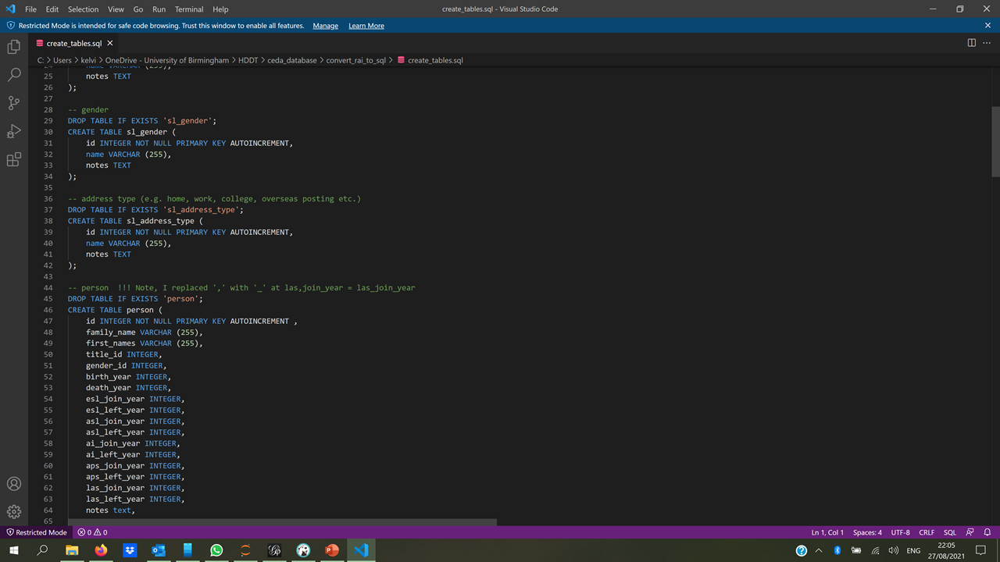1.14 VSC (Version control interface local to online Git Repo’s#

1.15 DBeaver recommendations#
‘DBeaver is a universal database management tool for everyone who needs to work with data in a professional way. With DBeaver you are able to manipulate your data, for example, in a regular spreadsheet, create analytical reports based on records from different data storages, and export information in an appropriate format. For advanced database users, DBeaver suggests a powerful SQL-editor, plenty of administration features, abilities of data and schema migration, monitoring database connection sessions, and a lot more. Out-of-the box DBeaver supports more than 80 databases. Having usability as its main goal, DBeaver offers:
Carefully designed and implemented User Interface
Support of Cloud data sources
Support for Enterprise security standard
Capability to work with various extensions for integration with Excel, Git, and others.
Great number of features
Multiplatform support’ dbeaver/dbeaver
DBeaver is a SQL client software application and a database administration tool. For relational databases it uses the JDBC application programming interface (API) to interact with databases via a JDBC driver. For other databases (NoSQL) it uses proprietary database drivers. It provides an editor that supports code completion and syntax highlighting. It provides a plug-in architecture (based on the Eclipse plugins architecture) that allows users to modify much of the application’s behavior to provide database-specific functionality or features that are database-independent. It is written in Java and based on the Eclipse platform. The community edition (CE) of DBeaver is a free and open source software that is distributed under the Apache License. A closed-source enterprise edition of DBeaver is distributed under a commercial license. https://en.wikipedia.org/wiki/DBeaver
Universal Database Tool
DBeaver is a free multi-platform database tool for developers, database administrators, analysts and all people who need to work with databases. Supports all popular databases: MySQL, PostgreSQL, SQLite, Oracle, DB2, SQL Server, Sybase, MS Access, Teradata, Firebird, Apache Hive, Phoenix, Presto, etc.(https://dbeaver.io/)
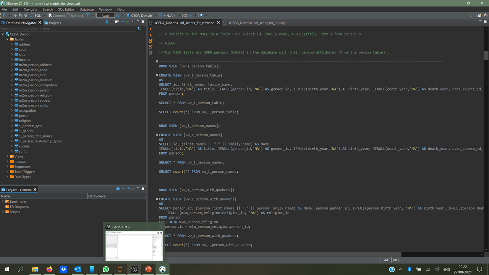1.16 Jupyter Notebook recommendations#
The Jupyter Notebook is an open-source web application that allows you to create and share documents that contain live code, equations, visualizations and narrative text. Uses include: data cleaning and transformation, numerical simulation, statistical modeling, data visualization, machine learning. (https://jupyter.org/).
‘The Jupyter notebook is an open-source, browser-based tool functioning as a virtual lab notebook to support workflows, code, data, and visualizations detailing the research process. It is machine and human-readable, which facilitates interoperability and scholarly communication. These notebooks can live in online repositories and provide connections to research objects such as datasets, code, methods documents, workflows, and publications that reside elsewhere. Jupyter notebooks are one means to make science more open. Their relevance to the JCDL community lies in their interaction with multiple components of digital library infrastructure such as digital identifiers, persistence mechanisms, version control, datasets, documentation, software, and publications. Our poster examines how Jupyter notebooks embody the FAIR (Findable, Accessible, Interoperable, Reusable) principles for digital objects and assess their utility as viable tools for scholarly communication.’ ‘Using the Jupyter notebook as a tool for open science: An empirical study’ Randles Bernadette M, Pasquetto Irene V, Golshan Milena S, Borgman Christine L. (Randles et al. 2017, 1)
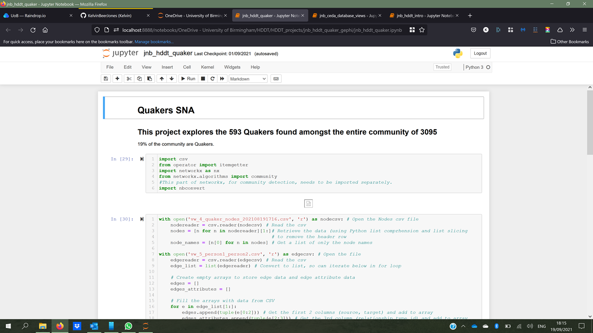1.17 Gephi recommends#
‘Gephi is an open source software for graph and network analysis. It uses a 3D render engine to display large networks in real-time and to speed up the exploration. A flexible and multi-task architecture brings new possibilities to work with complex data sets and produce valuable visual results. We present several key features of Gephi in the context of interactive exploration and interpretation of networks. It provides easy and broad access to network data and allows for spatializing, filtering, navigating, manipulating and clustering. Finally, by presenting dynamic features of Gephi, we highlight key aspects of dynamic network visualization.’ Bastian Mathieu, Heymann Sebastien, Jacomy, Mathieu Gephi: an open source software for exploring and manipulating networks. (Bastian, Heymann, and Jacomy 2009, 361)
Gephi is a tool for data analysts and scientists keen to explore and understand graphs. Like Photoshop™ but for graph data, the user interacts with the representation, manipulate the structures, shapes and colors to reveal hidden patterns. The goal is to help data analysts to make hypothesis, intuitively discover patterns, isolate structure singularities or faults during data sourcing. It is a complementary tool to traditional statistics, as visual thinking with interactive interfaces is now recognized to facilitate reasoning. This is a software for Exploratory Data Analysis, a paradigm appeared in the Visual Analytics field of research. https://gephi.org/features/
Gephi is a tool for data analysts and scientists keen to explore and understand graphs. Like Photoshop™ but for graph data, the user interacts with the representation, manipulate the structures, shapes and colors to reveal hidden patterns. The goal is to help data analysts to make hypothesis, intuitively discover patterns, isolate structure singularities or faults during data sourcing. It is a complementary tool to traditional statistics, as visual thinking with interactive interfaces is now recognized to facilitate reasoning. This is a software for Exploratory Data Analysis, a paradigm appeared in the Visual Analytics field of research.(https://gephi.org/features/)
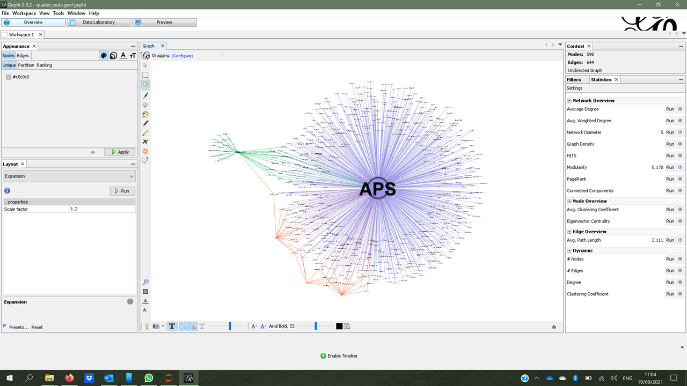1.18 Excel recommends#
https://www.datacamp.com/tutorial/data-cleaning-in-excel-a-beginners-guide
https://cartong.pages.gitlab.cartong.org/learning-corner/en/3_nettoyage/3_3_nettoyage_donnees
1.19 References#
Bastian, Mathieu, Sebastien Heymann, and Mathieu Jacomy. 2009. “Gephi: an open source software for exploring and manipulating networks.” Proceedings of the international AAAI conference on web and social media.
Gaffney, Kevin P, Martin Prammer, Larry Brasfield, D Richard Hipp, Dan Kennedy, and Jignesh M Patel. 2022. “Sqlite: past, present, and future.” Proceedings of the VLDB Endowment 15 (12).
Plainer, Michael. 2021. “Practical Study of Visual Studio Code.”
Randles, Bernadette M, Irene V Pasquetto, Milena S Golshan, and Christine L Borgman. 2017. “Using the Jupyter notebook as a tool for open science: An empirical study.” 2017 ACM/IEEE Joint Conference on Digital Libraries (JCDL).
1.20 600 Quakers amongst 3000 activists for 40 years.#
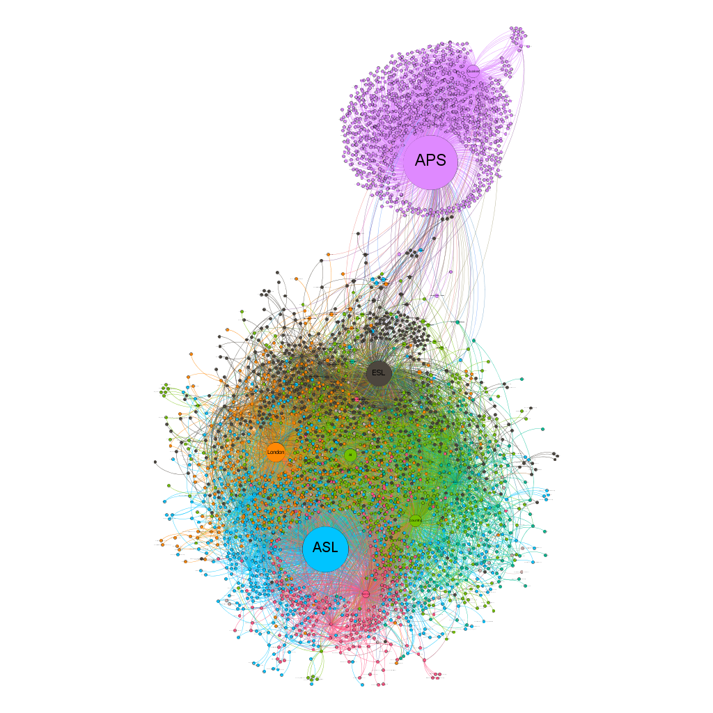P7 Chapter 2 The CEDA Members#
Thesis Chapter 6 Section 6.6#
File name: jnb_hddt_sql_tables
Install necessary resources#
import pandas as pd
import csv
# First call the sql tables as they appear in the database (Part One)
ceda = pd.read_csv ('ceda_202107151833.csv')
club = pd.read_csv ('club_202107151833.csv')
location = pd.read_csv ('location_202107151833.csv')
person_ceda = pd.read_csv ('m2m_person_ceda_202107151835.csv')
person_club = pd.read_csv ('m2m_person_club_202107151835.csv')
person_location = pd.read_csv ('m2m_person_location_202107151835.csv')
person_occupation = pd.read_csv ('m2m_person_occupation_202107151836.csv')
person_person = pd.read_csv('m2m_person_person_202107151836.csv')
person_religion = pd.read_csv ('m2m_person_religion_202107151836.csv')
person_society = pd.read_csv ('m2m_person_society_202107151836.csv')
occupation = pd.read_csv ('occupation_202107151834.csv')
person = pd.read_csv ('person_202107151834.csv')
religion = pd.read_csv ('religion_202107151834.csv')
society = pd.read_csv('society_202107151834.csv')
# next call the sql tables rendered in Gephi format (Part Two)
# call all Names
gephi_all_names = pd.read_csv ('vw_2_all_bipartite_memberships_202107121854.csv')
gephi_names_notceda = pd.read_csv ('vw_2_all_bipartite_memberships_xceda_202107121855.csv')
# Then call all Tuples (Source and Target)
gephi_person_ceda = pd.read_csv ('vw_2_ceda_membership_202107121855.csv')
gephi_person_club = pd.read_csv ('vw_2_club_membership_202107121855.csv')
gephi_person_location = pd.read_csv ('vw_2_location_membership_202107121856.csv')
gephi_person_occupation = pd.read_csv ('vw_2_occupation_membership_202107121856.csv')
gephi_person_person = pd.read_csv('vw_2_person_person_relationships_202107161545.csv')
gephi_person_religion = pd.read_csv ('vw_2_religion_membership_202107121856.csv')
gephi_person_society = pd.read_csv ('vw_2_society_membership_202107121858.csv')
import matplotlib.pyplot as plt
plt.rcParams.update({'font.size': 18})
plt.rc('figure', figsize=(20, 10))
import numpy as np
---------------------------------------------------------------------------
FileNotFoundError Traceback (most recent call last)
Cell In[1], line 7
3 import csv
5 # First call the sql tables as they appear in the database (Part One)
----> 7 ceda = pd.read_csv ('ceda_202107151833.csv')
8 club = pd.read_csv ('club_202107151833.csv')
9 location = pd.read_csv ('location_202107151833.csv')
File /Library/Frameworks/Python.framework/Versions/3.10/lib/python3.10/site-packages/pandas/io/parsers/readers.py:1026, in read_csv(filepath_or_buffer, sep, delimiter, header, names, index_col, usecols, dtype, engine, converters, true_values, false_values, skipinitialspace, skiprows, skipfooter, nrows, na_values, keep_default_na, na_filter, verbose, skip_blank_lines, parse_dates, infer_datetime_format, keep_date_col, date_parser, date_format, dayfirst, cache_dates, iterator, chunksize, compression, thousands, decimal, lineterminator, quotechar, quoting, doublequote, escapechar, comment, encoding, encoding_errors, dialect, on_bad_lines, delim_whitespace, low_memory, memory_map, float_precision, storage_options, dtype_backend)
1013 kwds_defaults = _refine_defaults_read(
1014 dialect,
1015 delimiter,
(...)
1022 dtype_backend=dtype_backend,
1023 )
1024 kwds.update(kwds_defaults)
-> 1026 return _read(filepath_or_buffer, kwds)
File /Library/Frameworks/Python.framework/Versions/3.10/lib/python3.10/site-packages/pandas/io/parsers/readers.py:620, in _read(filepath_or_buffer, kwds)
617 _validate_names(kwds.get("names", None))
619 # Create the parser.
--> 620 parser = TextFileReader(filepath_or_buffer, **kwds)
622 if chunksize or iterator:
623 return parser
File /Library/Frameworks/Python.framework/Versions/3.10/lib/python3.10/site-packages/pandas/io/parsers/readers.py:1620, in TextFileReader.__init__(self, f, engine, **kwds)
1617 self.options["has_index_names"] = kwds["has_index_names"]
1619 self.handles: IOHandles | None = None
-> 1620 self._engine = self._make_engine(f, self.engine)
File /Library/Frameworks/Python.framework/Versions/3.10/lib/python3.10/site-packages/pandas/io/parsers/readers.py:1880, in TextFileReader._make_engine(self, f, engine)
1878 if "b" not in mode:
1879 mode += "b"
-> 1880 self.handles = get_handle(
1881 f,
1882 mode,
1883 encoding=self.options.get("encoding", None),
1884 compression=self.options.get("compression", None),
1885 memory_map=self.options.get("memory_map", False),
1886 is_text=is_text,
1887 errors=self.options.get("encoding_errors", "strict"),
1888 storage_options=self.options.get("storage_options", None),
1889 )
1890 assert self.handles is not None
1891 f = self.handles.handle
File /Library/Frameworks/Python.framework/Versions/3.10/lib/python3.10/site-packages/pandas/io/common.py:873, in get_handle(path_or_buf, mode, encoding, compression, memory_map, is_text, errors, storage_options)
868 elif isinstance(handle, str):
869 # Check whether the filename is to be opened in binary mode.
870 # Binary mode does not support 'encoding' and 'newline'.
871 if ioargs.encoding and "b" not in ioargs.mode:
872 # Encoding
--> 873 handle = open(
874 handle,
875 ioargs.mode,
876 encoding=ioargs.encoding,
877 errors=errors,
878 newline="",
879 )
880 else:
881 # Binary mode
882 handle = open(handle, ioargs.mode)
FileNotFoundError: [Errno 2] No such file or directory: 'ceda_202107151833.csv'
2.1 Introduction#
The Historical Data Digital Toolkit (HDDT) comprises of data extracted from one or more ordered datasets (which can be data sourced from several archives). Mulitple donor datasets must share a common data field to enable datasets from multiple donors to be linked together (combined). For this project the common data field is a person’s name. Data extracted from the RAI, QFHS and my own research (at RAI and Friends House, London), produced records where each record provided data about a person. All of the persons in this project were members of the Centres for the Emergence of the Discipline of Anthropology in Britain 1830 to 1870 (the CEDA).
Collected data (after cleaning and combining) was then rendered as CSV sheets and these were used to creatre SQL database tables.
The person columns ‘Family Name’ and ‘First Names’ in the database are common to all datatables. Therefore the person table is the ‘master’ table (all persons recorded have a unique ID, and authority index concerns were resolved by accepting the RAI dataset as the project authority index). Attributable data was then attached to the person table (such as date of birth).
Other related data items are captured in relatable tables and all relatable tables have a shared structure (‘id’, ‘name’, ‘notes’).
m2m tables were then built linking the person data table to related datatables. m2m tables allow for many to many realtionships.
Note: The m2m_person_ceda table includes the attributable data ‘first_year’ and ‘last_year’.
The person_person table will generate social network graphs, all other m2m_tables will generate bipartite graphs (bigraphs).
2.2 The Entity Relationship Diagram#

2.3 ERD statistics#
6 CEDA Societies:#
QCA Quaker Committee on the Aborigines, 31 members.
APS Aborigines Protection Society, 1171 members.
ESL Ethnological Society of London, 748 members.
ASL Anthropological Society of London, 1334 members.
AI Anthropological Institute. 610 members.
514 attribute types:#
ceda (6)
club (68)
location (83)
occupation (93)
person (3095)
suffix (155)
religion (4) Only one group is present, 1 = Quaker.
society (260)
12097 relationships#
m2m_person_ceda (3894)
m2m_person_club (323)
m2m_person_location (2061)
m2m_person_occupation (1883)
m2m_person_person (2099)
m2m_person_religion (593)
m2m_person_society (1238)
m2m_person_suffix (1351) Not used in this project
2.4 The structure and dimensions of all SQL tables#
Table |
Rows |
Columns |
|---|---|---|
ceda |
6 |
1 |
person_ceda |
3894 |
4 |
club |
68 |
1 |
person_club |
323 |
2 |
location |
83 |
1 |
person_location |
2061 |
2 |
occupation |
93 |
1 |
person_occupation |
1883 |
2 |
person |
3095 |
7 |
person_person |
2099 |
3 |
religion |
4 |
1 |
person_religion |
593 |
3 |
society |
260 |
1 |
person_society |
1238 |
2 |
Note:
Bipartite relationships = 9992 (+2099 person_person relationships = 12091 total relationships)
2.5 The CEDA#
code cells#
ceda
| id | name | notes | |
|---|---|---|---|
| 0 | 1 | QCA | NaN |
| 1 | 2 | APS | NaN |
| 2 | 3 | ESL | NaN |
| 3 | 4 | ASL | NaN |
| 4 | 5 | LAS | NaN |
| 5 | 6 | AI | NaN |
person_ceda
| id | person_id | ceda_id | first_year | last_year | notes | |
|---|---|---|---|---|---|---|
| 0 | 1 | 5 | 3 | 1844 | 1844 | NaN |
| 1 | 2 | 7 | 3 | 1844 | 1844 | NaN |
| 2 | 3 | 8 | 3 | 1858 | 1871 | NaN |
| 3 | 4 | 12 | 3 | 1860 | 1871 | NaN |
| 4 | 5 | 14 | 3 | 1843 | 1845 | NaN |
| ... | ... | ... | ... | ... | ... | ... |
| 3889 | 4096 | 3415 | 2 | 1839 | 1850 | NaN |
| 3890 | 4097 | 3416 | 2 | 1861 | 1862 | NaN |
| 3891 | 4098 | 3417 | 2 | 1853 | 1856 | NaN |
| 3892 | 4099 | 3418 | 2 | 1840 | 1840 | NaN |
| 3893 | 4100 | 3419 | 2 | 1840 | 1867 | NaN |
3894 rows × 6 columns
2.6 All CEDA members’ relationships visualisation#
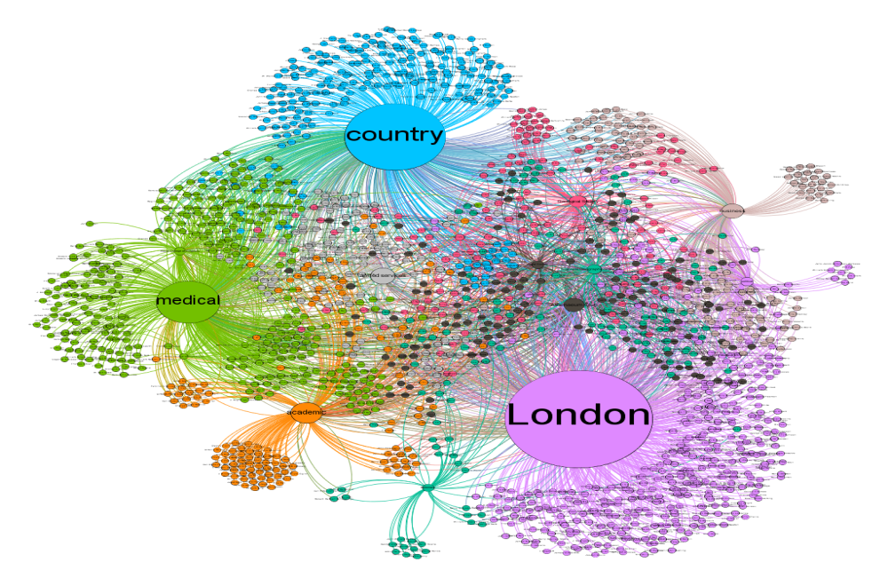The graph above shows all of the popular bigraph data in the database. Including all data result in a ‘hairball’ because the network is too dense to be capable of analysis at this (thehighest) level.
1850 members of the community are recorded as members of 35 popular entities (Locations, occupations, societies and the Athenaeum Club). These entities make a sphere of popular interest graph where meetings between members concerning the CEDA may have taken place, equally they may also be places where members might meet up only infrequently or informally.
The visual analysis of connectivity between members in single societies and between members of multiple societies indicates the extent that the community is societally connected. The 1850 make up 60% of the entire community.
2.7 All persons are members of at least one CEDA society#
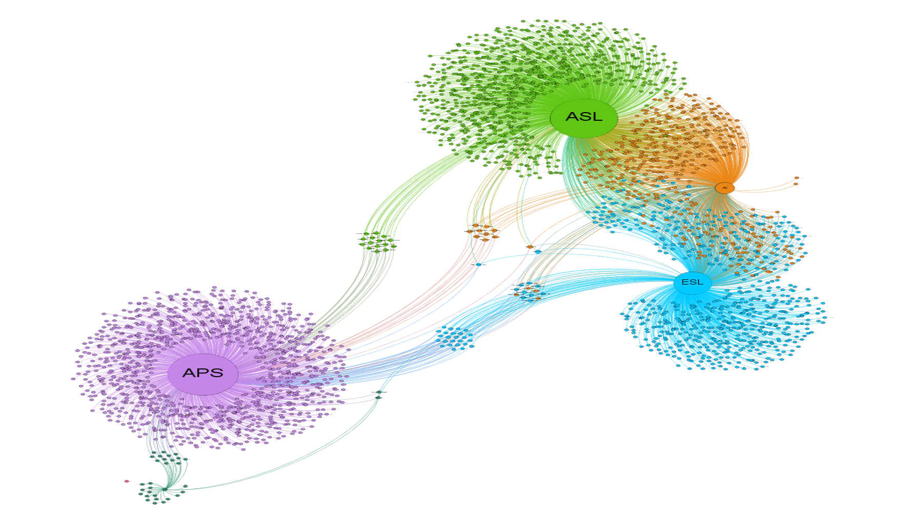2.8 Memberships in each CEDA table#
person_ceda.groupby('ceda_id')['person_id'].nunique().plot(kind='bar')
plt.title ("CEDA memberships")
plt.xlabel ("CEDA")
plt.ylabel ("Number of persons")
plt.show()

Chart (above) Memberships by CEDA society. - 1 QCA, - 2 APS, - 3 ESL, - 4 ASL, - 6 AI#
Note: 5 - LAS data has not been collected by the RAI archivists
2.9 CEDA members were also members of 68 clubs#
club
| id | name | notes | |
|---|---|---|---|
| 0 | 2 | Athenaeum Club | NaN |
| 1 | 3 | Marlborough Club | NaN |
| 2 | 4 | Carlton Club | NaN |
| 3 | 5 | Oriental Club | NaN |
| 4 | 6 | National Club | NaN |
| ... | ... | ... | ... |
| 63 | 65 | Royal Albert Yacht Club | NaN |
| 64 | 66 | Berwickshire Naturalists Field Club | NaN |
| 65 | 67 | Indian Club | NaN |
| 66 | 68 | Ad Eundem | NaN |
| 67 | 69 | Arthurs Club | NaN |
68 rows × 3 columns
person_club
| id | person_id | club_id | |
|---|---|---|---|
| 0 | 1 | 7 | 2 |
| 1 | 2 | 22 | 2 |
| 2 | 3 | 33 | 2 |
| 3 | 4 | 33 | 3 |
| 4 | 5 | 33 | 4 |
| ... | ... | ... | ... |
| 318 | 356 | 2163 | 5 |
| 319 | 357 | 2196 | 2 |
| 320 | 358 | 2214 | 4 |
| 321 | 359 | 2223 | 2 |
| 322 | 360 | 2251 | 2 |
323 rows × 3 columns
person_club.groupby('club_id')['person_id'].nunique().plot(kind='pie')
plt.title ("Club id")
plt.xlabel ("Club")
plt.ylabel ("Number of persons")
plt.show()
The Athaneum Club membrship (2) exceeds that of all other clubs combined.
Note - ignore clubs outside of the top 5?
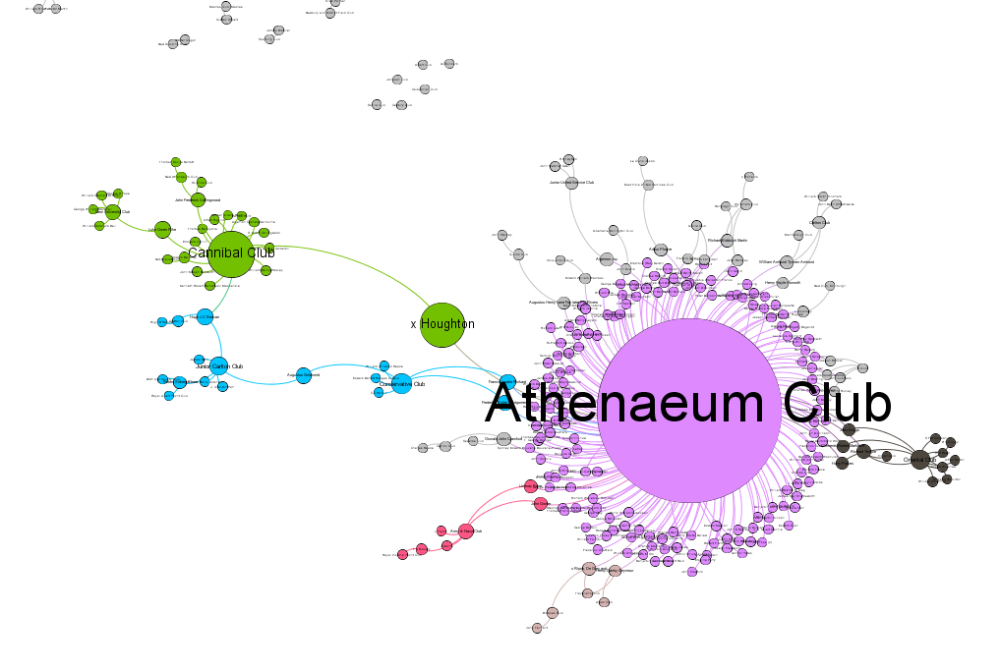Clubs will not be analysed in this project but the Athenaeum club can be used as an attribute (because it is a singularity).
2.10 CEDA members are identified with 83 locations#
location
| id | name | notes | |
|---|---|---|---|
| 0 | 1 | London | NaN |
| 1 | 3 | country | NaN |
| 2 | 4 | Africa | NaN |
| 3 | 5 | America | NaN |
| 4 | 6 | Scotland | NaN |
| ... | ... | ... | ... |
| 78 | 80 | Madagascar | NaN |
| 79 | 81 | Ecuador | NaN |
| 80 | 82 | Seychelles | NaN |
| 81 | 83 | Panama | NaN |
| 82 | 84 | Armenia | NaN |
83 rows × 3 columns
person_location
| id | person_id | location_id | |
|---|---|---|---|
| 0 | 1 | 1 | 1 |
| 1 | 2 | 3 | 3 |
| 2 | 3 | 4 | 4 |
| 3 | 4 | 6 | 1 |
| 4 | 5 | 8 | 1 |
| ... | ... | ... | ... |
| 2056 | 2257 | 2255 | 1 |
| 2057 | 2259 | 2258 | 3 |
| 2058 | 2260 | 2259 | 83 |
| 2059 | 2261 | 2260 | 84 |
| 2060 | 2262 | 2260 | 31 |
2061 rows × 3 columns
person_location.groupby('location_id')['person_id'].nunique().plot(kind='pie')
plt.title ("Location id")
plt.xlabel ("Locations")
plt.ylabel ("Number of persons")
plt.show()

Location ID |
location |
Count |
|---|---|---|
1 |
London |
806 |
3 |
country |
578 |
6 |
Scotland |
88 |
7 |
India |
86 |
4 |
Africa |
54 |
5 |
America |
41 |
19 |
Germany |
37 |
21 |
France |
36 |
12 |
Ireland |
32 |
18 |
Australia |
32 |
25 |
Wales |
23 |
Locations table. Note: London, Country and Scotland equal 1472, more than 50% of all locations#
2.11 top 10 locations#
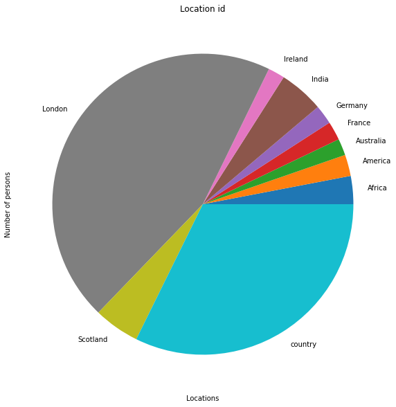2.12 Some persons are associated with mulitple locations#
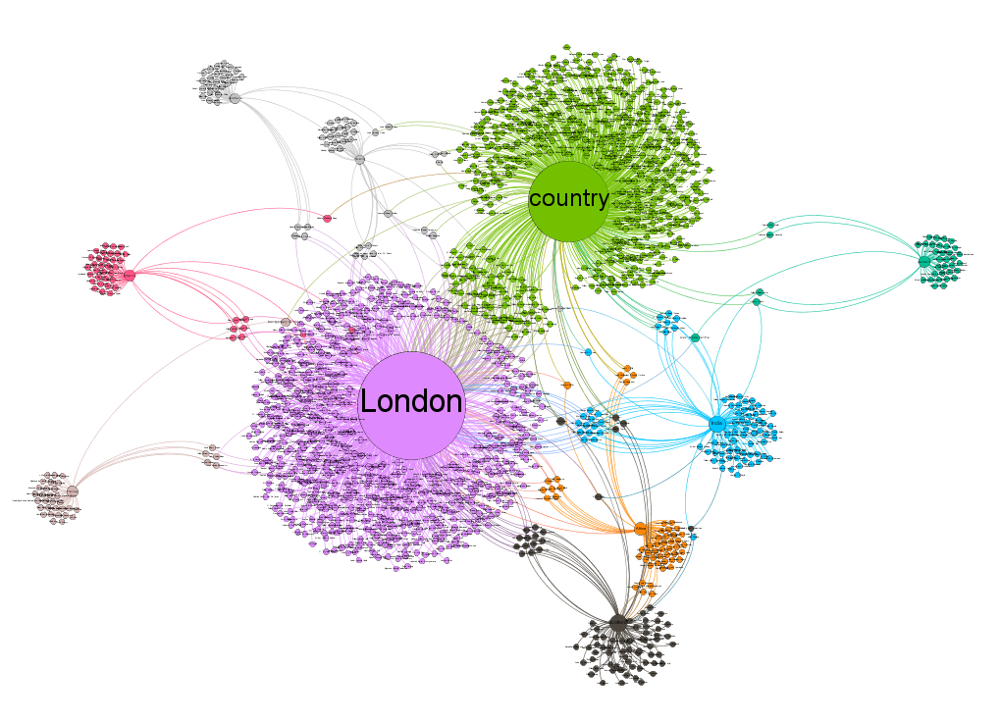We can see that London and ‘country’(sic) are the most populated locations. Because the ‘country’ location is an aggregate (and not a specific location) we can think of London and ‘country’ as a twin centre. Within the twin centre we can see the members of both London and ‘country’ locations and that the members of each are highly networked. We can also see that the London location contains many members who have no association with any other group (including ‘country’). London 1830 - 1870, was densely populated and so it is possible that members of the London location had other modes of association. Because the ‘country’ location is an aggregate we cannot make the same analysis to the same extent, it is possible that many members in (say) Newcastle had no association with other members in (say) Bristol. We can see the large group of members who were members of both London and ‘country’ locations. It is highly likely that these members served as conduits of communication and group cohesion. It is interesting to note that only 3 members of this London and ‘country’ group were members of groups outside of the twin centre.
Eight other location each have a membership of around 30 members (we can call these the satellites), all of the satellite groups relate directly to the twin centre with very few members associated with more that one satellite location.
Australia and Ireland have associations with both London and ‘country’. The German location is most closely associated with the ‘country’ group. All of the other locations are strongly associated with the London location.
Germany (far right) is the location least associated with London. Alex Nidda Genthe is the only member from Germany who is also a member of the London location. Friedrich Max Muller, Frederick Augustus Haverick and Gustav Oppert each network with ‘country’ members. William Wilson Hunter is the only ‘country’ member who also appears in the Germany location. He and Gustav oppert also have a location connection with India.
2.13 CEDA members occupations#
occupation
| id | name | notes | |
|---|---|---|---|
| 0 | 1 | literary | NaN |
| 1 | 3 | medical | NaN |
| 2 | 4 | armed services | NaN |
| 3 | 5 | political | NaN |
| 4 | 6 | church | NaN |
| ... | ... | ... | ... |
| 88 | 90 | farmer | NaN |
| 89 | 91 | clockmaker | NaN |
| 90 | 92 | plant collector | NaN |
| 91 | 93 | private means | NaN |
| 92 | 94 | oceanographer | NaN |
93 rows × 3 columns
person_occupation
| id | person_id | occupation_id | |
|---|---|---|---|
| 0 | 1 | 1 | 1 |
| 1 | 2 | 3 | 3 |
| 2 | 3 | 3 | 4 |
| 3 | 4 | 5 | 5 |
| 4 | 5 | 8 | 3 |
| ... | ... | ... | ... |
| 1878 | 2122 | 2252 | 3 |
| 1879 | 2123 | 2253 | 3 |
| 1880 | 2124 | 2254 | 3 |
| 1881 | 2125 | 2255 | 16 |
| 1882 | 2127 | 2259 | 13 |
1883 rows × 3 columns
person_occupation.groupby('occupation_id')['person_id'].nunique().plot(kind='pie')
plt.title ("Occupation id")
plt.xlabel ("Occupations")
plt.ylabel ("Number of persons")
plt.show()

Occupation ID |
occupation |
Number |
|---|---|---|
3 |
medical |
424 |
7 |
academic |
|
16 |
business |
174 |
4 |
armed services |
151 |
11 |
legal |
114 |
5 |
political |
102 |
6 |
church |
100 |
21 |
aristocracy |
70 |
1 |
literary |
48 |
13 |
diplomacy |
44 |
29 |
administrative |
35 |
Table - The top 11 occupations
2.14 the top 10 Occupations#
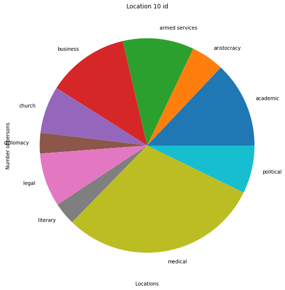2.15 Some members have more than one occupation#
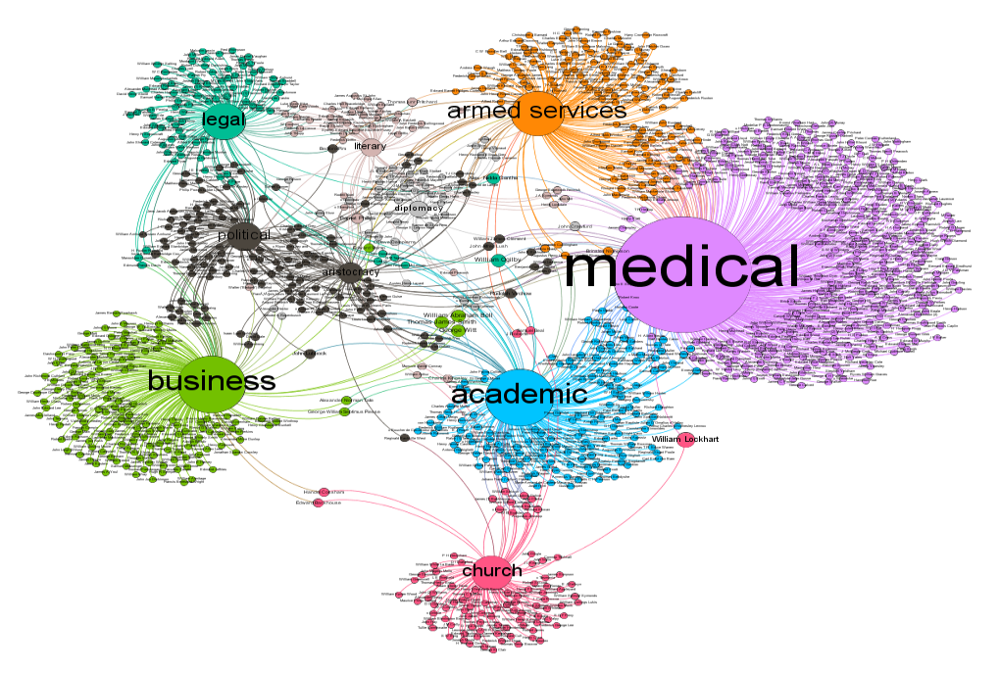We can see that ‘medical’,’academic’ and ‘armed services’ together account for half of the members by occupation. We can also see that the largest three occupational categories each contain many members who have no association with any other occupational group. We can see that the medical categories contain many members who are also members of the other two principal categories (‘academic’ and ‘armed services’). It is highly likely that these members served as conduits of communication and group cohesion amongst the three principal occupational cegories.
Seven other occupations each have a range of members with literary the lowest and business the highest. All of the satellite groups relate directly to the triple centre with many members also associated with more that one other satellite occupation.
It is surprising the the least networked occupation is ‘church’ and perhaps less so that ‘business’ and ‘legal’are highly networked.
Several individuals form a web of interconnectedness between the members occupations.
2.16 Society memberships#
person_society.groupby('society_id')['person_id'].nunique().plot(kind='pie')
plt.title ("Society id")
plt.xlabel ("Society")
plt.ylabel ("Number of persons")
plt.show()

2.17 Top 10 Society memberships#
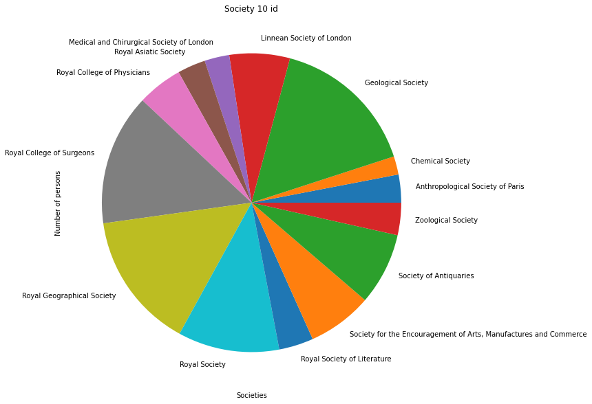2.18 Some CEDA members are members of multiple societies#
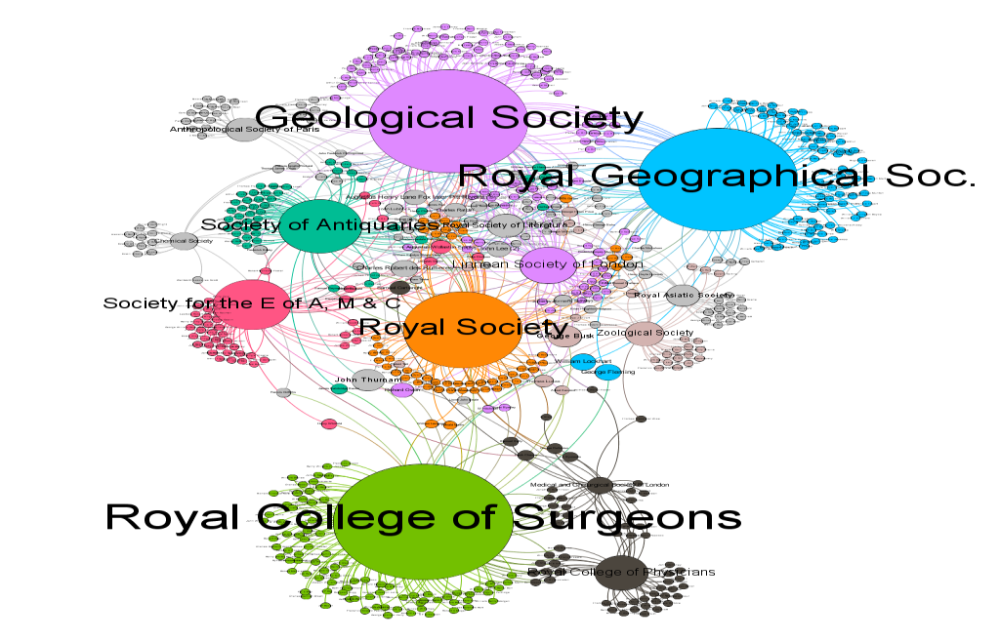We can see that ‘Geological Society’ and the ‘Royal Goegraphical Society’ together account for a significant number of members by society. The ‘Royal College of Surgeons’, the ‘Medical and Chirurgical Society’ and the ‘College of Physicians’ form the next largest cluster of memberships of societies. These two clusters each contain many members who have no association with any other society. We can see that the medical group and the geographical group have few members in common. The ‘Royal Society’ and the ‘Linnean Society’ in the centre have between them the greatest level of networking amongst all of the societies. It is highly likely that these members served as conduits of communication and group cohesion amongst the two principal society groups.
Many other societies have a range of members all of whom are highly interconnected. All of the satellite groups relate most closely to the ‘Royal Society’ and the ‘Linnean Society’ rather than to the two larger clusters. Many members of the smaller satellite societies are also associated with more that one other satellite occupation.
It is surprising the the least networked occupation is the ‘Royal College of Surgeons’ and perhaps less so that the ‘Geological Society’ and the ‘Royal Geographical Society’ are highly networked.
Several individuals form a web of interconnectedness between the members of societies.
2.19 All Quaker relationships#
person_person
| id | relationship_type_id | person1_id | person2_id | |
|---|---|---|---|---|
| 0 | 1 | 1 | 23 | 2346 |
| 1 | 2 | 1 | 2264 | 2346 |
| 2 | 3 | 1 | 2265 | 2547 |
| 3 | 4 | 1 | 2545 | 2547 |
| 4 | 5 | 1 | 2546 | 2547 |
| ... | ... | ... | ... | ... |
| 2094 | 4373 | 3 | 2494 | 2496 |
| 2095 | 4374 | 3 | 2495 | 2579 |
| 2096 | 4376 | 3 | 2867 | 2868 |
| 2097 | 4378 | 3 | 2869 | 2871 |
| 2098 | 4382 | 3 | 2503 | 2876 |
2099 rows × 4 columns
2.20 Quaker family relationships#
person_person.groupby('relationship_type_id')['id'].nunique().plot(kind='bar')
plt.title ("Person to Person Relationships")
plt.xlabel ("Relationship Types")
plt.ylabel ("Number of persons")
plt.show()

Chart above Person to person relationships (Quakers only)#
Key - 1 = Distant relations, 2 = Close relations, 3 = Immediate relations#
2.21 Quaker members of the CEDA#
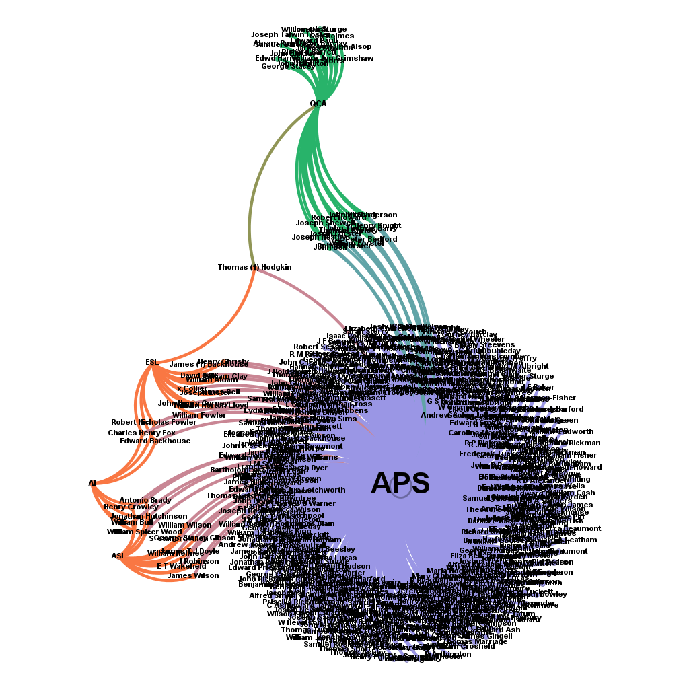2.22 - All SQL relatable tables rendered in Gephi format#
Rendering data in Gephi format#
JNB uses NetworkX to generate GexF files for data to be used to produce graph files for network analysis in Gephi. Two files must be generated:
A file of ‘Names’ listing the names of all nodes to be used in a graph (These are ‘persons’ and all entities in related data tables, such as ‘occupations’). Each row in a Names table must be unique and referenced in the ‘Tuples’ (or edges) table.
Note - For Names to be Gephi compliant the headers ‘family_name’ and ‘first_names’ must be combined into a single header -‘Names’.
A ‘Tuples’ (or edges) table made up of two columns of Names where the two Names are related. The first column must be headed ‘Source’ and the second column ‘Target’.
‘Names’ and ‘Tuples’ tables can also have an ‘id’ column (if not then Gephi will assign one).
Note - Because ‘Names’, ‘Source’ and ‘Target’ are language names in Gephi capitalisation is important.
SQL views have been written to convert the data tables into Gephi standard.
gephi_all_names
| ID | Source | Target | |
|---|---|---|---|
| 0 | 1 | Arthur William A Beckett | ASL |
| 1 | 1 | Arthur William A Beckett | London |
| 2 | 1 | Arthur William A Beckett | literary |
| 3 | 3 | Andrew Mercer Adam | ASL |
| 4 | 3 | Andrew Mercer Adam | armed services |
| ... | ... | ... | ... |
| 9987 | 3415 | x Wright | APS |
| 9988 | 3416 | W Wrigley | APS |
| 9989 | 3417 | James Yates | APS |
| 9990 | 3418 | John Young | APS |
| 9991 | 3419 | Thomas Zachary | APS |
9992 rows × 3 columns
gephi_names_notceda
| ID | Source | Target | |
|---|---|---|---|
| 0 | 1 | Arthur William A Beckett | London |
| 1 | 1 | Arthur William A Beckett | literary |
| 2 | 3 | Andrew Mercer Adam | armed services |
| 3 | 3 | Andrew Mercer Adam | country |
| 4 | 3 | Andrew Mercer Adam | medical |
| ... | ... | ... | ... |
| 6093 | 2876 | Joshua Wilson | Quaker |
| 6094 | 2877 | F Woodhead | Quaker |
| 6095 | 2878 | W Woolston | Quaker |
| 6096 | 2879 | Francis Wright | Quaker |
| 6097 | 2880 | S W Wright | Quaker |
6098 rows × 3 columns
gephi_person_ceda
| ID | Source | Target | |
|---|---|---|---|
| 0 | 5 | William Adam | ESL |
| 1 | 7 | William (1) Adams | ESL |
| 2 | 8 | William (2) Adams | ESL |
| 3 | 12 | Louis Agassiz | ESL |
| 4 | 14 | Augustine Aglio | ESL |
| ... | ... | ... | ... |
| 3889 | 3415 | x Wright | APS |
| 3890 | 3416 | W Wrigley | APS |
| 3891 | 3417 | James Yates | APS |
| 3892 | 3418 | John Young | APS |
| 3893 | 3419 | Thomas Zachary | APS |
3894 rows × 3 columns
gephi_person_club
| ID | Source | Target | |
|---|---|---|---|
| 0 | 7 | William (1) Adams | Athenaeum Club |
| 1 | 22 | Rutherford Alcock | Athenaeum Club |
| 2 | 33 | William Amhurst Tyssen Amhurst | Athenaeum Club |
| 3 | 33 | William Amhurst Tyssen Amhurst | Marlborough Club |
| 4 | 33 | William Amhurst Tyssen Amhurst | Carlton Club |
| ... | ... | ... | ... |
| 318 | 2163 | James Whishaw | Oriental Club |
| 319 | 2196 | S W D Williams | Athenaeum Club |
| 320 | 2214 | William Smith Windham | Carlton Club |
| 321 | 2223 | Henry Drummond Wolff | Athenaeum Club |
| 322 | 2251 | Ashton Yates | Athenaeum Club |
323 rows × 3 columns
gephi_person_location
| ID | Source | Target | |
|---|---|---|---|
| 0 | 1 | Arthur William A Beckett | London |
| 1 | 3 | Andrew Mercer Adam | country |
| 2 | 4 | H R Adam | Africa |
| 3 | 6 | Henry John Adams | London |
| 4 | 8 | William (2) Adams | London |
| ... | ... | ... | ... |
| 2056 | 2255 | James A Youl | London |
| 2057 | 2258 | Robert Younge | country |
| 2058 | 2259 | Arthur de Zeltner | Panama |
| 2059 | 2260 | x Zohrab | Armenia |
| 2060 | 2260 | x Zohrab | Turkey |
2061 rows × 3 columns
gephi_person_occupation
| ID | Source | Target | |
|---|---|---|---|
| 0 | 1 | Arthur William A Beckett | literary |
| 1 | 3 | Andrew Mercer Adam | medical |
| 2 | 3 | Andrew Mercer Adam | armed services |
| 3 | 5 | William Adam | political |
| 4 | 8 | William (2) Adams | medical |
| ... | ... | ... | ... |
| 1878 | 2252 | W Holt Yates | medical |
| 1879 | 2253 | James Yearsley | medical |
| 1880 | 2254 | Stephen Yeldham | medical |
| 1881 | 2255 | James A Youl | business |
| 1882 | 2259 | Arthur de Zeltner | diplomacy |
1883 rows × 3 columns
gephi_person_person
| id | Source | Target | |
|---|---|---|---|
| 0 | 1 | William Aldam | x Fox |
| 1 | 2 | William Jun Aldam | x Fox |
| 2 | 3 | Frederick Alexander | R D Alexander |
| 3 | 4 | G W Alexander | R D Alexander |
| 4 | 5 | Henry Alexander | R D Alexander |
| ... | ... | ... | ... |
| 2094 | 4373 | Alfred Waterhouse | R Waterhouse |
| 2095 | 4374 | Mary Waterhouse | Paul Bevan |
| 2096 | 4376 | Lucy Westcombe | Thomas Westcombe |
| 2097 | 4378 | Benjamin Wheeler | Samuel Wheeler |
| 2098 | 4382 | Charles Wilson | Joshua Wilson |
2099 rows × 3 columns
gephi_person_religion
| ID | Source | Target | |
|---|---|---|---|
| 0 | 2233 | William Spicer Wood | Quaker |
| 1 | 2211 | William Wilson | Quaker |
| 2 | 2208 | James Wilson | Quaker |
| 3 | 2108 | E T Wakefield | Quaker |
| 4 | 1744 | John Ross | Quaker |
| ... | ... | ... | ... |
| 588 | 2876 | Joshua Wilson | Quaker |
| 589 | 2877 | F Woodhead | Quaker |
| 590 | 2878 | W Woolston | Quaker |
| 591 | 2879 | Francis Wright | Quaker |
| 592 | 2880 | S W Wright | Quaker |
593 rows × 3 columns
gephi_person_society
| ID | Source | Target | |
|---|---|---|---|
| 0 | 8 | William (2) Adams | Royal College of Surgeons |
| 1 | 8 | William (2) Adams | Pathological Society of London |
| 2 | 8 | William (2) Adams | Medical Society of London |
| 3 | 8 | William (2) Adams | Medical and Chirurgical Society of London |
| 4 | 11 | William Adlam | Somersetshire Archaeological and Natural Histo... |
| ... | ... | ... | ... |
| 1233 | 2245 | William Cort Wright | Manchester Literary and Philosophical Society |
| 1234 | 2245 | William Cort Wright | Chemical Society |
| 1235 | 2252 | W Holt Yates | Royal College of Physicians |
| 1236 | 2258 | Robert Younge | York Philosphical Society |
| 1237 | 2258 | Robert Younge | Linnean Society of London |
1238 rows × 3 columns
P7 Chapter 3 HDDT Using SQLite database standard ‘views’#
Index of views, dataframe info and rendering corrections#
Thesis Chapter 6.19.6#
jnb_ceda_database_views
Generic code block used to set up every notebook#
# First we call up the python packages we need to perform the analysis:
import pandas as pd
import numpy as np
import matplotlib.pyplot as plt
from operator import itemgetter
import networkx as nx
from networkx.algorithms import community #This part of networkx, for community detection, needs to be imported separately.
import nbconvert
import csv
# to add an image <img src="xxxx.png">
# to jump to another paragraph <a id='another_cell'></a>
# to Insert a hyperlink [https://github.com/KelvinBeerJones](https://github.com/KelvinBeerJones)
# Convert float64 to INT64; table['column'] = table['column'].fillna(0).astype(np.int64)
---------------------------------------------------------------------------
ModuleNotFoundError Traceback (most recent call last)
Cell In[1], line 5
3 import pandas as pd
4 import numpy as np
----> 5 import matplotlib.pyplot as plt
6 from operator import itemgetter
7 import networkx as nx
ModuleNotFoundError: No module named 'matplotlib'
Generic code block used to make gexf file from dataframes#
with open('vw_3_bipartite_names.csv', 'r') as nodecsv: # Open the file
nodereader = csv.reader(nodecsv) # Read the csv
nodes = [n for n in nodereader][1:] # Retrieve the data
#using Python list comprhension and list slicing to remove the header row.
node_names = [n[0] for n in nodes] # Get a list of only the node names
with open('vw_3_bipartite_nodes.csv', 'r') as edgecsv: # Open the file
edgereader = csv.reader(edgecsv) # Read the csv
edges = [tuple(e) for e in edgereader][1:] # Retrieve the data
#nodes
#edges
print(len(node_names))
print(len(edges))
3094
514
G = nx.Graph()
G.add_nodes_from(node_names)
G.add_edges_from(edges)
print(nx.info(G))
Name:
Type: Graph
Number of nodes: 3869
Number of edges: 514
Average degree: 0.2657
nx.write_gexf(G, 'project_name')
3.1 Introduction and explanation#
3.1.1 Introduction#
In the HDDT methodology Jupyter Notebooks (JNB) are used to visualise dataframes, each of which is generated from a SQLite ‘view’. JNB is used to generate charts and graphs using Pyplot and Seaborn libraries and also to generate GexF files for Gephi.
SQLite database views have been built to comprehensively ‘map’ the structure of the database as shown in the Entity Relationship Diagram below. Views capture:
Individual Name data tables - such as persons, occupations, locations, clubs and societies. Note: religion here is solely an attribute of persons (because the HDDT currently only captures Quakers). Religion would become a meaningful data table if other religious affiliations were also captured. Data tables form ‘Name’ tables (and Names are also known as Nodes depending on which technology is open - SQLite, JNB or Gephi).
Tuples tables that show many to many relationships. These are person Name(s) and their relationship to other Name(s) (occupation, location, club and society) and they are made of pairs of nodes, which combined are called a tuple in the form of ‘person Name (is asociated with) other Name’. Persons here are also known as ‘Source’ and the associatey d Name(s) as ‘Target’.
Both Name and Tuple tables can have attributes attached. In Gephi attributes attached to records in a Names table will allow filtering based on Nodes whereas attributes attached to individual records in Tuples tables will allow filtering of edges based on attributes. A GexF file can contain attributes for both Names and Tuples.
Note - First letter capitalisation in the HDDT must be followed. The Gephi dictionary requires Name, Source and Target to be in this form.
The process:#
Devise a set of comprehensive database views (Using DBeaver).
Export the views as csv files to the container ‘jnd_ceda_database_sql_views’.
This container is also is a GitHub repo to enable version control.
This Jupyter Notebook is located here (all resources necessary for a JNB must be in the same container).
Use JNB to make a dataframe for each csv file and display the first 10 records.
Check the dataframe info to ensure that no tables have columns rendered as float64. ( Apply the method: table[‘column’] = table[‘column’].fillna(0).astype(np.int64) to covert float64 to int64 if necessary.
Make subsets of dataframes to slice the data. (Use SQLIte database select queries to make INNER and LEFT joins between tables)
3.1.2 Explanation#
This workbook resides in a GitHub container facilitating version control. Each time this workbook is amended a record is made in the corresponding GitHub repo.
Gephi requires a Names file (generated by Networkx), and this comprises of all Nodes irrespective of which side of an EDGE they will later be attached to. In the Edges file in Gephi the Names now become Nodes paired as Tuples (Source and Target) and Gephi infers an Edge between them. Person names and bipartite group names are variously called - Names, Nodes, Source and Target depending where they are being used.
Names files in Gephi. Names can have attributes and these can be used to style Nodes.
Tuples in Gephi format = First column must be “Source”, second column must be “Target”, additional columns are ‘attributes’ of each tuple. (Note: attributes will be used in Gephi to style edges and not nodes.)
All dataframes consist of data types OBJECT and INT64 only. CSV sheets occasionally render columns that render as FLOAT64. Where this occurs a fix is applied immeditely after the pd.read_csv command.
3.2 To make a new project#
Make a new project repo in Github.
Clone the new project repo to a new container in the HDDT workspace.
Create a JNB notebook in the new container workspace.
Copy selected csv files from this container to the new container.
In the new JNB use routines to validate selected data.-
pd.read_csv,
df.iloc [0:10]
df.info ()
Use this routine to correct float64 columns. df[‘column’] = df[‘column’].fillna(0).astype(np.int64)
Slice data as needed and make a new df of the subset data.
Use pandas to make graphs of the data.
If wanted use the routine df.to_csv (‘vw_hddt_newdataframe.csv’) to put a csv of the subset of a dataframe in the new workspace container.
If wanted make a GefX file (in the new workspace container) to use Gephi for data visualisation.
Don’t forget to use VSC to update Github for version control if changes are made to the csv files in this container or this jnb for version control and to make latest version available to all users.
Links to sections in this workbook#
Table |
|---|
3.3 Entity Relationship Diagram#
3.4 Person table (3094 records)#
Dataframe#
person_table = pd.read_csv ('vw_hddt_person_table.csv')
person_table ['gender_id'] = person_table ['gender_id'].fillna(0).astype(np.int64)
person_table ['birth_year'] = person_table ['birth_year'].fillna(0).astype(np.int64)
person_table['death_year'] = person_table['death_year'].fillna(0).astype(np.int64)
person_table.iloc [0:10]
| Name | title | gender_id | birth_year | death_year | data_source_id | notes | |
|---|---|---|---|---|---|---|---|
| 0 | Arthur William A Beckett | NaN | 1 | 1844 | 1909 | 1 | 17 King Street, S. James's, S.W. 88 St James's... |
| 1 | Andrew Mercer Adam | NaN | 1 | 0 | 0 | 1 | Boston, Lincolnshire |
| 2 | H R Adam | NaN | 1 | 0 | 0 | 1 | Old Calabar, W. Africa |
| 3 | William Adam | NaN | 1 | 0 | 0 | 1 | NaN |
| 4 | Henry John Adams | NaN | 1 | 0 | 0 | 1 | 14 Thornhill Square, N. |
| 5 | William (1) Adams | NaN | 1 | 0 | 0 | 1 | NaN |
| 6 | William (2) Adams | NaN | 1 | 1820 | 1900 | 1 | 5 Henrietta Street Cavendish Square [1862]7 L... |
| 7 | William Adlam | NaN | 1 | 0 | 0 | 1 | 9 Brook Street, Bath [1863]Manor House, Chew .... |
| 8 | Louis Agassiz | NaN | 1 | 1807 | 1873 | 1 | Cambridge Mass |
| 9 | Anastasius Agathides | NaN | 1 | 1805 | 1881 | 1 | 28 Kildare Terr. Westbourne Park, W [A3]1861A... |
person_table.info ()
<class 'pandas.core.frame.DataFrame'>
RangeIndex: 3094 entries, 0 to 3093
Data columns (total 7 columns):
# Column Non-Null Count Dtype
--- ------ -------------- -----
0 Name 3094 non-null object
1 title 776 non-null object
2 gender_id 3094 non-null int64
3 birth_year 3094 non-null int64
4 death_year 3094 non-null int64
5 data_source_id 3094 non-null int64
6 notes 1770 non-null object
dtypes: int64(4), object(3)
memory usage: 169.3+ KB
3.5 Person Names (3094 records)#
Datatable#
person_name = pd.read_csv ('vw_hddt_person_name.csv')
person_name.iloc [0:10]
| Name | |
|---|---|
| 0 | Arthur William A Beckett |
| 1 | Andrew Mercer Adam |
| 2 | H R Adam |
| 3 | William Adam |
| 4 | Henry John Adams |
| 5 | William (1) Adams |
| 6 | William (2) Adams |
| 7 | William Adlam |
| 8 | Louis Agassiz |
| 9 | Anastasius Agathides |
person_name.info ()
<class 'pandas.core.frame.DataFrame'>
RangeIndex: 3094 entries, 0 to 3093
Data columns (total 1 columns):
# Column Non-Null Count Dtype
--- ------ -------------- -----
0 Name 3094 non-null object
dtypes: object(1)
memory usage: 24.3+ KB
3.6 Persons with attributes (Names file) (3094 records)#
Datatable#
person_attributes = pd.read_csv ('vw_hddt_person_attributes_religion.csv')
person_attributes ['religion_1_quaker'] = person_attributes ['religion_1_quaker'].fillna(0).astype(np.int64)
person_attributes ['birth_year'] = person_attributes ['birth_year'].fillna(0).astype(np.int64)
person_attributes['death_year'] = person_attributes['death_year'].fillna(0).astype(np.int64)
person_attributes.iloc [0:10]
| Name | birth_year | death_year | religion_1_quaker | |
|---|---|---|---|---|
| 0 | Arthur William A Beckett | 1844 | 1909 | 0 |
| 1 | Andrew Mercer Adam | 0 | 0 | 0 |
| 2 | H R Adam | 0 | 0 | 0 |
| 3 | William Adam | 0 | 0 | 0 |
| 4 | Henry John Adams | 0 | 0 | 0 |
| 5 | William (1) Adams | 0 | 0 | 0 |
| 6 | William (2) Adams | 1820 | 1900 | 0 |
| 7 | William Adlam | 0 | 0 | 0 |
| 8 | Louis Agassiz | 1807 | 1873 | 0 |
| 9 | Anastasius Agathides | 1805 | 1881 | 0 |
person_attributes.info ()
<class 'pandas.core.frame.DataFrame'>
RangeIndex: 3094 entries, 0 to 3093
Data columns (total 4 columns):
# Column Non-Null Count Dtype
--- ------ -------------- -----
0 Name 3094 non-null object
1 birth_year 3094 non-null int64
2 death_year 3094 non-null int64
3 religion_1_quaker 3094 non-null int64
dtypes: int64(3), object(1)
memory usage: 96.8+ KB
3.7 All Names (Nodes) (3608 records)#
Dataframe#
All person names (3095) and bipartite nodes (514) in Gephi ‘Names’ format. Can be used with a ‘tuples’ file to generate a GexF file for Gephi where all possible nodes would appear on the visualisation, including nodes with no associated tuple.
all_names_and_nodes = pd.read_csv('vw_hddt_all_names_and_nodes.csv')
all_names_and_nodes.loc [0:10]
| Name | |
|---|---|
| 0 | Joseph Storrs |
| 1 | A Mackintosh Shaw |
| 2 | A de Fullner |
| 3 | A , jun Ramsay |
| 4 | A A Stewart |
| 5 | A Ambrose |
| 6 | A B Stark |
| 7 | A B Wright |
| 8 | A Bell |
| 9 | A C Brebner |
| 10 | A Crowley |
all_names_and_nodes.info ()
<class 'pandas.core.frame.DataFrame'>
RangeIndex: 3608 entries, 0 to 3607
Data columns (total 1 columns):
# Column Non-Null Count Dtype
--- ------ -------------- -----
0 Name 3608 non-null object
dtypes: object(1)
memory usage: 28.3+ KB
3.8 All bipartite Names (514 records)#
Dataframe#
Bigraph nodes in Gephi Name format. This is a subset of ‘all_names_and_nodes’
bigraph_nodes = pd.read_csv ('vw_hddt_bigraph_nodes.csv')
bigraph_nodes.iloc [0:10]
| Name | |
|---|---|
| 0 | AI |
| 1 | APS |
| 2 | ASL |
| 3 | Aberdeen Horticultural Society |
| 4 | Academia Quirurgia of Madrid |
| 5 | Academie Hongroise de Pest |
| 6 | Academy of Anatolia |
| 7 | Academy of Medicine and Surgery of Madrid and ... |
| 8 | Academy of Natural Sciences Philadelphia |
| 9 | Academy of Natural Sciences of Spain |
bigraph_nodes.info ()
<class 'pandas.core.frame.DataFrame'>
RangeIndex: 514 entries, 0 to 513
Data columns (total 1 columns):
# Column Non-Null Count Dtype
--- ------ -------------- -----
0 Name 514 non-null object
dtypes: object(1)
memory usage: 4.1+ KB
3.9 All Names (Nodes) as Tuples (9989 records)#
dataframe#
All tuples from the HDDT in Gephi format. (There are 9991 edges between the 3095 persons and the 514 Bipartite nodes.)
bigraph_all_tuples = pd.read_csv ('vw_hddt_all_bigraph_tuples.csv')
bigraph_all_tuples.iloc [0:10]
| Source | Target | |
|---|---|---|
| 0 | Joseph Storrs | QCA |
| 1 | Joseph Storrs | Quaker |
| 2 | A Mackintosh Shaw | ASL |
| 3 | A Mackintosh Shaw | country |
| 4 | A de Fullner | AI |
| 5 | A , jun Ramsay | AI |
| 6 | A , jun Ramsay | ASL |
| 7 | A , jun Ramsay | Geological Society |
| 8 | A , jun Ramsay | London |
| 9 | A A Stewart | ASL |
bigraph_all_tuples.info()
<class 'pandas.core.frame.DataFrame'>
RangeIndex: 9989 entries, 0 to 9988
Data columns (total 2 columns):
# Column Non-Null Count Dtype
--- ------ -------------- -----
0 Source 9989 non-null object
1 Target 9989 non-null object
dtypes: object(2)
memory usage: 156.2+ KB
3.10 Religion tuples (592 records)#
Dataframe#
Quakers
religion_tuples = pd.read_csv ('vw_hddt_religion_tuples.csv')
religion_tuples.iloc [0:10]
| Source | Target | |
|---|---|---|
| 0 | William Spicer Wood | Quaker |
| 1 | William Wilson | Quaker |
| 2 | James Wilson | Quaker |
| 3 | E T Wakefield | Quaker |
| 4 | John Ross | Quaker |
| 5 | J Robinson | Quaker |
| 6 | William Horton Lloyd | Quaker |
| 7 | Joseph Lister | Quaker |
| 8 | Jonathan Hutchinson | Quaker |
| 9 | William Holmes | Quaker |
religion_tuples.info()
<class 'pandas.core.frame.DataFrame'>
RangeIndex: 592 entries, 0 to 591
Data columns (total 2 columns):
# Column Non-Null Count Dtype
--- ------ -------------- -----
0 Source 592 non-null object
1 Target 592 non-null object
dtypes: object(2)
memory usage: 9.4+ KB
3.11 Location tuples (2061 records)#
Dataframe#
Location (UK but not London)
location_tuples = pd.read_csv ('vw_hddt_location_tuples.csv')
location_tuples.iloc [0:10]
| Source | Target | |
|---|---|---|
| 0 | Arthur William A Beckett | London |
| 1 | Andrew Mercer Adam | country |
| 2 | H R Adam | Africa |
| 3 | Henry John Adams | London |
| 4 | William (2) Adams | London |
| 5 | William Adlam | country |
| 6 | Louis Agassiz | America |
| 7 | Anastasius Agathides | London |
| 8 | Joseph Agnew | Scotland |
| 9 | William Francis Harrison Ainsworth | London |
location_tuples.info ()
<class 'pandas.core.frame.DataFrame'>
RangeIndex: 2061 entries, 0 to 2060
Data columns (total 2 columns):
# Column Non-Null Count Dtype
--- ------ -------------- -----
0 Source 2061 non-null object
1 Target 2061 non-null object
dtypes: object(2)
memory usage: 32.3+ KB
3.12 Occupation tuples (1883 records)#
Dataframe#
Occupations
occupation_tuples = pd.read_csv ('vw_hddt_occupation_tuples.csv')
occupation_tuples.iloc [0:10]
| Source | Target | |
|---|---|---|
| 0 | Arthur William A Beckett | literary |
| 1 | Andrew Mercer Adam | medical |
| 2 | Andrew Mercer Adam | armed services |
| 3 | William Adam | political |
| 4 | William (2) Adams | medical |
| 5 | Louis Agassiz | academic |
| 6 | Louis Agassiz | biologist |
| 7 | Louis Agassiz | geologist |
| 8 | Anastasius Agathides | academic |
| 9 | Augustine Aglio | artist |
occupation_tuples.info ()
<class 'pandas.core.frame.DataFrame'>
RangeIndex: 1883 entries, 0 to 1882
Data columns (total 2 columns):
# Column Non-Null Count Dtype
--- ------ -------------- -----
0 Source 1883 non-null object
1 Target 1883 non-null object
dtypes: object(2)
memory usage: 29.5+ KB
3.13 Society tuples (1238 records)#
Dataframe#
Society memberships
society_tuples = pd.read_csv ('vw_hddt_society_tuples.csv')
society_tuples.iloc [0:10]
| Source | Target | |
|---|---|---|
| 0 | William (2) Adams | Royal College of Surgeons |
| 1 | William (2) Adams | Pathological Society of London |
| 2 | William (2) Adams | Medical Society of London |
| 3 | William (2) Adams | Medical and Chirurgical Society of London |
| 4 | William Adlam | Somersetshire Archaeological and Natural Histo... |
| 5 | William Francis Harrison Ainsworth | Royal Geographical Society |
| 6 | William Francis Harrison Ainsworth | Society of Antiquaries |
| 7 | William Francis Harrison Ainsworth | Syro Egyptian Society |
| 8 | William Francis Harrison Ainsworth | Geological Society |
| 9 | William Baird Airston | Royal College of Surgeons |
society_tuples.info ()
<class 'pandas.core.frame.DataFrame'>
RangeIndex: 1238 entries, 0 to 1237
Data columns (total 2 columns):
# Column Non-Null Count Dtype
--- ------ -------------- -----
0 Source 1238 non-null object
1 Target 1238 non-null object
dtypes: object(2)
memory usage: 19.5+ KB
3.14 Club tuples (323 records)#
Dataframe#
Club memberships
club_tuples = pd.read_csv ('vw_hddt_club_tuples.csv')
club_tuples.iloc [0:10]
| Source | Target | |
|---|---|---|
| 0 | William (1) Adams | Athenaeum Club |
| 1 | Rutherford Alcock | Athenaeum Club |
| 2 | William Amhurst Tyssen Amhurst | Athenaeum Club |
| 3 | William Amhurst Tyssen Amhurst | Marlborough Club |
| 4 | William Amhurst Tyssen Amhurst | Carlton Club |
| 5 | William Arbuthnot | Oriental Club |
| 6 | Richard Edward Arden | National Club |
| 7 | Richard Edward Arden | Junior Athenaeum Club |
| 8 | William Armstrong | Athenaeum Club |
| 9 | William Henry Ashurst | Reform Club |
club_tuples.info ()
<class 'pandas.core.frame.DataFrame'>
RangeIndex: 323 entries, 0 to 322
Data columns (total 2 columns):
# Column Non-Null Count Dtype
--- ------ -------------- -----
0 Source 323 non-null object
1 Target 323 non-null object
dtypes: object(2)
memory usage: 5.2+ KB
3.15 CEDA tuples (3892 records)#
Dataframe#
Tuples in Gephi format to graph the memberships of CEDA
ceda_tuples = pd.read_csv('vw_hddt_ceda_tuples.csv')
ceda_tuples.iloc [0:10]
| Source | Target | |
|---|---|---|
| 0 | William Adam | ESL |
| 1 | William (1) Adams | ESL |
| 2 | William (2) Adams | ESL |
| 3 | Louis Agassiz | ESL |
| 4 | Augustine Aglio | ESL |
| 5 | William Francis Harrison Ainsworth | ESL |
| 6 | Alexander Muirhead Aitken | ESL |
| 7 | Rutherford Alcock | ESL |
| 8 | William Aldam | ESL |
| 9 | William Allen | ESL |
ceda_tuples.info ()
<class 'pandas.core.frame.DataFrame'>
RangeIndex: 3892 entries, 0 to 3891
Data columns (total 2 columns):
# Column Non-Null Count Dtype
--- ------ -------------- -----
0 Source 3892 non-null object
1 Target 3892 non-null object
dtypes: object(2)
memory usage: 60.9+ KB
3.16 Quaker Committee on the Aborigines (QCA)#
qca = ceda_tuples[ceda_tuples["Target"] == "QCA"]
qca.iloc [0:10]
| Source | Target | |
|---|---|---|
| 2732 | Thomas (1) Hodgkin | QCA |
| 2998 | James Bowden | QCA |
| 2999 | William Nash | QCA |
| 3000 | Joseph Sturge | QCA |
| 3001 | William Jun Grimshaw | QCA |
| 3003 | Henry Knight | QCA |
| 3004 | Edward Paull | QCA |
| 3005 | Robert Jun Alsop | QCA |
| 3006 | Abram Rawlinson Barclay | QCA |
| 3007 | John Barclay | QCA |
qca.to_csv ('vw_hddt_ceda_qca.csv')
3.17 Aborigines Protection Society (APS)#
aps = ceda_tuples[ceda_tuples["Target"] == "APS"]
aps.iloc [0:10]
| Source | Target | |
|---|---|---|
| 2692 | William Aldam | APS |
| 2693 | Samuel C Baker | APS |
| 2694 | James Bell | APS |
| 2695 | John Bell (2) | APS |
| 2696 | John Brown | APS |
| 2697 | Henry Christy | APS |
| 2698 | Thomas junior Christy | APS |
| 2699 | William Clay | APS |
| 2700 | Richard King | APS |
| 2701 | John James Sturz | APS |
aps.to_csv ('vw_hddt_ceda_aps.csv')
3.18 Ethnological Society of London (ESL)#
esl = ceda_tuples[ceda_tuples["Target"] == "ESL"]
esl.iloc [0:10]
| Source | Target | |
|---|---|---|
| 0 | William Adam | ESL |
| 1 | William (1) Adams | ESL |
| 2 | William (2) Adams | ESL |
| 3 | Louis Agassiz | ESL |
| 4 | Augustine Aglio | ESL |
| 5 | William Francis Harrison Ainsworth | ESL |
| 6 | Alexander Muirhead Aitken | ESL |
| 7 | Rutherford Alcock | ESL |
| 8 | William Aldam | ESL |
| 9 | William Allen | ESL |
esl.to_csv ('vw_hddt_ceda_esl.csv')
3.19 Anthropological Society of London (ASL)#
asl = ceda_tuples[ceda_tuples["Target"] == "ESL"]
asl.iloc [0:10]
| Source | Target | |
|---|---|---|
| 0 | William Adam | ESL |
| 1 | William (1) Adams | ESL |
| 2 | William (2) Adams | ESL |
| 3 | Louis Agassiz | ESL |
| 4 | Augustine Aglio | ESL |
| 5 | William Francis Harrison Ainsworth | ESL |
| 6 | Alexander Muirhead Aitken | ESL |
| 7 | Rutherford Alcock | ESL |
| 8 | William Aldam | ESL |
| 9 | William Allen | ESL |
asl.to_csv ('vw_hddt_ceda_asl.csv')
3.20 Anthropological Institute (AI)#
ai = ceda_tuples[ceda_tuples["Target"] == "ESL"]
ai.iloc [0:10]
| Source | Target | |
|---|---|---|
| 0 | William Adam | ESL |
| 1 | William (1) Adams | ESL |
| 2 | William (2) Adams | ESL |
| 3 | Louis Agassiz | ESL |
| 4 | Augustine Aglio | ESL |
| 5 | William Francis Harrison Ainsworth | ESL |
| 6 | Alexander Muirhead Aitken | ESL |
| 7 | Rutherford Alcock | ESL |
| 8 | William Aldam | ESL |
| 9 | William Allen | ESL |
ai.to_csv ('vw_hddt_ceda_ai.csv')
3.21CEDA Name with attributes (3892 records)#
Dataframe#
Datatable of all people and their memberships of CEDA (some people are in more than one). Attaches attributes to Nodes in Gephi. (Note: records = greater that 3095 persons due to multiple memberships). Gephi will disregard duplicate Names (but not tuples)
ceda_name_attributes = pd.read_csv ('vw_hddt_ceda_name_attributes.csv')
ceda_name_attributes ['quaker'] = ceda_name_attributes ['quaker'].fillna(0).astype(np.int64)
ceda_name_attributes.iloc [0:10]
| Name | quaker | first_year | last_year | birth_year | death_year | |
|---|---|---|---|---|---|---|
| 0 | William Adam | 0 | 1844 | 1844 | NaN | NaN |
| 1 | William (1) Adams | 0 | 1844 | 1844 | NaN | NaN |
| 2 | William (2) Adams | 0 | 1858 | 1871 | 1,820 | 1,900 |
| 3 | Louis Agassiz | 0 | 1860 | 1871 | 1,807 | 1,873 |
| 4 | Augustine Aglio | 0 | 1843 | 1845 | 1,777 | 1,857 |
| 5 | William Francis Harrison Ainsworth | 0 | 1856 | 1860 | 1,807 | 1,896 |
| 6 | Alexander Muirhead Aitken | 0 | 1864 | 1871 | NaN | NaN |
| 7 | Rutherford Alcock | 0 | 1862 | 1871 | 1,809 | 1,897 |
| 8 | William Aldam | 1 | 1844 | 1848 | 1,813 | 1,890 |
| 9 | William Allen | 0 | 1858 | 1858 | NaN | NaN |
ceda_name_attributes.info ()
<class 'pandas.core.frame.DataFrame'>
RangeIndex: 3892 entries, 0 to 3891
Data columns (total 6 columns):
# Column Non-Null Count Dtype
--- ------ -------------- -----
0 Name 3892 non-null object
1 quaker 3892 non-null int64
2 first_year 3892 non-null int64
3 last_year 3892 non-null int64
4 birth_year 1528 non-null object
5 death_year 1639 non-null object
dtypes: int64(3), object(3)
memory usage: 182.6+ KB
3.22 CEDA tuples with attributes (3892 records)#
Dataframe#
CEDA tuples with attrubutes attaches attributes to edges in Gephi.
ceda_tuples_attributes = pd.read_csv ('vw_hddt_ceda_tuples_attributes.csv')
ceda_tuples_attributes.iloc [0:10]
| Source | Target | first_year | last_year | birth_year | death_year | |
|---|---|---|---|---|---|---|
| 0 | William Adam | ESL | 1844 | 1844 | NaN | NaN |
| 1 | William (1) Adams | ESL | 1844 | 1844 | NaN | NaN |
| 2 | William (2) Adams | ESL | 1858 | 1871 | 1,820 | 1,900 |
| 3 | Louis Agassiz | ESL | 1860 | 1871 | 1,807 | 1,873 |
| 4 | Augustine Aglio | ESL | 1843 | 1845 | 1,777 | 1,857 |
| 5 | William Francis Harrison Ainsworth | ESL | 1856 | 1860 | 1,807 | 1,896 |
| 6 | Alexander Muirhead Aitken | ESL | 1864 | 1871 | NaN | NaN |
| 7 | Rutherford Alcock | ESL | 1862 | 1871 | 1,809 | 1,897 |
| 8 | William Aldam | ESL | 1844 | 1848 | 1,813 | 1,890 |
| 9 | William Allen | ESL | 1858 | 1858 | NaN | NaN |
ceda_tuples_attributes.info()
<class 'pandas.core.frame.DataFrame'>
RangeIndex: 3892 entries, 0 to 3891
Data columns (total 6 columns):
# Column Non-Null Count Dtype
--- ------ -------------- -----
0 Source 3892 non-null object
1 Target 3892 non-null object
2 first_year 3892 non-null int64
3 last_year 3892 non-null int64
4 birth_year 1528 non-null object
5 death_year 1639 non-null object
dtypes: int64(2), object(4)
memory usage: 182.6+ KB
3.23 Quakers (592 records)#
Dataframe#
quakers = pd.read_csv ('vw_hddt_quakers.csv')
quakers ['birth_year'] = quakers ['birth_year'].fillna(0).astype(np.int64)
quakers ['death_year'] = quakers ['death_year'].fillna(0).astype(np.int64)
quakers.iloc [0:10]
| Name | birth_year | death_year | |
|---|---|---|---|
| 0 | William Aldam | 1813 | 1890 |
| 1 | S Stafford Allen | 1840 | 1870 |
| 2 | Edward Backhouse | 1808 | 1879 |
| 3 | James (1) Backhouse | 1794 | 1869 |
| 4 | James Bell | 1818 | 1872 |
| 5 | Antonio Brady | 1811 | 1881 |
| 6 | William Bull | 1828 | 1902 |
| 7 | Charles Buxton | 1823 | 1871 |
| 8 | Henry Christy | 1810 | 1865 |
| 9 | William Clay | 1791 | 1869 |
quakers.info ()
<class 'pandas.core.frame.DataFrame'>
RangeIndex: 592 entries, 0 to 591
Data columns (total 3 columns):
# Column Non-Null Count Dtype
--- ------ -------------- -----
0 Name 592 non-null object
1 birth_year 592 non-null int64
2 death_year 592 non-null int64
dtypes: int64(2), object(1)
memory usage: 14.0+ KB
3.24 Quaker family relationships, (2086 records)#
Dataframe#
person_relationships = pd.read_csv ('vw_hddt_person1_person2.csv')
person_relationships.iloc [0:10]
| Source | Target | relationship_type_id | |
|---|---|---|---|
| 0 | William Aldam | x Fox | 1 |
| 1 | William Jun Aldam | x Fox | 1 |
| 2 | Frederick Alexander | R D Alexander | 1 |
| 3 | G W Alexander | R D Alexander | 1 |
| 4 | Henry Alexander | R D Alexander | 1 |
| 5 | R D Alexander | John M Candler | 1 |
| 6 | Thomas Allis | James Jun Backhouse | 1 |
| 7 | Thomas Allis | Francis Brown | 1 |
| 8 | Thomas Allis | Septimus Warner | 1 |
| 9 | R Arthington | J Gurney Barclay | 1 |
person_relationships.info ()
<class 'pandas.core.frame.DataFrame'>
RangeIndex: 2086 entries, 0 to 2085
Data columns (total 3 columns):
# Column Non-Null Count Dtype
--- ------ -------------- -----
0 Source 2086 non-null object
1 Target 2086 non-null object
2 relationship_type_id 2086 non-null int64
dtypes: int64(1), object(2)
memory usage: 49.0+ KB
3.25 Quaker immediate relationships (246 records)#
Datatable#
quaker_immediate_relationships = pd.read_csv ('vw_hddt_person_person_immediate.csv')
quaker_immediate_relationships.iloc [0:10]
| 'Source' | Target | immediate | |
|---|---|---|---|
| 0 | Source | John M Albright | 3 |
| 1 | Source | Rachel Albright | 3 |
| 2 | Source | William Albright | 3 |
| 3 | Source | John M Albright | 3 |
| 4 | Source | William Albright | 3 |
| 5 | Source | John M Albright | 3 |
| 6 | Source | William Jun Aldam | 3 |
| 7 | Source | G W Alexander | 3 |
| 8 | Source | Henry Alexander | 3 |
| 9 | Source | Henry Alexander | 3 |
quaker_immediate_relationships.info()
<class 'pandas.core.frame.DataFrame'>
RangeIndex: 246 entries, 0 to 245
Data columns (total 3 columns):
# Column Non-Null Count Dtype
--- ------ -------------- -----
0 'Source' 246 non-null object
1 Target 246 non-null object
2 immediate 246 non-null int64
dtypes: int64(1), object(2)
memory usage: 5.9+ KB
3.26 Quakers close relationships (519 records)#
Datatable#
quaker_close_relationships = pd.read_csv ('vw_hddt_person_person_close.csv')
quaker_close_relationships.iloc [0:10]
| 'Source' | Target | close | |
|---|---|---|---|
| 0 | Source | Christopher Bowley | 2 |
| 1 | Source | Robert Charleton | 2 |
| 2 | Source | Frederick H Fox | 2 |
| 3 | Source | Thomas Maw | 2 |
| 4 | Source | William Norton | 2 |
| 5 | Source | Algernon Peckover | 2 |
| 6 | Source | Cornelius Hanbury | 2 |
| 7 | Source | Edward Beck | 2 |
| 8 | Source | Cornelius Hanbury | 2 |
| 9 | Source | Martha Lucas | 2 |
quaker_close_relationships.info ()
<class 'pandas.core.frame.DataFrame'>
RangeIndex: 519 entries, 0 to 518
Data columns (total 3 columns):
# Column Non-Null Count Dtype
--- ------ -------------- -----
0 'Source' 519 non-null object
1 Target 519 non-null object
2 close 519 non-null int64
dtypes: int64(1), object(2)
memory usage: 12.3+ KB
3.27 Quaker distant relationships (1321 records)#
Datatable#
quaker_distant_relationships = pd.read_csv ('vw_hddt_person_person_distant.csv')
quaker_distant_relationships.iloc [0:10]
| 'Source' | Target | distant | |
|---|---|---|---|
| 0 | Source | x Fox | 1 |
| 1 | Source | x Fox | 1 |
| 2 | Source | R D Alexander | 1 |
| 3 | Source | R D Alexander | 1 |
| 4 | Source | R D Alexander | 1 |
| 5 | Source | John M Candler | 1 |
| 6 | Source | James Jun Backhouse | 1 |
| 7 | Source | Francis Brown | 1 |
| 8 | Source | Septimus Warner | 1 |
| 9 | Source | J Gurney Barclay | 1 |
quaker_distant_relationships.info ()
<class 'pandas.core.frame.DataFrame'>
RangeIndex: 1321 entries, 0 to 1320
Data columns (total 3 columns):
# Column Non-Null Count Dtype
--- ------ -------------- -----
0 'Source' 1321 non-null object
1 Target 1321 non-null object
2 distant 1321 non-null int64
dtypes: int64(1), object(2)
memory usage: 31.1+ KB
3.28 Quaker CEDA membership (tuples) (643 records)#
Dataframe#
quakers_ceda_tuples = pd.read_csv ('vw_hddt_quakers_ceda_tuples.csv')
quakers_ceda_tuples.iloc [0:10]
| Source | Target | religion_name | first_year | last_year | |
|---|---|---|---|---|---|
| 0 | William Spicer Wood | APS | Quaker | 1864 | 1867 |
| 1 | William Spicer Wood | ASL | Quaker | 1863 | 1871 |
| 2 | William Spicer Wood | AI | Quaker | 1863 | 1871 |
| 3 | William Wilson | APS | Quaker | 1838 | 1865 |
| 4 | William Wilson | ASL | Quaker | 1865 | 1866 |
| 5 | James Wilson | APS | Quaker | 1862 | 1867 |
| 6 | James Wilson | ASL | Quaker | 1865 | 1865 |
| 7 | E T Wakefield | APS | Quaker | 1853 | 1864 |
| 8 | E T Wakefield | ASL | Quaker | 1865 | 1868 |
| 9 | John Ross | APS | Quaker | 1839 | 1852 |
quakers_ceda_tuples.info ()
<class 'pandas.core.frame.DataFrame'>
RangeIndex: 643 entries, 0 to 642
Data columns (total 5 columns):
# Column Non-Null Count Dtype
--- ------ -------------- -----
0 Source 643 non-null object
1 Target 643 non-null object
2 religion_name 643 non-null object
3 first_year 643 non-null int64
4 last_year 643 non-null int64
dtypes: int64(2), object(3)
memory usage: 25.2+ KB
3.29 Quakers in the QCA#
quakers_qca = quakers_ceda_tuples[quakers_ceda_tuples["Target"] == "QCA"]
quakers_qca
| Source | Target | religion_name | first_year | last_year | |
|---|---|---|---|---|---|
| 21 | Thomas (1) Hodgkin | QCA | Quaker | 1839 | 1847 |
| 287 | James Bowden | QCA | Quaker | 1842 | 1847 |
| 288 | William Nash | QCA | Quaker | 1842 | 1847 |
| 289 | Joseph Sturge | QCA | Quaker | 1842 | 1847 |
| 290 | William Jun Grimshaw | QCA | Quaker | 1840 | 1847 |
| 291 | Henry Knight | QCA | Quaker | 1840 | 1847 |
| 293 | Edward Paull | QCA | Quaker | 1840 | 1847 |
| 294 | Robert Jun Alsop | QCA | Quaker | 1837 | 1847 |
| 295 | Abram Rawlinson Barclay | QCA | Quaker | 1837 | 1839 |
| 296 | John Barclay | QCA | Quaker | 1837 | 1839 |
| 297 | Richard Barrett | QCA | Quaker | 1837 | 1839 |
| 298 | John Thomas Barry | QCA | Quaker | 1837 | 1847 |
| 300 | Peter Bedford | QCA | Quaker | 1837 | 1847 |
| 302 | John Bell | QCA | Quaker | 1837 | 1839 |
| 304 | Thomas Christy | QCA | Quaker | 1837 | 1839 |
| 306 | Samuel Darton | QCA | Quaker | 1837 | 1839 |
| 307 | Josiah Forster | QCA | Quaker | 1837 | 1847 |
| 309 | Robert Forster | QCA | Quaker | 1837 | 1847 |
| 311 | William Forster | QCA | Quaker | 1837 | 1847 |
| 313 | Joseph Talwin Foster | QCA | Quaker | 1837 | 1847 |
| 314 | John Hamilton | QCA | Quaker | 1837 | 1839 |
| 315 | Edwd Harris | QCA | Quaker | 1837 | 1847 |
| 316 | Geo Holmes | QCA | Quaker | 1837 | 1839 |
| 317 | Robert Howard | QCA | Quaker | 1837 | 1839 |
| 319 | John Kitching | QCA | Quaker | 1837 | 1839 |
| 321 | Joseph Neatby | QCA | Quaker | 1837 | 1847 |
| 323 | John Sanderson | QCA | Quaker | 1837 | 1847 |
| 325 | Joseph Shewell | QCA | Quaker | 1837 | 1839 |
| 327 | George Stacey | QCA | Quaker | 1837 | 1847 |
| 328 | Joseph Storrs | QCA | Quaker | 1837 | 1847 |
quakers_qca.to_csv ('vw_hddt_ceda_quaker_qca.csv')
3.30 Quakers in the APS#
quakers_aps = quakers_ceda_tuples[quakers_ceda_tuples["Target"] == "APS"]
quakers_aps.iloc [0:10]
| Source | Target | religion_name | first_year | last_year | |
|---|---|---|---|---|---|
| 0 | William Spicer Wood | APS | Quaker | 1864 | 1867 |
| 3 | William Wilson | APS | Quaker | 1838 | 1865 |
| 5 | James Wilson | APS | Quaker | 1862 | 1867 |
| 7 | E T Wakefield | APS | Quaker | 1853 | 1864 |
| 9 | John Ross | APS | Quaker | 1839 | 1852 |
| 10 | J Robinson | APS | Quaker | 1839 | 1840 |
| 12 | William Horton Lloyd | APS | Quaker | 1862 | 1862 |
| 14 | Joseph Lister | APS | Quaker | 1851 | 1855 |
| 16 | Jonathan Hutchinson | APS | Quaker | 1857 | 1866 |
| 19 | William Holmes | APS | Quaker | 1840 | 1867 |
quakers_aps.to_csv ('vw_hddt_ceda_quaker_aps.aps')
3.31 Quakers in the ESL#
quakers_esl = quakers_ceda_tuples[quakers_ceda_tuples["Target"] == "ESL"]
quakers_esl
| Source | Target | religion_name | first_year | last_year | |
|---|---|---|---|---|---|
| 13 | William Horton Lloyd | ESL | Quaker | 1844 | 1847 |
| 15 | Joseph Lister | ESL | Quaker | 1844 | 1847 |
| 23 | Thomas (1) Hodgkin | ESL | Quaker | 1844 | 1862 |
| 25 | John Henry Gurney | ESL | Quaker | 1860 | 1867 |
| 29 | Charles Henry Fox | ESL | Quaker | 1861 | 1871 |
| 32 | William Fowler | ESL | Quaker | 1851 | 1851 |
| 34 | Robert Nicholas Fowler | ESL | Quaker | 1851 | 1871 |
| 39 | David Dale | ESL | Quaker | 1860 | 1863 |
| 44 | x Collier | ESL | Quaker | 1844 | 1844 |
| 46 | William Clay | ESL | Quaker | 1861 | 1868 |
| 48 | Henry Christy | ESL | Quaker | 1854 | 1865 |
| 58 | James Bell | ESL | Quaker | 1852 | 1862 |
| 60 | James (1) Backhouse | ESL | Quaker | 1869 | 1869 |
| 62 | Edward Backhouse | ESL | Quaker | 1870 | 1871 |
| 67 | William Aldam | ESL | Quaker | 1844 | 1848 |
quakers_esl.to_csv ('vw_hddt_ceda_quaker_esl.csv')
3.32 Quakers in the ASL#
quakers_asl = quakers_ceda_tuples[quakers_ceda_tuples["Target"] == "ASL"]
quakers_asl
| Source | Target | religion_name | first_year | last_year | |
|---|---|---|---|---|---|
| 1 | William Spicer Wood | ASL | Quaker | 1863 | 1871 |
| 4 | William Wilson | ASL | Quaker | 1865 | 1866 |
| 6 | James Wilson | ASL | Quaker | 1865 | 1865 |
| 8 | E T Wakefield | ASL | Quaker | 1865 | 1868 |
| 11 | J Robinson | ASL | Quaker | 1865 | 1865 |
| 17 | Jonathan Hutchinson | ASL | Quaker | 1863 | 1871 |
| 20 | William Holmes | ASL | Quaker | 1865 | 1869 |
| 27 | George Stacey Gibson | ASL | Quaker | 1864 | 1866 |
| 37 | James T J Doyle | ASL | Quaker | 1865 | 1868 |
| 41 | Henry Crowley | ASL | Quaker | 1864 | 1871 |
| 50 | Charles Buxton | ASL | Quaker | 1864 | 1866 |
| 52 | William Bull | ASL | Quaker | 1867 | 1871 |
| 55 | Antonio Brady | ASL | Quaker | 1864 | 1871 |
| 65 | S Stafford Allen | ASL | Quaker | 1863 | 1870 |
quakers_asl.to_csv ('vw_hddt_ceda_quaker_asl.csv')
3.33 Quakers in the AI#
quakers_ai = quakers_ceda_tuples[quakers_ceda_tuples["Target"] == "AI"]
quakers_ai
| Source | Target | religion_name | first_year | last_year | |
|---|---|---|---|---|---|
| 2 | William Spicer Wood | AI | Quaker | 1863 | 1871 |
| 18 | Jonathan Hutchinson | AI | Quaker | 1863 | 1871 |
| 30 | Charles Henry Fox | AI | Quaker | 1861 | 1871 |
| 35 | Robert Nicholas Fowler | AI | Quaker | 1851 | 1871 |
| 42 | Henry Crowley | AI | Quaker | 1864 | 1871 |
| 53 | William Bull | AI | Quaker | 1867 | 1871 |
| 56 | Antonio Brady | AI | Quaker | 1864 | 1871 |
| 63 | Edward Backhouse | AI | Quaker | 1870 | 1871 |
quakers_ai.to_csv ('vw_hddt_ceda_quaker_ai.csv')
P7 Chapter 4 Case Study 1 The Centres for the Emergence of the Discipline of Anthropology (CEDA)#
Thesis Chapter 6 Section 6.20#
File name: jnb_hddt_ceda_dyn_edges
4.1 HDDT Visualisations - CEDA bigraph#
This project explores 4 of 5 ‘foundation societies’ recognised by RAI, and 1 ‘origin’ society (the CQA) add by me.#
Society |
abv. |
Dates |
|---|---|---|
Quaker Committee on the Aborigines* |
QCA |
1832/37 - 1846 |
Aborigines Protection Society |
APS |
1837 - 1919 |
Ethnological Society of London |
ESL |
1843 - 1871 |
Anthropological Society of London |
ASL |
1863 - 1871 |
Anthropological Institute |
AI |
1843 - 1871 |
London Anthropological Society** |
LAS |
1873 - 1874 |
Origin Society included in this project but not recognised by RAI. ** not included in this project (beyond 1871 cut off date).
import csv
from operator import itemgetter
import networkx as nx
from networkx.algorithms import community #This part of networkx, for community detection,
#needs to be imported separately.
import nbconvert
import pandas as pd
import matplotlib.pyplot as plt
plt.rcParams["figure.figsize"] = (12, 6)
import seaborn as sn
import numpy as np
plt.rcParams.update({'font.size': 18})
plt.rc('figure', figsize=(20, 10))
---------------------------------------------------------------------------
ModuleNotFoundError Traceback (most recent call last)
Cell In[1], line 3
1 import csv
2 from operator import itemgetter
----> 3 import networkx as nx
4 from networkx.algorithms import community #This part of networkx, for community detection,
5 #needs to be imported separately.
ModuleNotFoundError: No module named 'networkx'
4.2 The CEDA 1830 - 1870#
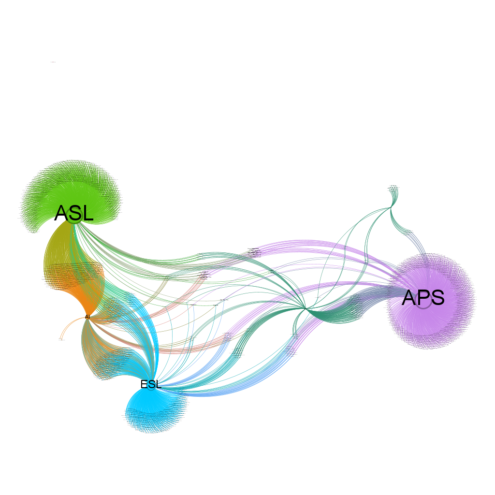4.3 The Quaker Committee on the Aborigines (QCA) 1837 -1846#
Because there are only 30 members of the QCA we can iist all of them here#
The Quaker committee on the Aborigines, was a Quaker Committee of Enquiry. A committee formed by, and exclusively manned by Quakers. It met, performed its enquiries and reported its findings and recommendations to the Quaker Meetings for Sufferings, the standing committee of London Yearly Meeting which was the National Assembly of Quakers in Britain at the time. The committees remit, rules of engagement and characteristics woiuld have been agreed by the national assembly and the committee would no doubt have reported in the manner of Friends. The committee was formed to explore and take up a ‘concern’ amongst Quakers, initially to consider promoting the Gospel amongst the aborigines in 1832 (prompted by similar actions popular at the time among other evangelical churches). But it changed its remit in 1837 to instead take up a philanthropic concern deriving from the group’s increasing awareness through its activities of the plight of aborigines. Therefore, what began as a Quaker Committee of Enquiry to consider promoting the Gospel to Aborigines, soon transformed into the Quaker Committee on the Aborigines, concerned with the plight of the aborigines throughout the colonies, and it’s relief.
qca = pd.read_csv ('vw_4_ceda_membership_quakers_qca2.csv')
qca['birth_year'] = qca ['birth_year'].fillna(0).astype(np.int64)
qca['death_year'] = qca['death_year'].fillna(0).astype(np.int64)
qca.info ()
<class 'pandas.core.frame.DataFrame'>
RangeIndex: 30 entries, 0 to 29
Data columns (total 7 columns):
# Column Non-Null Count Dtype
--- ------ -------------- -----
0 Name 30 non-null object
1 birth_year 30 non-null int64
2 death_year 30 non-null int64
3 religion_name 30 non-null object
4 ceda_name 30 non-null object
5 person_ceda_first_year 30 non-null int64
6 person_ceda_last_year 30 non-null int64
dtypes: int64(4), object(3)
memory usage: 1.8+ KB
qca
| Name | birth_year | death_year | religion_name | ceda_name | person_ceda_first_year | person_ceda_last_year | |
|---|---|---|---|---|---|---|---|
| 0 | Thomas (1) Hodgkin | 1798 | 1866 | Quaker | QCA | 1839 | 1847 |
| 1 | James Bowden | 0 | 0 | Quaker | QCA | 1842 | 1847 |
| 2 | William Nash | 0 | 0 | Quaker | QCA | 1842 | 1847 |
| 3 | Joseph Sturge | 0 | 0 | Quaker | QCA | 1842 | 1847 |
| 4 | William Jun Grimshaw | 0 | 0 | Quaker | QCA | 1840 | 1847 |
| 5 | Henry Knight | 0 | 0 | Quaker | QCA | 1840 | 1847 |
| 6 | Edward Paull | 0 | 0 | Quaker | QCA | 1840 | 1847 |
| 7 | Robert Jun Alsop | 0 | 0 | Quaker | QCA | 1837 | 1847 |
| 8 | Abram Rawlinson Barclay | 0 | 0 | Quaker | QCA | 1837 | 1839 |
| 9 | John Barclay | 0 | 0 | Quaker | QCA | 1837 | 1839 |
| 10 | Richard Barrett | 0 | 0 | Quaker | QCA | 1837 | 1839 |
| 11 | John Thomas Barry | 0 | 0 | Quaker | QCA | 1837 | 1847 |
| 12 | Peter Bedford | 0 | 0 | Quaker | QCA | 1837 | 1847 |
| 13 | John Bell | 0 | 0 | Quaker | QCA | 1837 | 1839 |
| 14 | Thomas Christy | 0 | 0 | Quaker | QCA | 1837 | 1839 |
| 15 | Samuel Darton | 0 | 0 | Quaker | QCA | 1837 | 1839 |
| 16 | Josiah Forster | 0 | 0 | Quaker | QCA | 1837 | 1847 |
| 17 | Robert Forster | 0 | 0 | Quaker | QCA | 1837 | 1847 |
| 18 | William Forster | 0 | 0 | Quaker | QCA | 1837 | 1847 |
| 19 | Joseph Talwin Foster | 0 | 0 | Quaker | QCA | 1837 | 1847 |
| 20 | John Hamilton | 0 | 0 | Quaker | QCA | 1837 | 1839 |
| 21 | Edwd Harris | 0 | 0 | Quaker | QCA | 1837 | 1847 |
| 22 | Geo Holmes | 0 | 0 | Quaker | QCA | 1837 | 1839 |
| 23 | Robert Howard | 0 | 0 | Quaker | QCA | 1837 | 1839 |
| 24 | John Kitching | 0 | 0 | Quaker | QCA | 1837 | 1839 |
| 25 | Joseph Neatby | 0 | 0 | Quaker | QCA | 1837 | 1847 |
| 26 | John Sanderson | 0 | 0 | Quaker | QCA | 1837 | 1847 |
| 27 | Joseph Shewell | 0 | 0 | Quaker | QCA | 1837 | 1839 |
| 28 | George Stacey | 0 | 0 | Quaker | QCA | 1837 | 1847 |
| 29 | Joseph Storrs | 0 | 0 | Quaker | QCA | 1837 | 1847 |
4.4 CQA Joiners each year#
We can plot the number of joiners in each year. New members joined only in the years 1837, 1839, 1840 and 1842. We know that the QCA was established in 1837, so there were only three years when new members joined.
qca.groupby('person_ceda_first_year')['Name'].nunique().plot(kind='bar')
plt.title ("QCA Number of joiners in each year")
plt.ylabel ("No. of joiners")
plt.show()

4.5 CQA Leavers each year#
Because new members group in specific years, we chart the number of leavers in each year. Members left in 1839, 1842 1nd 1847. we know that the QCA was ‘laid down’ (disbanded) in 1847 which leaves only two years when members left the committee.
qca.groupby('person_ceda_last_year')['Name'].nunique().plot(kind='bar')
plt.title ("QCA Number of leavers in each year")
plt.ylabel ("No. of joiners")
plt.show()

We can elsewhere investigate why in 1839, 11 members left and 1 joined (Thomas Hodgkin). 3 more joined in each of 1840 and 1842.
4.6 Duration in the CEDA#
qca[(qca['person_ceda_first_year'] == 1837) & (qca['person_ceda_last_year'] == 1847)]
| Name | birth_year | death_year | religion_name | ceda_name | person_ceda_first_year | person_ceda_last_year | |
|---|---|---|---|---|---|---|---|
| 7 | Robert Jun Alsop | 0 | 0 | Quaker | QCA | 1837 | 1847 |
| 11 | John Thomas Barry | 0 | 0 | Quaker | QCA | 1837 | 1847 |
| 12 | Peter Bedford | 0 | 0 | Quaker | QCA | 1837 | 1847 |
| 16 | Josiah Forster | 0 | 0 | Quaker | QCA | 1837 | 1847 |
| 17 | Robert Forster | 0 | 0 | Quaker | QCA | 1837 | 1847 |
| 18 | William Forster | 0 | 0 | Quaker | QCA | 1837 | 1847 |
| 19 | Joseph Talwin Foster | 0 | 0 | Quaker | QCA | 1837 | 1847 |
| 21 | Edwd Harris | 0 | 0 | Quaker | QCA | 1837 | 1847 |
| 25 | Joseph Neatby | 0 | 0 | Quaker | QCA | 1837 | 1847 |
| 26 | John Sanderson | 0 | 0 | Quaker | QCA | 1837 | 1847 |
| 28 | George Stacey | 0 | 0 | Quaker | QCA | 1837 | 1847 |
| 29 | Joseph Storrs | 0 | 0 | Quaker | QCA | 1837 | 1847 |

12 of the original members were members throughout the life of the committee. 11 of the original members left after the first year. 3 new members in 1840 and 3 new members in 1841.In any year the majority of members were ‘permanent’ members.
4.7 The Aborigines Protection Society (APS) 1837 -1919#
The database contains the names of 1171 members of the APS from its foundation in 1838 to 1871 when it merged with Anti-Slavery International. 571 members (49%) are Quaker.
The Aborigines Protection Society was a secular pressure group that lobbied the Colonial Office and Parliament for the relief of the plight of aborigines throughout the British Settlements. It had a mixed Quaker and non-Quaker executive, membership and subscription lists (it was in large part drawn from the Quaker Committee on the Aborigines), and Quakers dominated the agenda and publishing and lobbying activities of the society for at least the first 30 years of the Society’s life. The Society met, performed its enquiries and reported its findings and recommendations to the Society’s members according to its own constitution (it usually met monthly). The Society’s remit, rules of engagement and characteristics were similar to those of the many other secular lobbying and public opinion forming societies of the time.
aps = pd.read_csv ('vw_4_ceda_membership_dates_aps.csv')
aps['birth_year'] = aps ['birth_year'].fillna(0).astype(np.int64)
aps['death_year'] = aps['death_year'].fillna(0).astype(np.int64)
aps.info ()
<class 'pandas.core.frame.DataFrame'>
RangeIndex: 1170 entries, 0 to 1169
Data columns (total 6 columns):
# Column Non-Null Count Dtype
--- ------ -------------- -----
0 Name 1170 non-null object
1 birth_year 1170 non-null int64
2 death_year 1170 non-null int64
3 Target 1170 non-null object
4 first_year 1170 non-null int64
5 last_year 1170 non-null int64
dtypes: int64(4), object(2)
memory usage: 55.0+ KB
aps
| Name | birth_year | death_year | Target | first_year | last_year | |
|---|---|---|---|---|---|---|
| 0 | William Aldam | 1813 | 1890 | APS | 1838 | 1848 |
| 1 | Samuel C Baker | 1821 | 1893 | APS | 1839 | 1871 |
| 2 | James Bell | 1818 | 1872 | APS | 1847 | 1862 |
| 3 | John Bell (2) | 1811 | 1895 | APS | 1838 | 1855 |
| 4 | John Brown | 1801 | 1879 | APS | 1839 | 1839 |
| ... | ... | ... | ... | ... | ... | ... |
| 1165 | x Wright | 0 | 0 | APS | 1839 | 1850 |
| 1166 | W Wrigley | 0 | 0 | APS | 1861 | 1862 |
| 1167 | James Yates | 0 | 0 | APS | 1853 | 1856 |
| 1168 | John Young | 0 | 0 | APS | 1840 | 1840 |
| 1169 | Thomas Zachary | 0 | 0 | APS | 1840 | 1867 |
1170 rows × 6 columns
4.8 APS joiners in each year#
aps.groupby('first_year')['Name'].nunique().plot(kind='bar')
plt.title ("APS Number of joiners in each year")
plt.ylabel ("No. of joiners")
plt.show()
4.9 APS leavers in each year#
aps.groupby('last_year')['Name'].nunique().plot(kind='bar')
plt.title ("APS Number of leavers in each year")
plt.ylabel ("No. of leavers")
plt.show()
quakers_aps = pd.read_csv ('vw_4_ceda_membership_quakers_aps2.csv')
# quakers_aps = aps.loc[aps ['religion_name'] == 'Quaker',:]
quakers_aps
| Name | birth_year | death_year | religion_name | ceda_name | person_ceda_first_year | person_ceda_last_year | |
|---|---|---|---|---|---|---|---|
| 0 | William Spicer Wood | NaN | 1902.0 | Quaker | APS | 1864 | 1867 |
| 1 | William Wilson | 1785.0 | 1868.0 | Quaker | APS | 1838 | 1865 |
| 2 | James Wilson | NaN | NaN | Quaker | APS | 1862 | 1867 |
| 3 | E T Wakefield | NaN | NaN | Quaker | APS | 1853 | 1864 |
| 4 | John Ross | NaN | NaN | Quaker | APS | 1839 | 1852 |
| ... | ... | ... | ... | ... | ... | ... | ... |
| 571 | Joshua Wilson | NaN | NaN | Quaker | APS | 1860 | 1860 |
| 572 | F Woodhead | NaN | NaN | Quaker | APS | 1861 | 1862 |
| 573 | W Woolston | NaN | NaN | Quaker | APS | 1861 | 1861 |
| 574 | Francis Wright | NaN | NaN | Quaker | APS | 1838 | 1838 |
| 575 | S W Wright | NaN | NaN | Quaker | APS | 1861 | 1861 |
576 rows × 7 columns
4.10 Quakers joining the APS in each year#
quakers_aps.groupby('person_ceda_first_year')['Name'].nunique().plot(kind='bar')
plt.title ("Number of Quaker APS joiners in each year")
plt.ylabel ("No. of Quakers")
plt.show()
4.11 Quakers leaving the APS in each year#
quakers_aps.groupby('person_ceda_last_year')['Name'].nunique().plot(kind='bar')
plt.title ("Number of Quaker APS leavers in each year")
plt.ylabel ("No. of Quakers")
plt.show()

4.12 The Ethnological Society of London (ESL) 1843 - 1871#
The Ethnological Society of London was the first intentionally academic society devoted to the discipline of anthropology in Britain. Secular by intent but if not always entirely so in its early years, it sought to be a place where those with a scientific interest in the field of ethnology could commune, share ideas and knowledge, and produce academic reports and hold academic meetings. It met, performed its enquiries and reported its findings and recommendations to the Society’s members according to its own constitution (it usually met monthly). The Society’s remit, rules of engagement and characteristics were those of the many other scientific societies emerging at the time, its constitution being purposely compliant with BAAS requirements.
esl = pd.read_csv ('vw_4_ceda_membership_dates_esl.csv')
# code not needed for this set because in this datframe birth_year and death_year show as 'object' and not 'float'
#esl['birth_year'] = esl ['birth_year'].fillna(0).astype(np.int64)
#esl['death_year'] = esl['death_year'].fillna(0).astype(np.int64)
# esl['religion_name'] = esl['religion_name'].fillna(0).astype(np.int64)
esl.info ()
<class 'pandas.core.frame.DataFrame'>
RangeIndex: 748 entries, 0 to 747
Data columns (total 6 columns):
# Column Non-Null Count Dtype
--- ------ -------------- -----
0 Name 748 non-null object
1 birth_year 436 non-null object
2 death_year 466 non-null object
3 Target 748 non-null object
4 first_year 748 non-null int64
5 last_year 748 non-null int64
dtypes: int64(2), object(4)
memory usage: 35.2+ KB
esl
| Name | birth_year | death_year | Target | first_year | last_year | |
|---|---|---|---|---|---|---|
| 0 | William Adam | NaN | NaN | ESL | 1844 | 1844 |
| 1 | William (1) Adams | NaN | NaN | ESL | 1844 | 1844 |
| 2 | William (2) Adams | 1,820 | 1,900 | ESL | 1858 | 1871 |
| 3 | Louis Agassiz | 1,807 | 1,873 | ESL | 1860 | 1871 |
| 4 | Augustine Aglio | 1,777 | 1,857 | ESL | 1843 | 1845 |
| ... | ... | ... | ... | ... | ... | ... |
| 743 | James Wyld | 1,812 | 1,887 | ESL | 1844 | 1854 |
| 744 | Ashton Yates | 1,781 | 1,863 | ESL | 1860 | 1862 |
| 745 | W Holt Yates | 1,802 | 1,874 | ESL | 1844 | 1846 |
| 746 | James Yearsley | 1,805 | 1,869 | ESL | 1845 | 1845 |
| 747 | Arthur de Zeltner | NaN | NaN | ESL | 1865 | 1871 |
748 rows × 6 columns
quakers_esl = pd.read_csv ('vw_4_ceda_membership_quakers_esl2.csv')
quakers_esl
| Name | birth_year | death_year | religion_name | ceda_name | person_ceda_first_year | person_ceda_last_year | |
|---|---|---|---|---|---|---|---|
| 0 | William Horton Lloyd | NaN | NaN | Quaker | ESL | 1844 | 1847 |
| 1 | Joseph Lister | 1827.0 | 1912.0 | Quaker | ESL | 1844 | 1847 |
| 2 | Thomas (1) Hodgkin | 1798.0 | 1866.0 | Quaker | ESL | 1844 | 1862 |
| 3 | John Henry Gurney | 1819.0 | 1890.0 | Quaker | ESL | 1860 | 1867 |
| 4 | Charles Henry Fox | NaN | NaN | Quaker | ESL | 1861 | 1871 |
| 5 | William Fowler | NaN | NaN | Quaker | ESL | 1851 | 1851 |
| 6 | Robert Nicholas Fowler | 1828.0 | 1891.0 | Quaker | ESL | 1851 | 1871 |
| 7 | David Dale | 1829.0 | 1906.0 | Quaker | ESL | 1860 | 1863 |
| 8 | x Collier | NaN | NaN | Quaker | ESL | 1844 | 1844 |
| 9 | William Clay | 1791.0 | 1869.0 | Quaker | ESL | 1861 | 1868 |
| 10 | Henry Christy | 1810.0 | 1865.0 | Quaker | ESL | 1854 | 1865 |
| 11 | James Bell | 1818.0 | 1872.0 | Quaker | ESL | 1852 | 1862 |
| 12 | James (1) Backhouse | 1794.0 | 1869.0 | Quaker | ESL | 1869 | 1869 |
| 13 | Edward Backhouse | 1808.0 | 1879.0 | Quaker | ESL | 1870 | 1871 |
| 14 | William Aldam | 1813.0 | 1890.0 | Quaker | ESL | 1844 | 1848 |
4.13 ESL joiners in each year#
esl.groupby('first_year')['Name'].nunique().plot(kind='bar')
plt.title ("Number of ESL joiners in each year")
plt.ylabel ("No. of joiners")
plt.show()

4.14 ESL leavers in each year#
esl.groupby('last_year')['Name'].nunique().plot(kind='bar')
plt.title ("Number of ESL leavers in each year")
plt.ylabel ("No. of joiners")
plt.show()

4.15 ESL Quaker joiners in each year#
quakers_esl.groupby('person_ceda_first_year')['Name'].nunique().plot(kind='bar')
plt.title ("Number of Quaker ESL joiners in each year")
plt.ylabel ("No. of Quakers")
plt.show()
4.16 ESL Quaker leavers in each year#
quakers_esl.groupby('person_ceda_last_year')['Name'].nunique().plot(kind='bar')
plt.title ("Number of Quaker ESL leavers in each year")
plt.ylabel ("No. of Quakers")
plt.show()

4.17 The Anthropological Society of London (ASL) 1863 - 1871#
asl = pd.read_csv ('vw_4_ceda_membership_dates_asl.csv')
asl['birth_year'] = asl ['birth_year'].fillna(0).astype(np.int64)
asl['death_year'] = asl['death_year'].fillna(0).astype(np.int64)
asl.info ()
<class 'pandas.core.frame.DataFrame'>
RangeIndex: 1334 entries, 0 to 1333
Data columns (total 6 columns):
# Column Non-Null Count Dtype
--- ------ -------------- -----
0 Name 1334 non-null object
1 birth_year 1334 non-null int64
2 death_year 1334 non-null int64
3 Target 1334 non-null object
4 first_year 1334 non-null int64
5 last_year 1334 non-null int64
dtypes: int64(4), object(2)
memory usage: 62.7+ KB
asl
| Name | birth_year | death_year | Target | first_year | last_year | |
|---|---|---|---|---|---|---|
| 0 | Arthur William A Beckett | 1844 | 1909 | ASL | 1864 | 1867 |
| 1 | Andrew Mercer Adam | 0 | 0 | ASL | 1865 | 1867 |
| 2 | H R Adam | 0 | 0 | ASL | 1870 | 1871 |
| 3 | Henry John Adams | 0 | 0 | ASL | 1864 | 1869 |
| 4 | William Adlam | 0 | 0 | ASL | 1863 | 1866 |
| ... | ... | ... | ... | ... | ... | ... |
| 1329 | Stephen Yeldham | 1810 | 1896 | ASL | 1866 | 1869 |
| 1330 | James A Youl | 1811 | 1904 | ASL | 1864 | 1865 |
| 1331 | Robert Younge | 1801 | 1874 | ASL | 1865 | 1871 |
| 1332 | Arthur de Zeltner | 0 | 0 | ASL | 1866 | 1871 |
| 1333 | x Zohrab | 0 | 0 | ASL | 1867 | 1871 |
1334 rows × 6 columns
quakers_asl = pd.read_csv ('vw_4_ceda_membership_quakers_asl2.csv')
4.18 ASL joiners in each year#
asl.groupby('first_year')['Name'].nunique().plot(kind='bar')
plt.title ("Number of ASL joiners in each year")
plt.ylabel ("No. of joiners")
plt.show()
4.19 ASL leavers in each year#
asl.groupby('last_year')['Name'].nunique().plot(kind='bar')
plt.title ("Number of ASL leavers in each year")
plt.ylabel ("No. of joiners")
plt.show()

4.20 ASL Quaker joiners in each year#
quakers_asl.groupby('person_ceda_first_year')['Name'].nunique().plot(kind='bar')
plt.title ("Number of Quaker ASL joiners in each year")
plt.ylabel ("No. of Quakers")
plt.show()
4.21 ASL Quaker leavers in each year#
quakers_asl.groupby('person_ceda_last_year')['Name'].nunique().plot(kind='bar')
plt.title ("Number of Quaker ASL leavers in each year")
plt.ylabel ("No. of Quakers")
plt.show()
quakers_asl = pd.read_csv ('vw_4_ceda_membership_quakers_asl2.csv')
quakers_asl
| Name | birth_year | death_year | religion_name | ceda_name | person_ceda_first_year | person_ceda_last_year | |
|---|---|---|---|---|---|---|---|
| 0 | William Spicer Wood | NaN | 1902.0 | Quaker | ASL | 1863 | 1871 |
| 1 | William Wilson | 1785.0 | 1868.0 | Quaker | ASL | 1865 | 1866 |
| 2 | James Wilson | NaN | NaN | Quaker | ASL | 1865 | 1865 |
| 3 | E T Wakefield | NaN | NaN | Quaker | ASL | 1865 | 1868 |
| 4 | J Robinson | NaN | NaN | Quaker | ASL | 1865 | 1865 |
| 5 | Jonathan Hutchinson | 1828.0 | 1913.0 | Quaker | ASL | 1863 | 1871 |
| 6 | William Holmes | NaN | NaN | Quaker | ASL | 1865 | 1869 |
| 7 | George Stacey Gibson | 1818.0 | 1883.0 | Quaker | ASL | 1864 | 1866 |
| 8 | James T J Doyle | NaN | NaN | Quaker | ASL | 1865 | 1868 |
| 9 | Henry Crowley | NaN | 1887.0 | Quaker | ASL | 1864 | 1871 |
| 10 | Charles Buxton | 1823.0 | 1871.0 | Quaker | ASL | 1864 | 1866 |
| 11 | William Bull | 1828.0 | 1902.0 | Quaker | ASL | 1867 | 1871 |
| 12 | Antonio Brady | 1811.0 | 1881.0 | Quaker | ASL | 1864 | 1871 |
| 13 | S Stafford Allen | 1840.0 | 1870.0 | Quaker | ASL | 1863 | 1870 |
4.22 Anthropological Institute (AI) 1843 - 1871#
ai = pd.read_csv ('vw_4_ceda_membership_dates_ai.csv')
# code not needed for this set because in this datframe birth_year and death_year show as 'object' and not 'float'
#ai['birth_year'] = ai ['birth_year'].fillna(0).astype(np.int64)
#ai['death_year'] = ai['death_year'].fillna(0).astype(np.int64)
ai.info ()
<class 'pandas.core.frame.DataFrame'>
RangeIndex: 610 entries, 0 to 609
Data columns (total 6 columns):
# Column Non-Null Count Dtype
--- ------ -------------- -----
0 Name 610 non-null object
1 birth_year 399 non-null object
2 death_year 436 non-null object
3 Target 610 non-null object
4 first_year 610 non-null int64
5 last_year 610 non-null int64
dtypes: int64(2), object(4)
memory usage: 28.7+ KB
ai
| Name | birth_year | death_year | Target | first_year | last_year | |
|---|---|---|---|---|---|---|
| 0 | H R Adam | NaN | NaN | AI | 1870 | 1871 |
| 1 | William (2) Adams | 1,820 | 1,900 | AI | 1858 | 1871 |
| 2 | Louis Agassiz | 1,807 | 1,873 | AI | 1860 | 1871 |
| 3 | Alexander Muirhead Aitken | NaN | NaN | AI | 1864 | 1871 |
| 4 | William Amhurst Tyssen Amhurst | 1,835 | 1,909 | AI | 1862 | 1871 |
| ... | ... | ... | ... | ... | ... | ... |
| 605 | Robert Carr Woods | 1,816 | 1,875 | AI | 1863 | 1871 |
| 606 | Francis Beresford Wright | 1,837 | 1,911 | AI | 1870 | 1871 |
| 607 | Thomas Wright | 1,810 | 1,877 | AI | 1853 | 1871 |
| 608 | Robert Younge | 1,801 | 1,874 | AI | 1865 | 1871 |
| 609 | Arthur de Zeltner | NaN | NaN | AI | 1865 | 1871 |
610 rows × 6 columns
quakers_ai = pd.read_csv ('vw_4_ceda_membership_quakers_ai2.csv')
quakers_ai
| Name | birth_year | death_year | religion_name | ceda_name | person_ceda_first_year | person_ceda_last_year | |
|---|---|---|---|---|---|---|---|
| 0 | William Spicer Wood | NaN | 1902.0 | Quaker | AI | 1863 | 1871 |
| 1 | Jonathan Hutchinson | 1828.0 | 1913.0 | Quaker | AI | 1863 | 1871 |
| 2 | Charles Henry Fox | NaN | NaN | Quaker | AI | 1861 | 1871 |
| 3 | Robert Nicholas Fowler | 1828.0 | 1891.0 | Quaker | AI | 1851 | 1871 |
| 4 | Henry Crowley | NaN | 1887.0 | Quaker | AI | 1864 | 1871 |
| 5 | William Bull | 1828.0 | 1902.0 | Quaker | AI | 1867 | 1871 |
| 6 | Antonio Brady | 1811.0 | 1881.0 | Quaker | AI | 1864 | 1871 |
| 7 | Edward Backhouse | 1808.0 | 1879.0 | Quaker | AI | 1870 | 1871 |
4.23 AI joiners in each year#
ai.groupby('first_year')['Name'].nunique().plot(kind='bar')
plt.title ("Number of AI joiners in each year")
plt.ylabel ("No. of joiners")
plt.show()
4.24 AI leavers in each year#
ai.groupby('last_year')['Name'].nunique().plot(kind='bar')
plt.title ("Number of AI leavers in each year")
plt.ylabel ("No. of joiners")
plt.show()

4.25 AI Quaker joiners in each year#
quakers_ai.groupby('person_ceda_first_year')['Name'].nunique().plot(kind='bar')
plt.title ("Number of Quaker AI joiners in each year")
plt.ylabel ("No. of Quakers")
plt.show()
4.26 AI Quaker leavers in each year#
quakers_ai.groupby('person_ceda_last_year')['Name'].nunique().plot(kind='bar')
plt.title ("Number of Quaker AI leavers in each year")
plt.ylabel ("No. of Quakers")
plt.show()

4.27 Duration of AI Quaker memberships#
4.28 generate gexf output file of all CEDA data for Gephi#
with open('vw_1_person_with_quakers2.csv', 'r') as nodecsv: # Open the Nodes csv file
nodereader = csv.reader(nodecsv) # Read the csv
nodes = [n for n in nodereader][1:]# Retrieve the data (using Python list comprhension and list slicing
# to remove the header row
node_names = [n[0] for n in nodes] # Get a list of only the node names
with open('vw_hddt_ceda_tuples_attributes2.csv', 'r') as edgecsv: # Open the file
edgereader = csv.reader(edgecsv) # Read the csv
edge_list = list(edgereader) # Convert to list, so can iterate below in for loop
# Create empty arrays to store edge data and edge attribute data
edges = []
edges_attributes = []
# Fill the arrays with data from CSV
for e in edge_list[1:]:
edges.append(tuple(e[0:2])) # Get the first 2 columns (source, target) and add to array
edges_attributes.append(tuple(e[2:4])) # Get the 3rd and 4th columns (first_year, last_year) and add to array
edge_names = [e[0] for e in edges] # Get a list of only the edge names
print("Nodes length: ", len(node_names))
print("Edges length: ", len(edges))
print("Edges attributes length: ", len(edges_attributes)) # This should be the same length as edges
Nodes length: 3094
Edges length: 4046
Edges attributes length: 4046
print("First 5 nodes:", node_names[0:5])
print("First 5 edges:", edges[0:5])
print("First 5 edges attributes:", edges_attributes[0:5])
# The output will appear below this code cell.
First 5 nodes: ['Arthur William A Beckett', 'Andrew Mercer Adam', 'H R Adam', 'William Adam', 'Henry John Adams']
First 5 edges: [('William Adam', 'ESL'), ('William (1) Adams', 'ESL'), ('William (2) Adams', 'ESL'), ('Louis Agassiz', 'ESL'), ('Augustine Aglio', 'ESL')]
First 5 edges attributes: [('1844', '1844'), ('1844', '1844'), ('1858', '1871'), ('1860', '1871'), ('1843', '1845')]
G = nx.Graph()
G.add_nodes_from(node_names)
G.add_edges_from(edges)
print(nx.info(G))
Name:
Type: Graph
Number of nodes: 3100
Number of edges: 4021
Average degree: 2.5942
# Nodes
birth_year_dict = {}
death_year_dict = {}
religion_id_dict = {}
# Edges
first_year_dict = {}
last_year_dict = {}
for node in nodes: # Loop through the list, one row at a time
birth_year_dict [node[0]] = node[1]
death_year_dict [node[0]] = node[2]
religion_id_dict[node[0]] = node[3]
for i, edge in enumerate(edges): # Loop through the list, one row at a time
first_year_dict [(edge[0], edge[1])] = edges_attributes[i][0]
last_year_dict [(edge[0], edge[1])] = edges_attributes[i][1]
# print(religion_id_dict)# list Source, target and first_year (all records). This shows the data that will be exported to Gephi.
# print(len(religion_id_dict))# At the end of the file print a count of all first_year check 3946)
# print (religion_id_dict)
# Nodes
nx.set_node_attributes(G, birth_year_dict, 'birth_year')
nx.set_node_attributes(G, death_year_dict, 'death_year')
nx.set_node_attributes(G, religion_id_dict, 'religion_id')
# Edges
nx.set_edge_attributes(G, first_year_dict, 'first_year')
nx.set_edge_attributes(G, last_year_dict, 'last_year')
#for n in G.nodes(): # Loop through every node, in our data "n" will be the name of the person
#print(n, G.nodes[n]['birth_year']) # Access every node by its name, and then by the attribute "birth_year"
nx.write_gexf(G, 'ceda_all_data_dyn_edges.gexf')
P7 Chapter 5a Thomas Hodgkin MD’s networks - Part one#
Chapter 6 Section 6.22#
file_name: jnb_hddt_laidlaw
5.1 Protecting the Empire’s Humanity: Thomas Hodgkin and British Colonial Activism 1830 - 1870 (Zoë Laidlaw 2021)#
This ‘HDDT - JNB’ exercise analyses the persons listed in the index to Protecting the Empire’s Humanity (Laidlaw 2021), (PEH), and correspondence received by and correspondence sent to Thomas Hodgkin MD 1799 - 1861, in the indexes to the Wellcome Inst., Hodgkin Family Archives. Selected persons from both archives are then compared with the CEDA database persons. The relationship between the three datasets is then examined to determine the extent to which the networks overlap or fit together; if a Hodgkin political activist network, then emerges, how central is that network to the activism of the wider CEDA network and do insights emerge that might indicate who the key influencers in the network might be?
5.2 GitHub#
Make a private GitHub repository for the exercise and clone it to the University of Birmingham secure server space allocated for this project. KelvinBeerJones/jnb_hddt_laidlaw cloned to: http://localhost:8888/tree/OneDrive -20University of Birmingham/HDDT/jnb_project_containers/jnb_hddt_laidlaw
5.3 Call up the python packages needed to perform the analysis#
Pandas, numpy and pyplotlib, which we will use to create tables and charts in the Workbook.
Plot.rc to specify the dimensions for all imported images (this keeps images to a uniform size and shape).
Itemgetter, NetworkX and nbconvert to create a Gexf file for Gephi, which is used to generate visualisation graph files and to enable visual analysis of the social networks to take place.
A csv reader to extract the selected sqlite database data from the curated views.
import pandas as pd
import numpy as np
import matplotlib.pyplot as plt
plt.rc('figure', figsize=(20, 10))
from IPython.display import set_matplotlib_formats
set_matplotlib_formats('png', 'pdf')
from operator import itemgetter
import networkx as nx
from networkx.algorithms import community
#This part of networkx,
# for community detection, needs to be imported separately.
import nbconvert
import csv
# <img src="xxxx.png">
---------------------------------------------------------------------------
ModuleNotFoundError Traceback (most recent call last)
Cell In[1], line 3
1 import pandas as pd
2 import numpy as np
----> 3 import matplotlib.pyplot as plt
4 plt.rc('figure', figsize=(20, 10))
5 from IPython.display import set_matplotlib_formats
ModuleNotFoundError: No module named 'matplotlib'
5.4 Call up the csv files from the SQL db and prepare data for Gephi#
# produce a 'names' file of nodes and a 'tuples' file of edges_attributes
# to generate the files need to produce GefX files for Gephi.
person_names = pd.read_csv ('vw_hddt_person_table.csv')
person_data_source = pd.read_csv ('vw_hddt_person_with_data_source.csv')
# Use these csv files in the 'with open' statements below
# to generate locations.gexf
names = pd.read_csv ('vw_hddt_person_name.csv')# For nodes csv
tuples = pd.read_csv ('vw_hddt_ceda_tuples.csv')# For edges.csv
with open('vw_hddt_person_name.csv', 'r') as nodecsv:
# Open the Nodes csv file
nodereader = csv.reader(nodecsv)
# Read the csv
nodes = [n for n in nodereader][1:]
# Retrieve the data (using Python list comprhension and list slicing
# to remove the header row
node_names = [n[0] for n in nodes]
# Get a list of only the node names
with open('vw_hddt_ceda_tuples.csv', 'r') as edgecsv:
# Open the file
edgereader = csv.reader(edgecsv)
# Read the csv
edge_list = list(edgereader)
# Convert to list, so can iterate below in for loop
# Create empty arrays to store edge data and edge attribute data
edges = []
edges_attributes = []
# Fill the arrays with data from CSV
for e in edge_list[1:]:
edges.append(tuple(e[0:2]))
# Get the first 2 columns (source, target) and add to array
# not used this time. edges_attributes.append(tuple(e[2:4]))
# Get the 3rd and 4th columns (first_year, last_year) and add to array
edge_names = [e[0] for e in edges] # Get a list of only the edge names
5.5 Introduction to the exercise - Part One#
Laidlaw in the introduction to PEH sets out the importance of the social networks of Dr Thomas Hodgkin MD, “The roots of this book lie in the personal correspondence of the Quaker, scientist, and activist, Dr Thomas Hodgkin”, and “The exploration of Britain’s imperial history presented in this book is profoundly shaped by Thomas Hodgkin’s personal papers, today housed in the Wellcome library in London, and what they reveal of his philanthropic, medical, and scientific interests and networks. The volume and the breadth of that archive has allowed me to trace and assess a wide array of influences on “imperial humanitarianism” (2021, 3). Laidlaw also says that, Hodgkin’s personal archive at the Wellcome Institute constitutes The “backbone” of the book and that “Its study reveals 50 years’ worth of unlikely connections, sustained relationships, and closely argued, if sometimes contradictory, cases” (2021, 7).
Chapter 5 of the thesis argues that by only describing them in narratives it is difficult to ‘see’ the people who formed the extensive social networks in which Thomas Hodgkin MD operated, how many there were and how they relate to each other. And so, PEH, while discussing at length the efforts of Hodgkin’s social networks to relieve the plight of aborigines throughout the British Empire, does not make those networks visible or make them available to scrutiny. This Historical Data Analysis (HDA) fully addresses those two needs and presents new insights about Hodgkin’s networks that are difficult to achieve without an HDDT.
5.6 The 3094 members of the CEDA before the exercise#
Before the Laidlaw exercise is performed, we can see in the Gephi graph the CEDA network using the Force Atlas algorithm. Far left and at the bottom we can see the QCA and those members of the QCA who led in the formation of the APS (which appears in purple). Two members of the QCA who join the APS also join with non QCA members of the APS in joining the ESL in 1843. These two are William Allen (who would die that year) and Thomas Hodgkin MD. In connecting up the QCA, the APS and the ESL these two stand out from the other members of the QCA, (half of whom go on to join the APS) but participate no further in network building. There is no discernible network centered on Hodgkin alone. Thomas Hodgkin’s personal network does not appear as a group node. The memberships of the ESL, the Anthropological Society of London (ASL) and Anthropological Institute (AI) are frequently shared. The ESL splits into two groups each of roughly equal size, those who are members of only the ESL and those members of the ESL who also share membership with the AI and ASL. The ASL (formed last in 1863) draws its membership from both the ESL and the AI. It is the ASL that will provide the bulk of the first memberships of the RAI. We can see ‘ringed’ the small groups of key influencers who network between the CEDA groups.
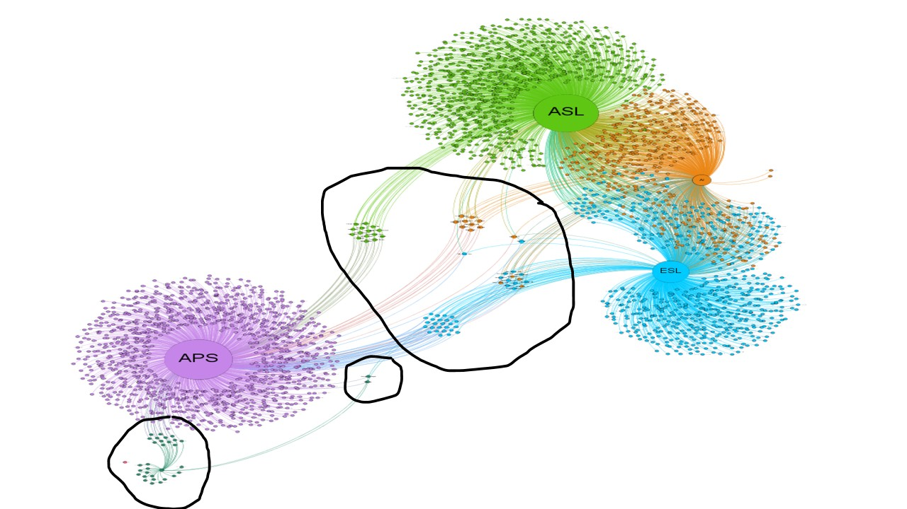Society |
abv. |
Dates |
Colour |
|---|---|---|---|
Quaker Committee on the Aborigines* |
QCA |
1832/37 - 1846 |
Dark green |
Aborigines Protection Society |
APS |
1837 - 1919 |
Purple |
Ethnological Society of London |
ESL |
1843 - 1871 |
Blue |
Anthropological Institute |
AI |
1843 - 1871 |
Orange |
Anthropological Society of London |
ASL |
1863 - 1871 |
Green |
5.7 Mods to db to facilitate this exercise - ZOE and WEL#
(1) Persons in the index to PEH, and the members of the CEDA#
All the person names were extracted from the PEH index (Laidlaw 2021, 359). Of the 290 person names in the index 108 were found to be already present in the HTTD CEDA dataset. The remaining 182 do not appear in the HDDT CEDA dataset, some of those indexed in PEH will not be members of Hodgkin’s support network, but rather persons that Laidlaw has referenced in PEH for other reasons (for example King William IV, Queen Victoria, and many colonial officers of the Crown).
all persons PEH |
PEH persons CEDA |
PEH persons not CEDA |
|---|---|---|
290 |
108 |
182 |
Note: At least 15 persons amongst the 182 non CEDA persons appearing in the index to PEH could be family members of persons already captured in the HDDT - from the awareness of the author of this thesis. Nonetheless the intention here is to discover how the 108 who are recorded in the HDDT database relate both to each other and the wider group of 3000 already in the HDDT, and to disregard the 182 who are not.
(2) Persons in the indexes to WEL, and the members of the CEDA#
Because PEH relies heavily on the Hodgkin Family Archive at the Wellcome Institute an analysis of the two indexes to that collection was performed to extract from the index of letters sent and the index of letters received by Thomas Hodgkin MD those persons who appeared in both indexes indicating the these persons might have been members of Hodgkin’s network.
In the Wellcome Hodgkin Family archive data indexes there are 107 person Hodgkin writes to and who also write to him, and of these 46 appear in the HDDT database and 61 do not. As in the PEH index exercise above we can reasonably assume both that some of these persons not already in the HDDT may be related to members of persons appearing in the HDDT database; and also, that many will not, for example we can expect to find many medical related correspondences in an archive collected by a medical history archive, and these are outside the scope of this thesis (which analyses political activism).
all persons WEL |
WEL persons CEDA |
WEL persons not CEDA |
|---|---|---|
107 |
46 |
61 |
(3) Summary of db mods#
Using the platform DBeaver (https://dbeaver.io/) the HDDT CEDA database was modified to accommodate the exercise:
We added to person_data_source table two new temporary data sources – ZOE and WEL
We added to ceda table two new CEDA groups – ZOE and WEL
Person_table. We uploaded 182 new records from a csv file of Laidlaw references, and allocated them to data_source = ZOE.
Person_table. We uploaded 61 new records from a csv file of Laidlaw references, and allocated them to data_source = WEL.
We updated m2m_person_ceda table to allocate 108 persons to a new CEDA group = ZOE
We updated m2m_person_ceda table to allocate 46 persons to a new CEDA group = WEL
Once the data from both ZOE and WEL had been added to the HDDT database the network analysis could be performed and a report in the form of a Jupyter Notebook made.
5.8 Assess persons in the index to PEH who are members of the CEDA.#
The Index to PEH lists 108 persons who already present in the HDDT CEDA db. They were laidlaw allocated to a ‘dummy’ CEDA group (table CEDA, Target = ‘ZOE’). This enables the visualisation of Laidlaw’s Hodgkin network and shows its relationships to the original HDDT CEDA groups.
The indexes to WEL list 46 persons who are already present in the HDDT CEDA db. They were allocated to a ‘dummy’ CEDA group (table CEDA, Target = ‘WEL’). This enables the visualisation of The Wellcome Inst., Hodgkin Family Archive Thomas Hodgkin MD network and shows its relationships to the original HDDT CEDA groups.
The 3337 persons in the CEDA db., make up 3892 memberships of the original CEDA (QCA, APS, ESL, AI, and the APS) The above ‘new’ CEDA were set up in the SQL db., to facilitate this exercise.
Original CEDA |
ZOE |
WEL |
Total new |
|---|---|---|---|
3892 |
108 |
46 |
4046 |
5.9 CEDA members compared to non-CEDA others in PEH index#
person_names.groupby('data_source_id')['Name'].nunique().plot(kind='pie')
plt.title ("Persons_by_data_source")
plt.xlabel ("data_source_id")
plt.ylabel ("Number of persons")
plt.show()
data_source_id |
Source |
|---|---|
1 |
RAI |
2 |
QCA |
3 |
APS |
4 |
WEL |
5 |
ZOE |
The persons from PEH Index and the Welcome Inst., indexes who are not members of a CEDA appear here. They are disregarded in this exercise because they do not indicate the presence of a social network. They are shown here only for completeness.
Add 182 ‘ZOE’ and 61 ‘WEL’ Non CEDA persons to the SQL db., ‘temporarily’ solely to visualise the extent of persons not included in this exercise.#
5.10 Data verification#
In each of Code cells 4 - 11 We call up the tables we have obtained from the db to view the data. We can confirm (e.g., Code cell 4) that we have selected the correct table or view from the db., and we check that the first 5 and last 5 records have been rendered correctly. We can confirm (e.g. Code cell 5) that the respective table dataframe is formatted as expected. We also check that the number of records equals the number of rows on the data source csv.
Code cell 4#
person_names
| Name | title | gender_id | birth_year | death_year | data_source_id | |
|---|---|---|---|---|---|---|
| 0 | Arthur William A Beckett | NaN | 1.0 | 1844.0 | 1909.0 | 1 |
| 1 | Andrew Mercer Adam | NaN | 1.0 | NaN | NaN | 1 |
| 2 | H R Adam | NaN | 1.0 | NaN | NaN | 1 |
| 3 | William Adam | NaN | 1.0 | NaN | NaN | 1 |
| 4 | Henry John Adams | NaN | 1.0 | NaN | NaN | 1 |
| ... | ... | ... | ... | ... | ... | ... |
| 3332 | James Wetherall | NaN | NaN | NaN | NaN | 5 |
| 3333 | William Wilberforce | NaN | NaN | NaN | NaN | 5 |
| 3334 | King William IV | NaN | NaN | NaN | NaN | 5 |
| 3335 | x Wiremu Kingi Te rangitake | NaN | NaN | NaN | NaN | 5 |
| 3336 | Johann Wohlers | NaN | NaN | NaN | NaN | 5 |
3337 rows × 6 columns
Code cell 5#
person_names.info()
<class 'pandas.core.frame.DataFrame'>
RangeIndex: 3337 entries, 0 to 3336
Data columns (total 6 columns):
# Column Non-Null Count Dtype
--- ------ -------------- -----
0 Name 3337 non-null object
1 title 776 non-null object
2 gender_id 1988 non-null float64
3 birth_year 1003 non-null float64
4 death_year 1069 non-null float64
5 data_source_id 3337 non-null int64
dtypes: float64(3), int64(1), object(2)
memory usage: 156.5+ KB
Code cell 6#
person_data_source
| Name | data_source | |
|---|---|---|
| 0 | Arthur William A Beckett | RAI |
| 1 | Andrew Mercer Adam | RAI |
| 2 | H R Adam | RAI |
| 3 | William Adam | RAI |
| 4 | Henry John Adams | RAI |
| ... | ... | ... |
| 3332 | James Wetherall | ZOE |
| 3333 | William Wilberforce | ZOE |
| 3334 | King William IV | ZOE |
| 3335 | x Wiremu Kingi Te rangitake | ZOE |
| 3336 | Johann Wohlers | ZOE |
3337 rows × 2 columns
Code cell 7#
person_data_source.info()
<class 'pandas.core.frame.DataFrame'>
RangeIndex: 3337 entries, 0 to 3336
Data columns (total 2 columns):
# Column Non-Null Count Dtype
--- ------ -------------- -----
0 Name 3337 non-null object
1 data_source 3337 non-null object
dtypes: object(2)
memory usage: 52.3+ KB
Code cell 8#
names
| Name | |
|---|---|
| 0 | Arthur William A Beckett |
| 1 | Andrew Mercer Adam |
| 2 | H R Adam |
| 3 | William Adam |
| 4 | Henry John Adams |
| ... | ... |
| 3332 | James Wetherall |
| 3333 | William Wilberforce |
| 3334 | King William IV |
| 3335 | x Wiremu Kingi Te rangitake |
| 3336 | Johann Wohlers |
3337 rows × 1 columns
Code cell 9#
names.info()
<class 'pandas.core.frame.DataFrame'>
RangeIndex: 3337 entries, 0 to 3336
Data columns (total 1 columns):
# Column Non-Null Count Dtype
--- ------ -------------- -----
0 Name 3337 non-null object
dtypes: object(1)
memory usage: 26.2+ KB
Code cell 10#
tuples
| Source | Target | |
|---|---|---|
| 0 | William Adam | ESL |
| 1 | William (1) Adams | ESL |
| 2 | William (2) Adams | ESL |
| 3 | Louis Agassiz | ESL |
| 4 | Augustine Aglio | ESL |
| ... | ... | ... |
| 4041 | Frederick Cooper | WEL |
| 4042 | Henry Christy | WEL |
| 4043 | James (1) Backhouse | WEL |
| 4044 | William (Capt.) Allen | WEL |
| 4045 | William (1) Adams | WEL |
4046 rows × 2 columns
Code cell 11#
tuples.info()
<class 'pandas.core.frame.DataFrame'>
RangeIndex: 4046 entries, 0 to 4045
Data columns (total 2 columns):
# Column Non-Null Count Dtype
--- ------ -------------- -----
0 Source 4046 non-null object
1 Target 4046 non-null object
dtypes: object(2)
memory usage: 63.3+ KB
5.11 Generate gexf file for Gephi visualisation#
Code cell 12 - 13 Check that Gephi ‘Nodes’ and ‘Edges’ files agree with ‘names’ and ‘tuples’ files#
Code cell 12#
print("Nodes length: ", len(node_names))
print("Edges length: ", len(edges))
Nodes length: 3337
Edges length: 4046
Code cell 13#
print("First 5 nodes:", node_names[0:5])
print("First 5 edges:", edges[0:5])
First 5 nodes: ['Arthur William A Beckett', 'Andrew Mercer Adam', 'H R Adam', 'William Adam', 'Henry John Adams']
First 5 edges: [('William Adam', 'ESL'), ('William (1) Adams', 'ESL'), ('William (2) Adams', 'ESL'), ('Louis Agassiz', 'ESL'), ('Augustine Aglio', 'ESL')]
Code cell 14 Execute NetworkX function#
# We use NetworkX to build the graph data into a table
G = nx.Graph()
G.add_nodes_from(node_names)
G.add_edges_from(edges)
print(nx.info(G))
Name:
Type: Graph
Number of nodes: 3344
Number of edges: 4046
Average degree: 2.4199
The number of nodes here is 3337 persons plus 7 societies = 3344 (the additional 7 nodes are the CEDA names (CQA, APS, ESL, AI, ASL, ZOE and WEL). Gephi will produce a ‘bigraph’ of the selected data and a bigraph is a graph where relationships are between individual persons (one node) and membership organisations, many nodes).
Code cell 15 Write the gexf file#
# Finally we can write a gexf file which will be placed in the root directory.
# We can then open the file in Gephi and visualize the network.
nx.write_gexf(G, 'ceda_laidlaw.gexf')
5.12 Visual analysis of the exercise#
We then open the gexf file in Gephi and generate a graph file using the Force Atlas algorithm, the ‘network diameter’, ‘modularity’ routines and the ‘appearance’ routines to produce a suitable graph for analysis. (Running these routines in Gephi allows graph display and placement, colour and size of nodes, modularity to identify clearly the large society groups and betweenness centrality to reveal individuals and the smaller groups who play important roles linking groups together. It should be noted that the visualisation and all of its topography are the result of running the above algorithms, it is not manually arranged on the page! Finally we save the graph in Gephi as a ‘project file’ to the JNB container for this exercise, and we also produce PNG files of the graph and selected areas. Finally we can import the png images of the Gephi graph file to this JNB to illustrate the network analysis performed in the Gephi platform.
5.13 The CEDA social network including ZOE and WEL#
We have created two ‘dummy’ groups (ZOE and WEL) to show the persons who are members of the original CEDA and who appear in the index of PEH as Zoe, and those from the Wellcome Inst., as WEL. They appear in this graph in orange. Also in orange is the QCA group. It is helpful to show QCA alongside the two dummy groups because Thomas Hodgkin MD begins his political work in the QCA (as discussed in PEH), and all three groups are arguably Thomas Hodgkin MD groups. ZOE is centre, WEL to the right and QCA to the left. We can see that the dummy groups are centered in the Force Atlas graph and that they connect up all of the main CEDA groups. This is a visible confirmation that the Thomas Hodgkin MD network referenced in PEH is well placed and well connected. The presence of the dummy groups brings Thomas Hodgkin MD to the very centre of the graph, this is impressive given that the entire population is 3337 persons. But it is important to note that Hodgkin does not ‘sit’ within the community referenced by Laidlaw or that suggested by the WEL analysis, he sits to one side because as much as he is attracted to Laidlaw’s and the WEL groups he is ‘pulled’ away from them because of his connections to the QCA and ESL.

Society |
abv. |
Dates |
Colour |
|---|---|---|---|
Quaker Committee on the Aborigines, Protecting the Empire’s Humanity and Welcome Inst., |
QCA, PEH, WEL |
1832/37 - 1846 |
Orange |
Aborigines Protection Society |
APS |
1837 - 1919 |
Purple |
Ethnological Society of London |
ESL |
1843 - 1871 |
Blue |
Anthropological Society of London |
ASL |
1863 - 1871 |
Green |
Anthropological Institute |
AI |
1843 - 1871 |
grey |
Note: Gephi allows detailed examination of this network
5.14 Zooming in to show the network in detail#
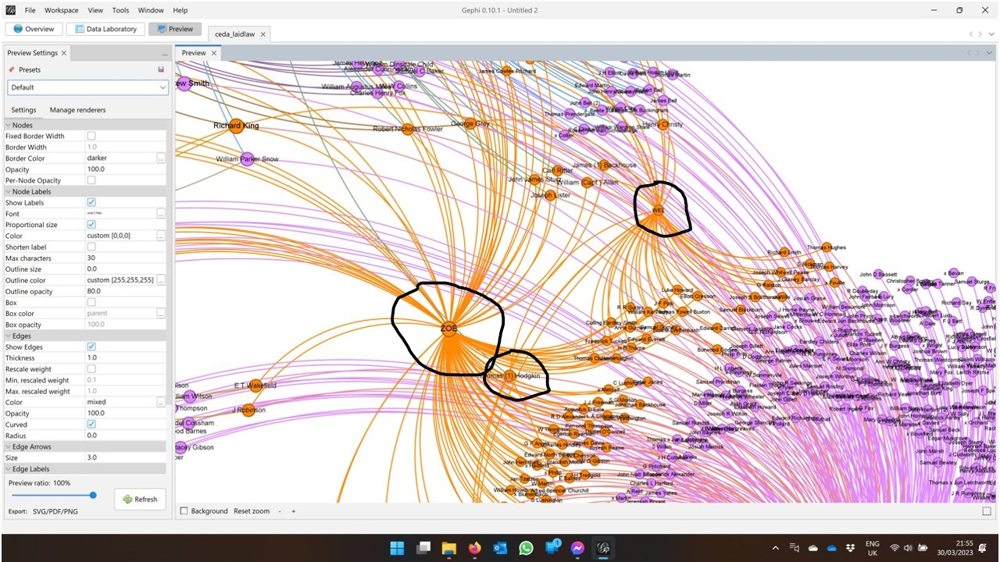5.15 Other groupings emerge#
Other smaller groups that liaise between Hodgkin and the CEDA also become visible in the graph, and these are worthy of further study.
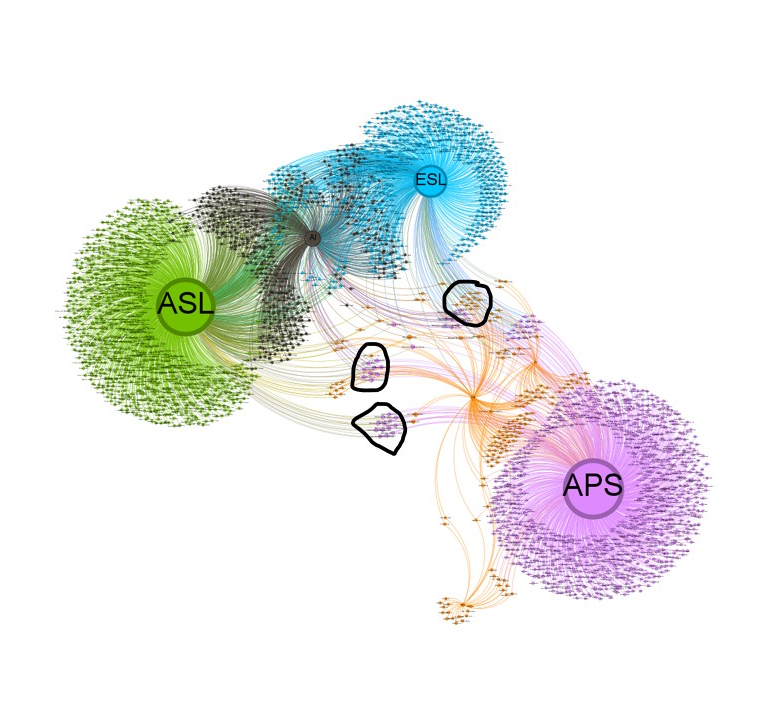5.16 Quaker roles emerge in detail#
PEH also references 6 (of the 15) Quakers who were members of the QCA - Josiah and William Forster, Robert Howard, Peter Bedford, Joseph Sturge and Robert Alsop (Jun)and they can be seen here networking between the QCA, APS, ZOE and Thomas Hodgkin MD.

5.17 Conclusions#
This exercise has shown that although Thomas Hodgkin’s networks appear only in the index in PEH and in the Wellcome Inst., Hodgkin Archive, in neither of these sources can political activist relationships be easily deduced but, by using data analysis and data visualisation technology thenetworks argued in PEH can be shown and analysed very clearly.
The HDDT CEDA db., comprises the 3000 memberships of CEDA societies concerned firstly with the plight of aborigines, but then quickly afterwards with institution building in the science of ethnology and anthropology and within which Thomas Hodgkin was a key influencer. Placing PEH’s Hodgkin networks alongside the HDDT networks, a much fuller view of community’s political activism is obtained, where the centrality of Hodgkin’s networks to the work of all of the CEDA networks is evident. Clearly, Laidlaw in PEH has in referencing over 100 key networkers, identified those who have close working connections with Hodgkin, and these networks are central to the workings of the greater networks of the CEDA. Other smaller embedded networking groups that liaise between Hodgkin and the CEDA have also been revealed, and these are worthy of further detailed study.
Although PEH offers a literary description of the networks of Hodgkin, Hodgkin himself does not get subsumed by the Gephi graph algorithms into ZOE or WEL, instead he stands aside. This is because, as we can see, his relationships with Quakers and the APS are strong enough to resist the attraction of his relationships with ZOE or WEL networks. This finding is important because it gives good reason to examine Hodgkin’s relationships further with both QCA and the APS (and the ESL). Six Quakers who are key networkers between Hodgkin’s concern for the plight of aborigines and his institution building in the science of anthropology also can be identified and their presence will help to shape the next exercise.
Chapter 6 will thoroughly explore the role of Quakers and chapter 7 the role of Hodgkin’s networks supporting institution building in ethnology and anthropology within the APS and the ESL.
The exercise confirms and supports the centrality and importance of Hodgkin’s networks as set out in the index to PEH and invites further scrutiny of those networks because key individuals and small clusters of persons emerge from the visual analysis.
5.18 Modifications to the database for Part Two#
The ‘dummy’ groups ZOE and WEL, after being scrutinised using a Gephi graph file, add richness and insight into the workings of the CEDA networks and the role of Thomas Hodgkin within those networks. The role of Quakers within these networks is also indicated. Because the new data in ZOE and WEL does not include visual anomalies or reveal a large number of outlying persons (who would add no value to a study of person-to-person networks) we can be confident in now modifying the CEDA database permanently by merging them both into a new CEDA group called HOD. This part of the exercise will be performed in Chapter 5 Part Two.
5.19 Github upload#
We can now update GitHub to pass the exercise and all its resources to the project repo (see step 1) . This enables the entire exercise to be both scrutinised by others and replicated elsewhere.(When the exercise is completed and audited, and all copyright issue resolved the repo can be made public).
End of laidlaw (part one)#
P7 Chapter 5b Thomas Hodgkin’s MD networks - Part two#
Chapter 6 Section 6.22 Case Study 3: Thomas Hodgkin’s MD networks#
File name: jnb_hddt_laidlaw2
Protecting the Empire’s Humanity (PEH): Thomas Hodgkin and British Colonial Activism 1830 - 1870 (Zoë Laidlaw 2021)#
5.20 Preparation#
In Part Two of the exercise we modify the HDDT database to accept the data extracted from PEH and WEL, labelling it as a new CEDA called ‘HOD’ to show Thomas Hodgkin MD’s personal network. (note: This is his political network that Laidlaw observed in archival research as primarily supporting Hodgkin’s work to relieve the plight of Aborigines. It does not include his ‘medical’ or ‘scientific’ networks.)
5.21 Github#
Make a private GitHub repository for the exercise and clone it to the University of Birmingham secure server space allocated for this project. KelvinBeerJones/jnb_laidlaw2 cloned to this container
5.22 Call up the python packages needed to perform the analysis#
Pandas, numpy and pyplotlib, - used to create tables and charts in the Workbook.
Plot.rc - to specify the dimensions for all imported images (this keeps images to a uniform size and shape).
Itemgetter, NetworkX and nbconvert - to create a Gexf file for Gephi, which is used to generate visualisations and to perform visual analysis of the social networks.
csv reader - to extract the selected sqlite database data from the selected db., views.
# First we call up the python packages we need to perform the analysis:
import pandas as pd
import numpy as np
import matplotlib.pyplot as plt
plt.rc('figure', figsize=(20, 10))
from IPython.display import set_matplotlib_formats
set_matplotlib_formats('png', 'pdf')
from operator import itemgetter
import networkx as nx
from networkx.algorithms import community
#This part of networkx,
# for community detection, needs to be imported separately.
import nbconvert
import csv
# <img src="xxxx.png">
---------------------------------------------------------------------------
ModuleNotFoundError Traceback (most recent call last)
Cell In[1], line 5
3 import pandas as pd
4 import numpy as np
----> 5 import matplotlib.pyplot as plt
6 plt.rc('figure', figsize=(20, 10))
7 from IPython.display import set_matplotlib_formats
ModuleNotFoundError: No module named 'matplotlib'
5.23 call up the csv files and prepare data for Gephi visualisation#
person_names = pd.read_csv ('vw_hddt_person_table2.csv')
hod = pd.read_csv ('laidlaw_hod.csv')
names2 = pd.read_csv ('vw_hddt_person_name2.csv')# For nodes csv
tuples2 = pd.read_csv ('vw_hddt_ceda_tuples2.csv')# For edges.csv
with open('vw_hddt_person_name2.csv', 'r') as nodecsv:
# Open the Nodes csv file
nodereader = csv.reader(nodecsv)
# Read the csv
nodes = [n for n in nodereader][1:]
# Retrieve the data (using Python list comprhension and list slicing
# to remove the header row
node_names = [n[0] for n in nodes]
# Get a list of only the node names
with open('vw_hddt_ceda_tuples2.csv', 'r') as edgecsv:
# Open the file
edgereader = csv.reader(edgecsv)
# Read the csv
edge_list = list(edgereader)
# Convert to list, so can iterate below in for loop
# Create empty arrays to store edge data and edge attribute data
edges = []
edges_attributes = []
# Fill the arrays with data from CSV
for e in edge_list[1:]:
edges.append(tuple(e[0:2]))
# Get the first 2 columns (source, target) and add to array
# not used this time. edges_attributes.append(tuple(e[2:4]))
# Get the 3rd and 4th columns (first_year, last_year) and add to array
edge_names = [e[0] for e in edges] # Get a list of only the edge names
5.24 Introduction to the exercise - Part Two#
As a result of the exercise performed in Laidlaw (Part One) we accept that a new CEDA can be created called HOD to represent the personal political network of Thomas Hodgkin MD as extracted from the Index to PEH and the indexes to the Wellcome Inst., Hodgkin Family Archive. All of the members of this new CEDA are also already recorded in the HTTD database as members of at least one of the original CEDA. In this part of the exercise we amend the HTTD database to include the CEDA group HOD.
Laidlaw’s research into the Wellcome Inst., Hodgkin Collection reveals an important and relevant social network amongst the HDDT CEDA persons – based on Laidlaw’s close study of Thomas Hodgkin’s personal correspondence (where the receiver of correspondence also writes to him). We select some of Laidlaw’s person references because they already appear in the HDDT CEDA database, and they complement the data initially collected for this thesis because they provide new information about existing HDDT persons and networking.
This necessitates amendments to the SQLite database and the production of another (this) Jupyter Notebook made to examine and verify the deepened HDDT CEDA networking in the HDDT as a whole after the Laidlaw HOD modifications had been made.
5.25 Data verification#
The members of the Centres for the Emergence of the Discipline of Anthropology in Britain (CEDA) after accepting the new Laidlaw Exercise (Part One) data assigning persons to a new CEDA called HOD. We show that the data_sources ‘WEL’ and ‘ZOE’ used in Laidlaw Exercise (part One) have been removed from the database. (They were temporarily placed in the HDDT solely as ‘dummies’ to show the number of persons referenced in PEH and WEL with two way correspondence, but disregarded by the Laidlaw (Part One) exercise because these person are not present in the original CEDA).
5.26 Person table after modification#
person_names.groupby('data_source_id')['Name'].nunique().plot(kind='pie')
plt.title ("Persons_by_data_source")
plt.xlabel ("data_source_id")
plt.ylabel ("Number of persons")
plt.show()
data_source_id |
Source |
|---|---|
1 |
RAI |
2 |
QCA |
3 |
APS |
Code cell 22 - Person table data#
person_names
| Name | title | gender_id | birth_year | death_year | data_source_id | notes | |
|---|---|---|---|---|---|---|---|
| 0 | Arthur William A Beckett | NaN | 1.0 | 1844.0 | 1909.0 | 1 | 17 King Street, S. James's, S.W. 88 St James's... |
| 1 | Andrew Mercer Adam | NaN | 1.0 | NaN | NaN | 1 | Boston, Lincolnshire |
| 2 | H R Adam | NaN | 1.0 | NaN | NaN | 1 | Old Calabar, W. Africa |
| 3 | William Adam | NaN | 1.0 | NaN | NaN | 1 | NaN |
| 4 | Henry John Adams | NaN | 1.0 | NaN | NaN | 1 | 14 Thornhill Square, N. |
| ... | ... | ... | ... | ... | ... | ... | ... |
| 3089 | x Wright | Rev Dr | NaN | NaN | NaN | 3 | NaN |
| 3090 | W Wrigley | NaN | NaN | NaN | NaN | 3 | NaN |
| 3091 | James Yates | Rev | NaN | NaN | NaN | 3 | NaN |
| 3092 | John Young | NaN | NaN | NaN | NaN | 3 | NaN |
| 3093 | Thomas Zachary | NaN | NaN | NaN | NaN | 3 | NaN |
3094 rows × 7 columns
5.27 Persons who are members of the new HOD CEDA#
hod
| person_id | Name | birth_year | death_year | Target | |
|---|---|---|---|---|---|
| 0 | 3386 | John Washington | NaN | NaN | HOD |
| 1 | 3371 | Jan Tzatzoe | NaN | NaN | HOD |
| 2 | 3366 | J H Tredgold | NaN | NaN | HOD |
| 3 | 3359 | H B Thorpe | NaN | NaN | HOD |
| 4 | 3357 | Perronet Thompson | NaN | NaN | HOD |
| ... | ... | ... | ... | ... | ... |
| 149 | 465 | Frederick Cooper | NaN | NaN | HOD |
| 150 | 403 | Henry Christy | 1,810 | 1,865 | HOD |
| 151 | 81 | James (1) Backhouse | 1,794 | 1,869 | HOD |
| 152 | 28 | William (Capt.) Allen | NaN | NaN | HOD |
| 153 | 7 | William (1) Adams | NaN | NaN | HOD |
154 rows × 5 columns
5.28 Generate gexf file for Gephi visualisation#
Code cell 24 - Check volume of data for Gephi visualisation graph#
print("Nodes length: ", len(node_names))
print("Edges length: ", len(edges))
# not used this time.
print("Edges attributes length: ", len(edges_attributes))
# This should be the same length as edges
Nodes length: 3094
Edges length: 4046
Edges attributes length: 0
Code cell 25 - Check the data quality for Gephi visualisation graph#
# First check that the data is correctly formatted
print("First 5 nodes:", node_names[0:5])
print("First 5 edges:", edges[0:5])
# not used this time. print("First 5 edges attributes:", edges_attributes[0:5])
# The output will appear below this code cell.
First 5 nodes: ['Arthur William A Beckett', 'Andrew Mercer Adam', 'H R Adam', 'William Adam', 'Henry John Adams']
First 5 edges: [('William Adam', 'ESL'), ('William (1) Adams', 'ESL'), ('William (2) Adams', 'ESL'), ('Louis Agassiz', 'ESL'), ('Augustine Aglio', 'ESL')]
Code cell 26 - NetworkX function#
# We use NetworkX to build the graph data into a table
G = nx.Graph()
G.add_nodes_from(node_names)
G.add_edges_from(edges)
print(nx.info(G))
Name:
Type: Graph
Number of nodes: 3100
Number of edges: 4021
Average degree: 2.5942
The number of nodes here is 3094 persons plus 6 groups = 3100 (the additional 6 nodes are the CEDA names (CQA, APS, ESL, AI, ASL, and HOD). Gephi will produce a ‘bigraph’ of the data where relationships are beween individual persons and membership organisations.
Code cell 27 - Write the gexf file#
# Finally we can write a gexf file which will be placed in the root directory.
# We can then open the file in Gephi and visualize the network.
nx.write_gexf(G, 'ceda_laidlaw2.gexf')
5.29 Visual analysis of the exercise#
5.30 The CEDA political network with HOD added#
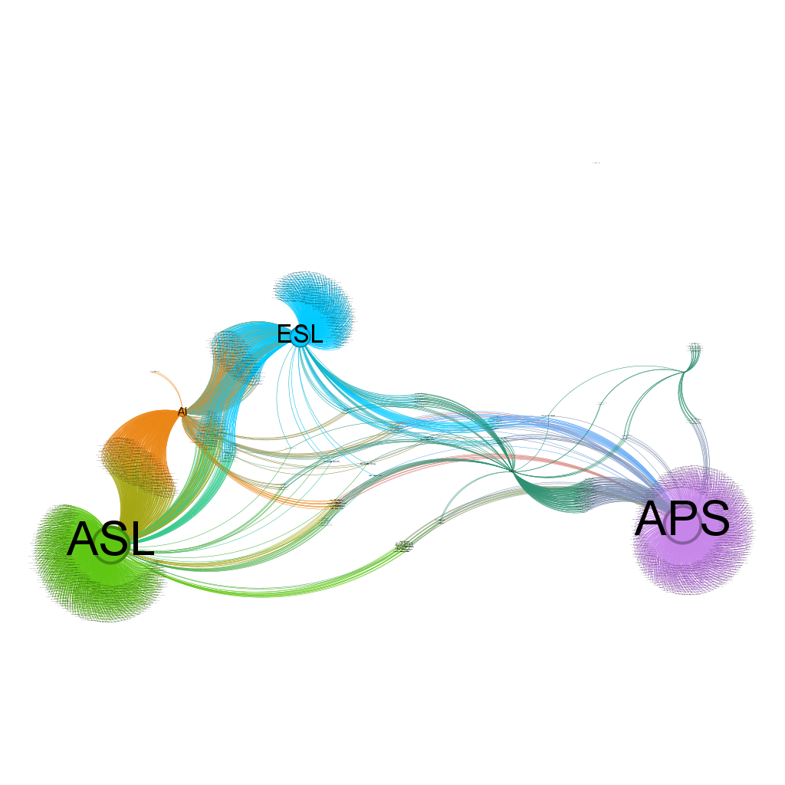Society |
abv. |
Dates |
Colour |
|---|---|---|---|
Quaker Committee on the Aborigines and the Thomas Hodgkin MD group |
QCA |
1832/37 - 1846 |
Dark green |
Aborigines Protection Society |
APS |
1837 - 1919 |
Purple |
Ethnological Society of London |
ESL |
1843 - 1871 |
Blue |
Anthropological Society of London |
ASL |
1863 - 1871 |
Light Green |
Anthropological Institute |
AI |
1843 - 1871 |
Orange |
Protecting the Empire’s Humanity |
HOD |
2021 |
dark green |
The Hodgkin network and it’s relationships (shown above) are much clearer now that the groups WEL and ZOE have been combined into one. (Both of these former groups were identified by Laidlaw in PEH). The graph is best read ‘right’ to ‘left’ following the groups shown in dark green. The Quaker Committee on the Aborigines (QCA), active from 1832 - 1837 (or 1846?) appears top right. This group is ‘led’ by Thomas Hodgkin MD. Below is the APS formed in 1837 and active to 1919 (beyond the entire period studied in the thesis). We know that Thomas Hodgkin MD formed the APS at Ratcliffe Quaker Meeting House in 1837.
“Dr Hodgkin moved that an auxiliary society be formed in Ratcliff [ ? Quaker meeting ?] for the purpose of promoting the objects of the Aborigines Protection Society and more especially to collect information from persons recently arrived from abroad and to exert an interest in those who might be going out as colonists or sailors. He observed that though a great amount of valuable information relating to the subjects now under consideration was brought to this part from various parts of the globe very great difficulty had been experienced in collecting it. The formation of the proposed branch society might do much to overcome this difficulty.”
(WELLCOME LIBRARY FOR THE HISTORY AND UNDERSTANDING OF MEDICINE, DEPARTMENT OF ARCHIVES AND MANUSCRIPTS. HODGKIN FAMILY PAPERS 1996 PP/HO/D, Thomas Hodgkin MD (1798 1866), General Material on Civilisation and Colonialization. Aborigines Protection Society General Materials.)
PP/HO/D/D148, Minutes of the First Meeting, (3ff), 1837
Thomas Hodgkin’s network (HOD) does not centre closely to the QCA, it lies at the heart of the greater network collected and compiled in the HTTD. It links most strongly with the APS, but also has good connectivity with the ESL and later the ASL. It has poor connectivity to the AI.
5.31 The CEDA political network with HOD added in detail#
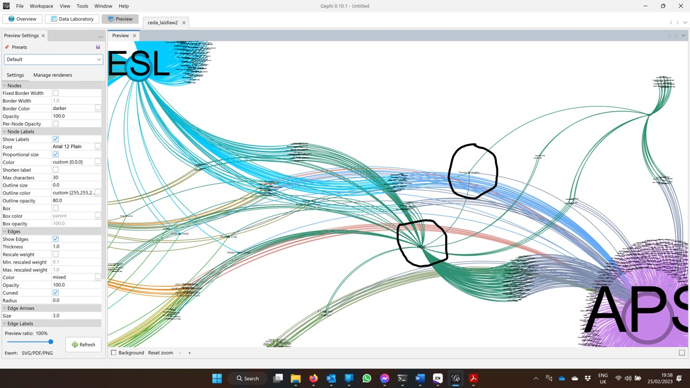We can see that Hodgkin sits apart, pulled (By the Force Atlas algorithm) to sit between the QCA, the APS and his own personal network (HOD). He is revealled as highly networked and this indicates a possible key influencer.
The next exercise (Chapter 6) will examine a much greater political activist network suporting and supported by Thomas Hodgkin MD, and one that is not revelaed in it’s full extent by this exercise, - Quakers in Britain.
5.32 Github upload#
We can now update GitHub to pass this exercise and all its resources to the dedicated project repo (see step 1). This enables the entire exercise to be both scrutinised by others and replicated elsewhere (When the exercise is completed and audited, and all copyright issue resolved the repo can be made public).
P7 Chapter 6 Case Study 2 589 Quakers and their family relationships#
Thesis Chapter 6 Section 6.21#
File Name: jnb_hddt_quaker_tables
6.1 Import resources#
import csv
import pandas as pd
import matplotlib.pyplot as plt
import numpy as np
from operator import itemgetter
import networkx as nx
from networkx.algorithms import community
#This part of networkx, for community detection, needs to be imported separately.
import nbconvert
import seaborn as sns
plt.rc('figure', figsize=(20, 10))
# <img src=" xxx.png">
---------------------------------------------------------------------------
ModuleNotFoundError Traceback (most recent call last)
Cell In[1], line 3
1 import csv
2 import pandas as pd
----> 3 import matplotlib.pyplot as plt
4 import numpy as np
5 from operator import itemgetter
ModuleNotFoundError: No module named 'matplotlib'
quakers = pd.read_csv ('vw_1_quakers.csv')
quakers['birth_year'] = quakers['death_year'].fillna(0).astype(np.int64)
quakers['death_year'] = quakers['death_year'].fillna(0).astype(np.int64)
quaker_relationships = pd.read_csv ('vw_5_person1_person2.csv')
immediate = pd.read_csv ('vw_5_quaker_relationships_3.csv')
close = pd.read_csv ('vw_5_quaker_relationships_2.csv')
distant = pd.read_csv ('vw_5_quaker_relationships_1.csv')
quaker_ceda = pd.read_csv('vw_4_ceda_membership_quakers2.csv')
quaker_aps = pd.read_csv ('vw_4_ceda_membership_quakers_aps2.csv')
quaker_esl = pd.read_csv('vw_4_ceda_membership_quakers_esl2.csv')
quaker_asl = pd.read_csv('vw_4_ceda_membership_quakers_asl2.csv')
quaker_ai = pd.read_csv('vw_4_ceda_membership_quakers_ai2.csv')
quaker_qca = pd.read_csv('vw_4_ceda_membership_quakers_qca2.csv')
quaker_hod = pd.read_csv('vw_4_ceda_membership_quakers_hod2.csv')
quaker_not_hod = pd.read_csv('vw_4_ceda_membership_quakers_not_hod2.csv')
Quakers with CEDA memberships but without family relationships are circled in blue
Quakers begin their engagement with the Quaker Committee on the Aborigines. Led by Thomas Hodgkin MD (who can be seen in the centre of the graph) they then become members of the Aborigines Protection Society where they comprise 50% of the members. Some Quakers then go on to be members of the Ethnological Society of London, the Anthropological Society of London, and finally the Anthropological Institute.
6.2 List out all Quakers in the database#
quakers
| Name | birth_year | death_year | data_source_id | |
|---|---|---|---|---|
| 0 | William Aldam | 1890 | 1890 | 1 |
| 1 | S Stafford Allen | 1870 | 1870 | 1 |
| 2 | Edward Backhouse | 1879 | 1879 | 1 |
| 3 | James (1) Backhouse | 1869 | 1869 | 1 |
| 4 | James Bell | 1872 | 1872 | 1 |
| ... | ... | ... | ... | ... |
| 584 | Joshua Wilson | 0 | 0 | 3 |
| 585 | F Woodhead | 0 | 0 | 3 |
| 586 | W Woolston | 0 | 0 | 3 |
| 587 | Francis Wright | 0 | 0 | 3 |
| 588 | S W Wright | 0 | 0 | 3 |
589 rows × 4 columns
6.3 List out all the Quaker family relationships#
quaker_relationships
| Source | Target | relationship_type_id | |
|---|---|---|---|
| 0 | William Aldam | x Fox | 1 |
| 1 | William Jun Aldam | x Fox | 1 |
| 2 | Frederick Alexander | R D Alexander | 1 |
| 3 | G W Alexander | R D Alexander | 1 |
| 4 | Henry Alexander | R D Alexander | 1 |
| ... | ... | ... | ... |
| 2001 | Alfred Waterhouse | R Waterhouse | 3 |
| 2002 | Mary Waterhouse | Paul Bevan | 3 |
| 2003 | Lucy Westcombe | Thomas Westcombe | 3 |
| 2004 | Benjamin Wheeler | Samuel Wheeler | 3 |
| 2005 | Charles Wilson | Joshua Wilson | 3 |
2006 rows × 3 columns
6.4 All Quaker family relationships#
# quaker_relationships.groupby('relationship_type_id')['Source'].nunique().plot(kind='pie')
quaker_relationships.groupby('relationship_type_id')['Source'].count().plot(kind='pie')
plt.title ("Quaker Relationships in CEDA")
plt.xlabel ("Relationships")
plt.ylabel ("Number of Quakers")
plt.legend(["1 = Distant", "2 = Close", "3 = Immediate"], loc ="lower right")
plt.show()

6.5 Quakers and their family relationship networks#
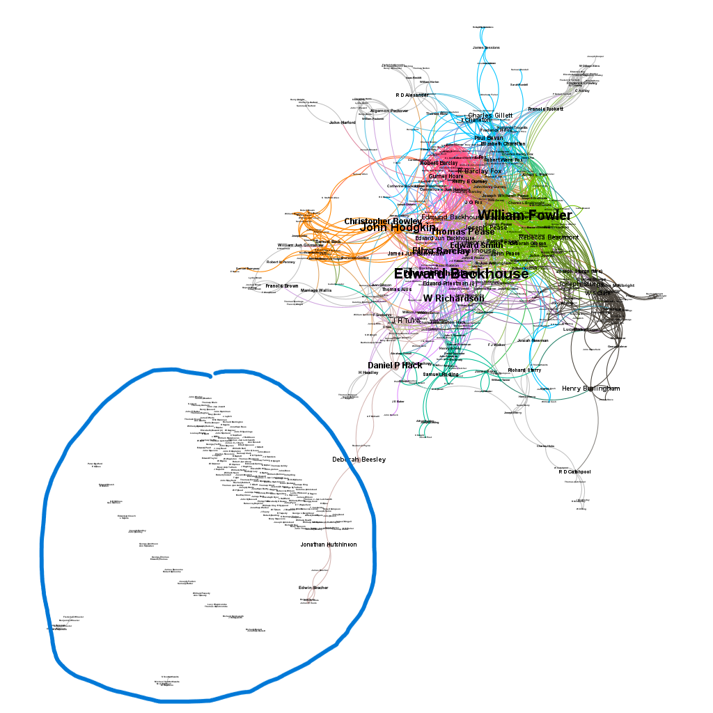6.6 Immediate relationships#
immediate
| Source | Target | relationship_type_id | |
|---|---|---|---|
| 0 | Arthur Albright | John M Albright | 3 |
| 1 | Arthur Albright | Rachel Albright | 3 |
| 2 | Arthur Albright | William Albright | 3 |
| 3 | Rachel Albright | John M Albright | 3 |
| 4 | Rachel Albright | William Albright | 3 |
| ... | ... | ... | ... |
| 236 | Alfred Waterhouse | R Waterhouse | 3 |
| 237 | Mary Waterhouse | Paul Bevan | 3 |
| 238 | Lucy Westcombe | Thomas Westcombe | 3 |
| 239 | Benjamin Wheeler | Samuel Wheeler | 3 |
| 240 | Charles Wilson | Joshua Wilson | 3 |
241 rows × 3 columns
6.7 Close relationships#
close
| Source | Target | relationship_type_id | |
|---|---|---|---|
| 0 | R D Alexander | Christopher Bowley | 2 |
| 1 | R D Alexander | Robert Charleton | 2 |
| 2 | R D Alexander | Frederick H Fox | 2 |
| 3 | R D Alexander | Thomas Maw | 2 |
| 4 | R D Alexander | William Norton | 2 |
| ... | ... | ... | ... |
| 495 | W Whiting | John Whiting | 2 |
| 496 | Isaac Wilson | S Braithwaite | 2 |
| 497 | Isaac Wilson | John Jowett | 2 |
| 498 | Isaac Wilson | John E Wilson | 2 |
| 499 | William Spicer Wood | Daniel Doncaster | 2 |
500 rows × 3 columns
6.8 Distant relationships#
distant
| Source | Target | relationship_type_id | |
|---|---|---|---|
| 0 | William Aldam | x Fox | 1 |
| 1 | William Jun Aldam | x Fox | 1 |
| 2 | Frederick Alexander | R D Alexander | 1 |
| 3 | G W Alexander | R D Alexander | 1 |
| 4 | Henry Alexander | R D Alexander | 1 |
| ... | ... | ... | ... |
| 1260 | William Wilson | Barnard Dickinson | 1 |
| 1261 | William Wilson | Frederick Fryer | 1 |
| 1262 | William Wilson | Benjamin Jowett (2) | 1 |
| 1263 | William Wilson | John Pease | 1 |
| 1264 | William Wilson | Joseph Pease | 1 |
1265 rows × 3 columns
6.9 Significant personal networks - Thomas Hodgkin MD#

6.10 Significant personal networks - John Hodgkin#

6.11 Significant personal networks - Edward Backhouse#

6.12 Significant personal networks - William Fowler#
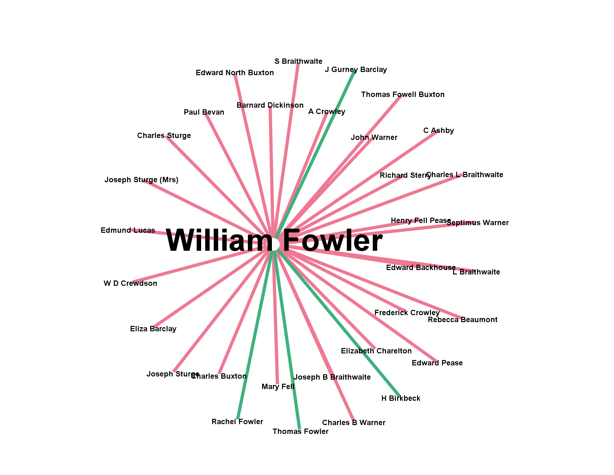6.13 List out all Quaker members of the CEDA#
quaker_ceda
| Name | religion_name | ceda_name | first_year | last_year | |
|---|---|---|---|---|---|
| 0 | William Spicer Wood | Quaker | APS | 1864.0 | 1867.0 |
| 1 | William Spicer Wood | Quaker | ASL | 1863.0 | 1871.0 |
| 2 | William Spicer Wood | Quaker | AI | 1863.0 | 1871.0 |
| 3 | William Wilson | Quaker | APS | 1838.0 | 1865.0 |
| 4 | William Wilson | Quaker | ASL | 1865.0 | 1866.0 |
| ... | ... | ... | ... | ... | ... |
| 683 | Joshua Wilson | Quaker | APS | 1860.0 | 1860.0 |
| 684 | F Woodhead | Quaker | APS | 1861.0 | 1862.0 |
| 685 | W Woolston | Quaker | APS | 1861.0 | 1861.0 |
| 686 | Francis Wright | Quaker | APS | 1838.0 | 1838.0 |
| 687 | S W Wright | Quaker | APS | 1861.0 | 1861.0 |
688 rows × 5 columns
6.14 Pie chart Quaker CEDA memberships#
quaker_ceda.groupby('ceda_name')['Name'].nunique().plot(kind='pie')
plt.title ("Quakers in CEDA")
plt.xlabel ("CEDA")
plt.ylabel ("Number of Quakers")
plt.show()

6.15 Quaker CEDA membership networks#
6.16 Quaker joiners of the CEDA by years#
quaker_ceda.groupby('first_year')['Name'].nunique().plot(kind='bar')
plt.title ("Number of Quaker CEDA joiners in each year")
plt.ylabel ("No. of joiners")
plt.show()
6.17 Quaker leavers of the CEDA by years#
quaker_ceda.groupby('last_year')['Name'].nunique().plot(kind='bar')
plt.title ("Number of Quaker CEDA leavers in each year")
plt.ylabel ("No. of joiners")
plt.show()
6.18 Quaker members of the QCA#
quaker_qca
| Name | religion_name | ceda_name | first_year | last_year | |
|---|---|---|---|---|---|
| 0 | Thomas (1) Hodgkin | Quaker | QCA | 1839 | 1847 |
| 1 | James Bowden | Quaker | QCA | 1842 | 1847 |
| 2 | William Nash | Quaker | QCA | 1842 | 1847 |
| 3 | Joseph Sturge | Quaker | QCA | 1842 | 1847 |
| 4 | William Jun Grimshaw | Quaker | QCA | 1840 | 1847 |
| 5 | Henry Knight | Quaker | QCA | 1840 | 1847 |
| 6 | Edward Paull | Quaker | QCA | 1840 | 1847 |
| 7 | Robert Jun Alsop | Quaker | QCA | 1837 | 1847 |
| 8 | Abram Rawlinson Barclay | Quaker | QCA | 1837 | 1839 |
| 9 | John Barclay | Quaker | QCA | 1837 | 1839 |
| 10 | Richard Barrett | Quaker | QCA | 1837 | 1839 |
| 11 | John Thomas Barry | Quaker | QCA | 1837 | 1847 |
| 12 | Peter Bedford | Quaker | QCA | 1837 | 1847 |
| 13 | John Bell | Quaker | QCA | 1837 | 1839 |
| 14 | Thomas Christy | Quaker | QCA | 1837 | 1839 |
| 15 | Samuel Darton | Quaker | QCA | 1837 | 1839 |
| 16 | Josiah Forster | Quaker | QCA | 1837 | 1847 |
| 17 | Robert Forster | Quaker | QCA | 1837 | 1847 |
| 18 | William Forster | Quaker | QCA | 1837 | 1847 |
| 19 | Joseph Talwin Foster | Quaker | QCA | 1837 | 1847 |
| 20 | John Hamilton | Quaker | QCA | 1837 | 1839 |
| 21 | Edwd Harris | Quaker | QCA | 1837 | 1847 |
| 22 | Geo Holmes | Quaker | QCA | 1837 | 1839 |
| 23 | Robert Howard | Quaker | QCA | 1837 | 1839 |
| 24 | John Kitching | Quaker | QCA | 1837 | 1839 |
| 25 | Joseph Neatby | Quaker | QCA | 1837 | 1847 |
| 26 | John Sanderson | Quaker | QCA | 1837 | 1847 |
| 27 | Joseph Shewell | Quaker | QCA | 1837 | 1839 |
| 28 | George Stacey | Quaker | QCA | 1837 | 1847 |
| 29 | Joseph Storrs | Quaker | QCA | 1837 | 1847 |
6.19 Quaker joiners of the QCA in years#
quaker_qca.groupby('first_year')['Name'].nunique().plot(kind='bar')
plt.title ("QCA Number of Quaker joiners in each year")
plt.ylabel ("No. of joiners")
plt.show()

6.20 Quaker leavers of the QCA in years#
quaker_qca.groupby('last_year')['Name'].nunique().plot(kind='bar')
plt.title ("QCA Number of Quaker leavers in each year")
plt.ylabel ("No. of joiners")
plt.show()
6.21 Show the Quaker members of the APS#

Note Quakers make up roughly half of the members over all years#
6.22 Quaker members of the APS - distant relationships#
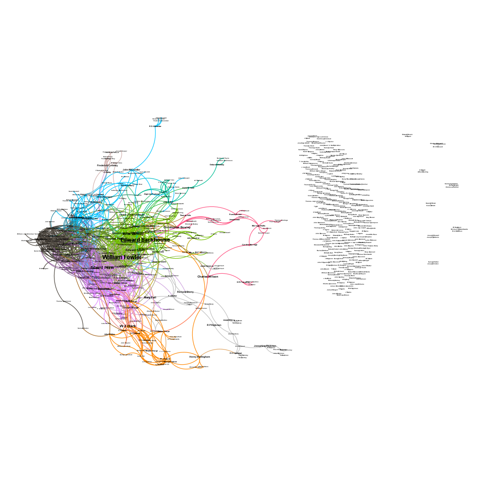6.23 Quaker members of the APS - close relationships#
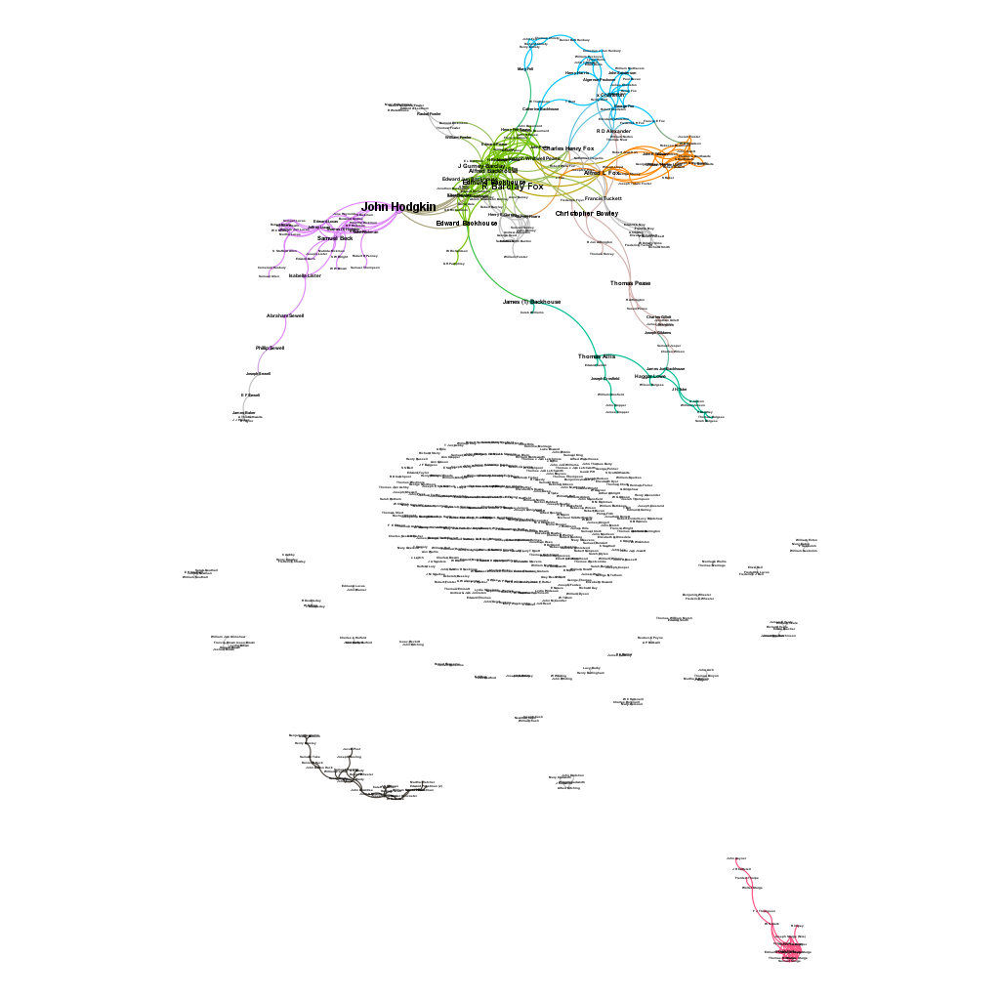6.24 Quaker members of the APS - immediate relationships#
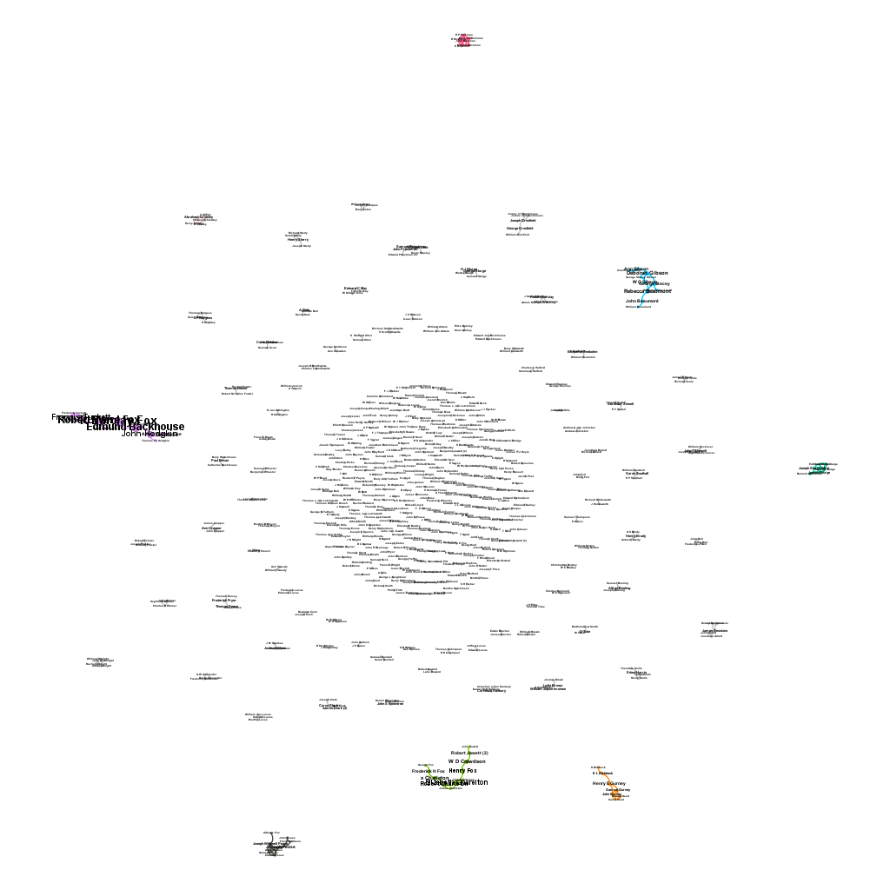6.25 Show quaker members of the APS#
quaker_aps
| Name | religion_name | ceda_name | first_year | last_year | |
|---|---|---|---|---|---|
| 0 | William Spicer Wood | Quaker | APS | 1864 | 1867 |
| 1 | William Wilson | Quaker | APS | 1838 | 1865 |
| 2 | James Wilson | Quaker | APS | 1862 | 1867 |
| 3 | E T Wakefield | Quaker | APS | 1853 | 1864 |
| 4 | John Ross | Quaker | APS | 1839 | 1852 |
| ... | ... | ... | ... | ... | ... |
| 568 | Joshua Wilson | Quaker | APS | 1860 | 1860 |
| 569 | F Woodhead | Quaker | APS | 1861 | 1862 |
| 570 | W Woolston | Quaker | APS | 1861 | 1861 |
| 571 | Francis Wright | Quaker | APS | 1838 | 1838 |
| 572 | S W Wright | Quaker | APS | 1861 | 1861 |
573 rows × 5 columns
6.26 Pie chart Quaker joiners of the APS#
quaker_aps.groupby('first_year')['Name'].nunique().plot(kind='bar')
plt.title ("APS Number of Quaker joiners in each year")
plt.ylabel ("No. of joiners")
plt.show()
6.27 Pie chart Quaker joiners of the APS#
quaker_aps.groupby('last_year')['Name'].nunique().plot(kind='bar')
plt.title ("APS Number of Quaker leavers in each year")
plt.ylabel ("No. of joiners")
plt.show()
6.28 Show Quaker members of the ESL#
quaker_esl
| Name | religion_name | ceda_name | first_year | last_year | |
|---|---|---|---|---|---|
| 0 | William Horton Lloyd | Quaker | ESL | 1844 | 1847 |
| 1 | Joseph Lister | Quaker | ESL | 1844 | 1847 |
| 2 | Thomas (1) Hodgkin | Quaker | ESL | 1844 | 1862 |
| 3 | John Henry Gurney | Quaker | ESL | 1860 | 1867 |
| 4 | Charles Henry Fox | Quaker | ESL | 1861 | 1871 |
| 5 | William Fowler | Quaker | ESL | 1851 | 1851 |
| 6 | Robert Nicholas Fowler | Quaker | ESL | 1851 | 1871 |
| 7 | David Dale | Quaker | ESL | 1860 | 1863 |
| 8 | x Collier | Quaker | ESL | 1844 | 1844 |
| 9 | William Clay | Quaker | ESL | 1861 | 1868 |
| 10 | Henry Christy | Quaker | ESL | 1854 | 1865 |
| 11 | James Bell | Quaker | ESL | 1852 | 1862 |
| 12 | James (1) Backhouse | Quaker | ESL | 1869 | 1869 |
| 13 | Edward Backhouse | Quaker | ESL | 1870 | 1871 |
| 14 | William Aldam | Quaker | ESL | 1844 | 1848 |
6.29 Show Quaker joiners of the ESL#
quaker_esl.groupby('first_year')['Name'].nunique().plot(kind='bar')
plt.title ("ESL Number of Quaker joiners in each year")
plt.ylabel ("No. of joiners")
plt.show()
6.30 Show Quaker joiners of the ESL#
quaker_esl.groupby('last_year')['Name'].nunique().plot(kind='bar')
plt.title ("ESL Number of Quaker leavers in each year")
plt.ylabel ("No. of joiners")
plt.show()

6.31 Show Quaker members of the ASL#
quaker_asl
| Name | religion_name | ceda_name | first_year | last_year | |
|---|---|---|---|---|---|
| 0 | William Spicer Wood | Quaker | ASL | 1863 | 1871 |
| 1 | William Wilson | Quaker | ASL | 1865 | 1866 |
| 2 | James Wilson | Quaker | ASL | 1865 | 1865 |
| 3 | E T Wakefield | Quaker | ASL | 1865 | 1868 |
| 4 | J Robinson | Quaker | ASL | 1865 | 1865 |
| 5 | Jonathan Hutchinson | Quaker | ASL | 1863 | 1871 |
| 6 | William Holmes | Quaker | ASL | 1865 | 1869 |
| 7 | George Stacey Gibson | Quaker | ASL | 1864 | 1866 |
| 8 | James T J Doyle | Quaker | ASL | 1865 | 1868 |
| 9 | Henry Crowley | Quaker | ASL | 1864 | 1871 |
| 10 | William Bull | Quaker | ASL | 1867 | 1871 |
| 11 | Antonio Brady | Quaker | ASL | 1864 | 1871 |
| 12 | S Stafford Allen | Quaker | ASL | 1863 | 1870 |
6.32 Show quaker joiners of the ASL#
quaker_asl.groupby('first_year')['Name'].nunique().plot(kind='bar')
plt.title ("ASL Number of Quaker joiners in each year")
plt.ylabel ("No. of joiners")
plt.show()
6.33 Show quaker joiners of the ASL#
quaker_asl.groupby('last_year')['Name'].nunique().plot(kind='bar')
plt.title ("ASL Number of Quaker leavers in each year")
plt.ylabel ("No. of joiners")
plt.show()

6.34 Show Quaker members of the AI#
quaker_ai
| Name | religion_name | ceda_name | first_year | last_year | |
|---|---|---|---|---|---|
| 0 | William Spicer Wood | Quaker | AI | 1863 | 1871 |
| 1 | Jonathan Hutchinson | Quaker | AI | 1863 | 1871 |
| 2 | Charles Henry Fox | Quaker | AI | 1861 | 1871 |
| 3 | Robert Nicholas Fowler | Quaker | AI | 1851 | 1871 |
| 4 | Henry Crowley | Quaker | AI | 1864 | 1871 |
| 5 | William Bull | Quaker | AI | 1867 | 1871 |
| 6 | Antonio Brady | Quaker | AI | 1864 | 1871 |
| 7 | Edward Backhouse | Quaker | AI | 1870 | 1871 |
6.35 Show Quaker joiners of the AI#
quaker_ai.groupby('first_year')['Name'].nunique().plot(kind='bar')
plt.title ("AI Number of Quaker joiners in each year")
plt.ylabel ("No. of joiners")
plt.show()
6.36 Show Quaker joiners of the AI#
quaker_ai.groupby('last_year')['Name'].nunique().plot(kind='bar')
plt.title ("AI Number of Quaker leavers in each year")
plt.ylabel ("No. of joiners")
plt.show()
6.37 Quaker CEDA members of Case Study Three Hodgkin’s network#
Note There are no ‘first’ and ‘last’ year data for this dummy CEDA
quaker_hod
| Name | birth_year | death_year | religion_name | ceda_name | |
|---|---|---|---|---|---|
| 0 | E T Wakefield | NaN | NaN | Quaker | HOD |
| 1 | John Ross | NaN | NaN | Quaker | HOD |
| 2 | J Robinson | NaN | NaN | Quaker | HOD |
| 3 | Joseph Lister | 1827.0 | 1912.0 | Quaker | HOD |
| 4 | Thomas (1) Hodgkin | 1798.0 | 1866.0 | Quaker | HOD |
| 5 | Thomas (1) Hodgkin | 1798.0 | 1866.0 | Quaker | HOD |
| 6 | Robert Nicholas Fowler | 1828.0 | 1891.0 | Quaker | HOD |
| 7 | Henry Christy | 1810.0 | 1865.0 | Quaker | HOD |
| 8 | James (1) Backhouse | 1794.0 | 1869.0 | Quaker | HOD |
| 9 | James (1) Backhouse | 1794.0 | 1869.0 | Quaker | HOD |
| 10 | Jonathan Backhouse | NaN | NaN | Quaker | HOD |
| 11 | W G Gibson | NaN | NaN | Quaker | HOD |
| 12 | x Hadfield | NaN | NaN | Quaker | HOD |
| 13 | Thomas Harvey | NaN | NaN | Quaker | HOD |
| 14 | Thomas Hughes | NaN | NaN | Quaker | HOD |
| 15 | S Rickman | NaN | NaN | Quaker | HOD |
| 16 | Richard Smith | NaN | NaN | Quaker | HOD |
| 17 | W Thompson | NaN | NaN | Quaker | HOD |
| 18 | Frederick Tuckett | NaN | NaN | Quaker | HOD |
| 19 | Frederick Tuckett | NaN | NaN | Quaker | HOD |
| 20 | Joseph Sturge | NaN | NaN | Quaker | HOD |
| 21 | Robert Jun Alsop | NaN | NaN | Quaker | HOD |
| 22 | Peter Bedford | NaN | NaN | Quaker | HOD |
| 23 | Josiah Forster | NaN | NaN | Quaker | HOD |
| 24 | Josiah Forster | NaN | NaN | Quaker | HOD |
| 25 | William Forster | NaN | NaN | Quaker | HOD |
| 26 | Robert Howard | NaN | NaN | Quaker | HOD |
| 27 | Robert Howard | NaN | NaN | Quaker | HOD |
| 28 | R D Alexander | NaN | NaN | Quaker | HOD |
| 29 | J Gurney Barclay | NaN | NaN | Quaker | HOD |
| 30 | Joseph B Braithwaite | NaN | NaN | Quaker | HOD |
| 31 | Edward Carroll | NaN | NaN | Quaker | HOD |
| 32 | Elliott Cresson | NaN | NaN | Quaker | HOD |
| 33 | Elliott Cresson | NaN | NaN | Quaker | HOD |
| 34 | James Cropper | NaN | NaN | Quaker | HOD |
| 35 | Burwood Godlee | NaN | NaN | Quaker | HOD |
| 36 | Anna Gurney | NaN | NaN | Quaker | HOD |
| 37 | Anna Gurney | NaN | NaN | Quaker | HOD |
| 38 | Samuel Gurney | NaN | NaN | Quaker | HOD |
| 39 | Samuel Gurney | NaN | NaN | Quaker | HOD |
| 40 | John Barton Hack | NaN | NaN | Quaker | HOD |
| 41 | John Hodgkin | NaN | NaN | Quaker | HOD |
| 42 | John Hodgkin | NaN | NaN | Quaker | HOD |
| 43 | Luke Howard | NaN | NaN | Quaker | HOD |
| 44 | Luke Howard | NaN | NaN | Quaker | HOD |
| 45 | William Howitt | NaN | NaN | Quaker | HOD |
| 46 | Andrew Johnston | NaN | NaN | Quaker | HOD |
| 47 | Joseph Pease | NaN | NaN | Quaker | HOD |
| 48 | Joseph Whitwell Pease | NaN | NaN | Quaker | HOD |
6.38 Quaker CEDA members not in Case Study Three#
quaker_not_hod
| Name | religion_name | ceda_name | first_year | last_year | |
|---|---|---|---|---|---|
| 0 | William Spicer Wood | Quaker | APS | 1864 | 1867 |
| 1 | William Spicer Wood | Quaker | ASL | 1863 | 1871 |
| 2 | William Spicer Wood | Quaker | AI | 1863 | 1871 |
| 3 | William Wilson | Quaker | APS | 1838 | 1865 |
| 4 | William Wilson | Quaker | ASL | 1865 | 1866 |
| ... | ... | ... | ... | ... | ... |
| 634 | Joshua Wilson | Quaker | APS | 1860 | 1860 |
| 635 | F Woodhead | Quaker | APS | 1861 | 1862 |
| 636 | W Woolston | Quaker | APS | 1861 | 1861 |
| 637 | Francis Wright | Quaker | APS | 1838 | 1838 |
| 638 | S W Wright | Quaker | APS | 1861 | 1861 |
639 rows × 5 columns
P7 Chapter 7 Project Seven presentation#
Thesis Chapter 6.24#
File name: jnb_hddt_qsra_september_2021
7.1 An Evidence Based Prosopographical study of 3000 activists 1830-1870 and the 600 Quakers amongst them#
Subject:#
My own research has revealed the extensive social connectivity between the roughly 600 members of a ‘Quaker Led Network (QLN)’ and their involvement within a community of roughly 3000 persons, spread across four organisations in Britain active between 1830 and 1870, which the QLN network helped to set up and staff. I call these, the ‘Centres for the Emergence of Discipline of Anthropology in Britain’ (CEDA).
Question 1:#
What can be revealed if a historian uses data science to study a large historical community over a long period of time by bringing together and integrating metadata from catalogues, indexes, and genealogical data?
Methodology:#
I have designed, built and I am now using a suite of open-source and reproducible relational database technologies and digital analytic tools to visualise and scrutinise the entire community of some 3000 activists over 40 years (1830-1870), picking out the Quakers amongst them so that the community can be explored at both group and individual level. I am able to model the ‘connected’ relationships between the individual members of the CEDA through time, including kinship, education, occupations, locations and organisations.
Question 2:#
What is the extent of Quaker involvement in the CEDA, over the 40 year time span researched, and was Quaker kinship as socially cohesive as (say) education or occupation amongst the wider community?
7.2 This is a code cell#
# First we call up the python packages we need to perform the analysis:
import pandas as pd
import numpy as np
import matplotlib.pyplot as plt
plt.rc('figure', figsize=(20, 10))
from IPython.display import set_matplotlib_formats
set_matplotlib_formats('png', 'pdf')
from operator import itemgetter
import networkx as nx
from networkx.algorithms import community #This part of networkx, for community detection, needs to be imported separately.
import nbconvert
import csv
# <img src="xxxx.png">
---------------------------------------------------------------------------
ModuleNotFoundError Traceback (most recent call last)
Cell In[1], line 5
3 import pandas as pd
4 import numpy as np
----> 5 import matplotlib.pyplot as plt
6 plt.rc('figure', figsize=(20, 10))
7 from IPython.display import set_matplotlib_formats
ModuleNotFoundError: No module named 'matplotlib'
7.3 These are the resources in my container for this exercise#
Resource containers are also GitHub repo’s facilitating granular version control of all changes made to any resources#
7.4 This is the structure of the SQLite database (ERD)#
7.5 Relationships (other then CEDA) present in the data#
This graph shows all of the popular bigraph data in the database. Including all data would result in a ‘hairball’ where data would be too dense to be capable of analysis at this (the highest) level. (See Most popular entities section below)
7.6 All persons are members of at least one CEDA#
Society |
abv. |
Dates |
|---|---|---|
Quaker Committee on the Aborigines* |
QCA |
1832/37 - 1846 |
Aborigines Protection Society |
APS |
1837 - 1919 |
Ethnological Society of London |
ESL |
1843 - 1871 |
Anthropological Society of London |
ASL |
1863 - 1871 |
Anthropological Institute |
AI |
1843 - 1871 |
London Anthropological Society** |
LAS |
1873 - 1874 |
Origin Society included in this project but not recognised by RAI. ** not included in this project (beyond 1871 cut off date).
7.7 Quakers and their relationships#
7.8 Working with a variety of datatables#
A ‘complete’ dataset#
Would be one like this, where all of the data can be contained witin a perfect rectangular block of cells (‘containers’) and every container contains only one data item and every data item can be located by the coordinates ‘Row n, Column n’

An ‘incomplete’ dataset#
When historical data is used often some data is missing (permanently lost) and the HDDT is able to accept ‘Incomplete’ datasets. The HDDT does not lose functionality because of the incomplete nature of much historical data.

An ‘irregular’ dataset#
The HDDT has been designed to accept Irregular datasets. The surviving evidence of the past is not only often Incomplete, it is frequently Irregular, where multiple datasets have different dimensions. (Either because the data in itself is intrinsically different or because different data collectors use different cataloguing methods)

For the HDDT a qualifying dataset is a data set of any dimensions, complete, incomplete or irregular. The only requirement is that all datasets must contain a single common containing one universally shared data item. The HDDT requires all data sets to contain datatables that can be referenced to a PERSON (Name) in one of its rows.
Conflicts between dataset Person (Name)’s are resolved by adopting in this project by nominating the ‘RAI dataset’ as the ‘Authority Index’. With careful matching of Person (Name)’s found in other datasets, the RAI naming rule applies throughout.
7.9 Introduction to bigraph analysis#
Bigraph data statistics#
Table |
Rows |
Columns |
Exc? |
|---|---|---|---|
ceda |
6 |
1 |
Yes |
person_ceda |
3894 |
4 |
Yes |
club |
68 |
1 |
* |
person_club |
323 |
2 |
* |
location |
83 |
1 |
|
person_location |
2061 |
2 |
|
occupation |
93 |
1 |
|
person_occupation |
1883 |
2 |
|
society |
260 |
1 |
|
person_society |
1238 |
2 |
Due to low levels of poulation of 67 other clubs only the Athenaeum Club is included in analysis
7.10 Locations#
Top 10 locations pie chart#
Top 10 locations bigraph#
We can see that London and ‘country’(sic) are the most populated locations. Because the ‘country’ location is an aggregate (and not a specific location) we can think of London and ‘country’ as a twin centre. Within the twin centre we can see the members of both London and ‘country’ locations and that the members of each are highly networked. We can also see that the London location contains many members who have no association with any other group (including ‘country’). London 1830 - 1870, was densely populated and so it is possible that members of the London location had other modes of association. Because the ‘country’ location is an aggregate we cannot make the same analysis to the same extent, it is possible that many members in (say) Newcastle had no association with other members in (say) Bristol. We can see the large group of members who were members of both London and ‘country’ locations. It is highly likely that these members served as conduits of communication and group cohesion. It is interesting to note that only 3 members of this London and ‘country’ group were members of groups outside of the twin centre.
Eight other location each have a membership of around 30 members (we can call these the satellites), all of the satellite groups relate directly to the twin centre with very few members associated with more that one satellite location.
Australia and Ireland have associations with both London and ‘country’. The German location is most closely associated with the ‘country’ group. All of the other locations are strongly associated with the London location.
Germany (far right) is the location least associated with London. Alex Nidda Genthe is the only member from Germany who is also a member of the London location. Friedrich Max Muller, Frederick Augustus Haverick and Gustav Oppert each network with ‘country’ members. William Wilson Hunter is the only ‘country’ member who also appears in the Germany location. He and Gustav oppert also have a location connection with India.
7.11 Occupations#
Top 10 occupations pie chart#
Top 10 occupations bigraph#
We can see that ‘medical’,’academic’ and ‘armed services’ together account for half of the members by occupation. We can also see that the largest three occupational categories each contain many members who have no association with any other occupational group. We can see that the medical categories contain many members who are also members of the other two principal categories (‘academic’ and ‘armed services’). It is highly likely that these members served as conduits of communication and group cohesion amongst the three principal occupational cegories.
Seven other occupations each have a range of members with literary the lowest and business the highest. All of the satellite groups relate directly to the triple centre with many members also associated with more that one other satellite occupation.
It is surprising the the least networked occupation is ‘church’ and perhaps less so that ‘business’ and ‘legal’are highly networked.
Several individuals form a web of interconnectedness between the members occupations.
7.12 Societies#
Top 10 societies pie chart#
Top 10 societies bigraph#
We can see that ‘Geological Society’ and the ‘Royal Goegraphical Society’ together account for a significant number of members by society. The ‘Royal College of Surgeons’, the ‘Medical and Chirurgical Society’ and the ‘College of Physicians’ form the next largest cluster of memberships of societies. These two clusters each contain many members who have no association with any other society. We can see that the medical group and the geographical group have few members in common. The ‘Royal Society’ and the ‘Linnean Society’ in the centre have between them the greatest level of networking amongst all of the societies. It is highly likely that these members served as conduits of communication and group cohesion amongst the two principal society groups.
Many other societies have a range of members all of whom are highly interconnected. All of the satellite groups relate most closely to the ‘Royal Society’ and the ‘Linnean Society’ rather than to the two larger clusters. Many members of the smaller satellite societies are also associated with more that one other satellite occupation.
It is surprising the the least networked occupation is the ‘Royal College of Surgeons’ and perhaps less so that the ‘Geological Society’ and the ‘Royal Geographical Society’ are highly networked.
Several individuals form a web of interconnectedness between the members of societies.
7.13 Cubs#
Clubs will not be analysed in this project but the Athenaeum club can be used as an attribute (because it is a singularity).
7.14 Most popular bipartite networks combined#
1850 members of the community are recorded as members of 35 popular entities (Locations, occupations, societies and the Athenaeum Club). These entities make a sphere of popular interest graph where meetings between members concerning the CEDA may have taken place, equally they may also be places where members might meet up only infrequently or informally. The visual analysis of connectivity between members in single societies and between members of multiple societies indicates the extent that the community is societally connected. The 1850 make up 60% of the entire community.
The graph at the head of this notebook shows the 1850 distributed by popular entity membership with the connectivity between them reflected in those members who are associated with more than one entity.
7.15 Iterative Section 1 - (This is an iterative workbook)#
As can be seen in the illustrative graph above which has been produced in Gephi by the code cells below to provide an initial overview of the data and its distribution, the graph might be made more meaningful if it did not include societies sparsely populated.
The code cell below and the code cells in the section Iterative Section 2 (below) have therefore been designed so that a second run through the workbook can be made where the second run uses data that excludes low populated occupations identified in the first run through.
# Second we call up the csv files generated from the SQL database that contain information about
# locations and the community members associated with locations. As well as enabling the locations to be listed
# we produce a 'node_names' file and a tuples file of edges_attributes to generate the files need to
# produce GefX files for Gephi.
# We can run the code cell twice, first with all data and once all data has been examined
# and a decision made to exclude 'noise' the code block can be run again with newly generated
# csv files that exclude low populated locations.
#bipartite_10 = pd.read_csv ('vw_bipartite_10_names2_202108041622.csv')
bipartite_pick = pd.read_csv('vw_bipartite_pick_names2_202108051321.csv')
# Use these csv files in the 'with open' statements below to generate bipartite_10.gexf
#names = pd.read_csv ('vw_bipartite_10_names_1_2_202108041606.csv')# For nodes csv
#tuples = pd.read_csv ('vw_bipartite_10_202108041605.csv')# For edges.csv
# Use these csv files in the 'with open' statements below to generate locations_10.gexf
bipartite_pick_names = pd.read_csv ('vw_bipartite_pick_names_1_2_202108051304.csv') # For nodes csv
bipartite_pick_tuples = pd.read_csv ('vw_bipartite_pick_202108051303.csv') # For edges.csv
with open('vw_bipartite_pick_names_1_2_202108051304.csv', 'r') as nodecsv: # Open the Nodes csv file
nodereader = csv.reader(nodecsv) # Read the csv
nodes = [n for n in nodereader][1:]# Retrieve the data (using Python list comprhension and list slicing
# to remove the header row
node_names = [n[0] for n in nodes] # Get a list of only the node names
with open('vw_bipartite_pick_202108051303.csv', 'r') as edgecsv: # Open the file
edgereader = csv.reader(edgecsv) # Read the csv
edge_list = list(edgereader) # Convert to list, so can iterate below in for loop
# Create empty arrays to store edge data and edge attribute data
edges = []
edges_attributes = []
# Fill the arrays with data from CSV
for e in edge_list[1:]:
edges.append(tuple(e[0:2])) # Get the first 2 columns (source, target) and add to array
# not used this time. edges_attributes.append(tuple(e[2:4]))
# Get the 3rd and 4th columns (first_year, last_year) and add to array
edge_names = [e[0] for e in edges] # Get a list of only the edge names
7.16 listing out the data#
# List out the societies to be analysed
# bipartite_10
# List out the community members who have been associated with at least one selected entity.
# names
# Finally list out the tuples of members and societies
# (Note - some members are associated with more that one society)
# tuples
7.17 Use pyplot to make an inital visualisation of the data#
We can see that many occupations are thinly populated.
We can also see that whilst ‘Royal college of Surgeons’,’Geological Society’ and ‘Royal Geographical Society’ are the largest societal segments several other occupations are well represented.
none of the inital segmentation requires qualification.
tuples.groupby('Target')['Source'].nunique().plot(kind='pie')
plt.title ("Popular_bipartite id")
plt.xlabel ("Group")
plt.ylabel ("Number of persons")
plt.show()
---------------------------------------------------------------------------
NameError Traceback (most recent call last)
<ipython-input-6-b54b19db52e7> in <module>
----> 1 tuples.groupby('Target')['Source'].nunique().plot(kind='pie')
2 plt.title ("Popular_bipartite id")
3 plt.xlabel ("Group")
4 plt.ylabel ("Number of persons")
5 plt.show()
NameError: name 'tuples' is not defined
7.18 Iterative Section 2 - prepare the data for rendering as a graph in Gephi#
Caution - this section depends on the selections made under ‘Iterative Section 1’ above#
If the initial analysis suggests that a more insightful visualisation might be made by refing the data to be analysed, return to the database and make a new Nodes (Names) csv file and a new Tuples csv file conaining only well populated groups.
Then return to Iterative Section 1 codeblock in the workbook and replace the csv files in the ‘with open’ code lines with the refined datasets.
Finally reset the nx.write_gexf (xxx.gexf) xxx statement to a new file name.
Then run all code blocks again and make a more insightful gexf file. Use that to produce an improved network graph for Stage 2 analysis.
Warning. - Ensure that the statement ‘nx.write_gexf’ in the last code cell in this section points to a new output file for Gephi. (eg., G, ‘xxxx_10.gexf’)Failure to set this value correctly will result in the previously generated .gexf file being overwritten instead.
print("Nodes length: ", len(node_names))
print("Edges length: ", len(edges))
# not used this time. print("Edges attributes length: ", len(edges_attributes)) # This should be the same length as edges
# First check that the data is correctly formatted
print("First 5 nodes:", node_names[0:5])
print("First 5 edges:", edges[0:5])
# not used this time. print("First 5 edges attributes:", edges_attributes[0:5])
# The output will appear below this code cell.
# We use NetworkX to build the graph data into a table
G = nx.Graph()
G.add_nodes_from(node_names)
G.add_edges_from(edges)
print(nx.info(G))
# Finally we can write a gexf file which will be placed in the root directory.
# We can then open the file in Gephi and visualise the network.
#nx.write_gexf(G, 'bipartite_pick.gexf')
7.19 Stage 2 - Bipartite analysis with ‘noise’ removed#
We now re-run the code to generate a new gexf file for gephi. We use the refined pair of nodes (Names) and Tuples files generated in the SQL database that include only the top 17 groups.
bipartite_pick
bipartite_pick_tuples
7.20 Simplified graphs can be analysed more easily#
bipartite_pick_tuples.groupby('Target')['Source'].nunique().plot(kind='pie')
plt.title ("Bipartite_pick id")
plt.xlabel ("Groups")
plt.ylabel ("Number of persons")
plt.show()
The community members most well connected (60%) are densely networked indicating that the CEDA members are able to bring to the task of developing the discipline of anthropology in Britain considerable shared skills, information and knowledge.